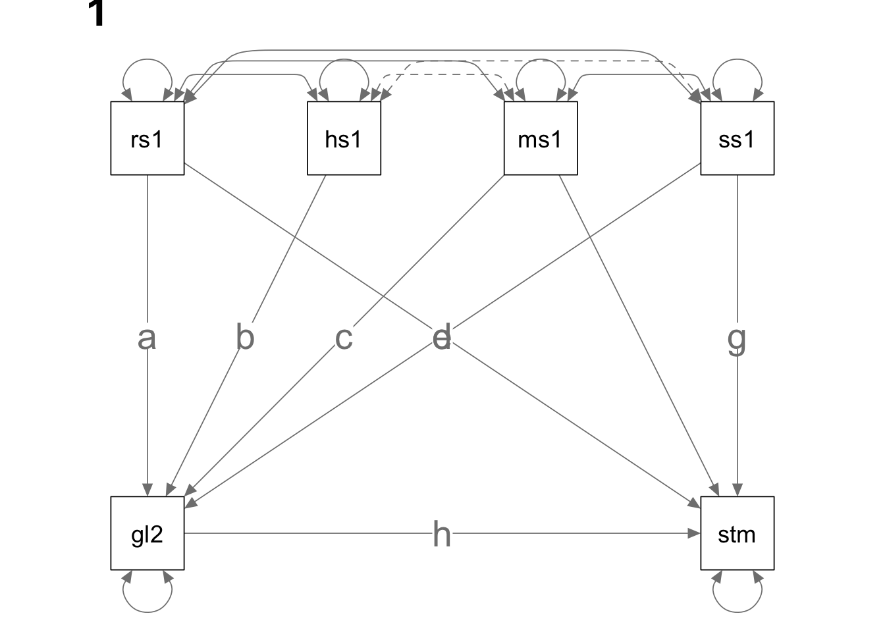
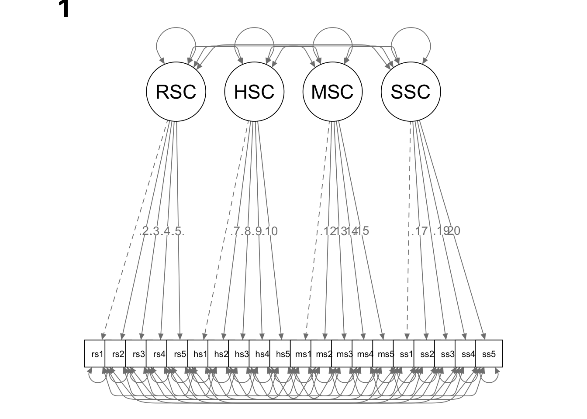
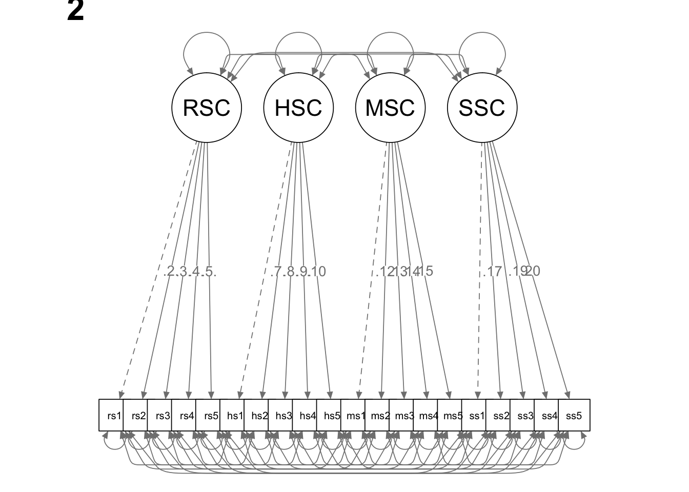
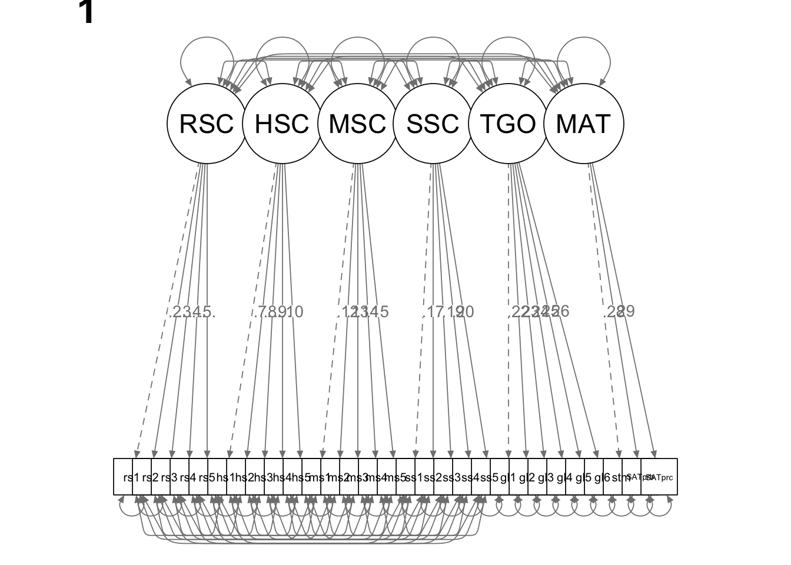
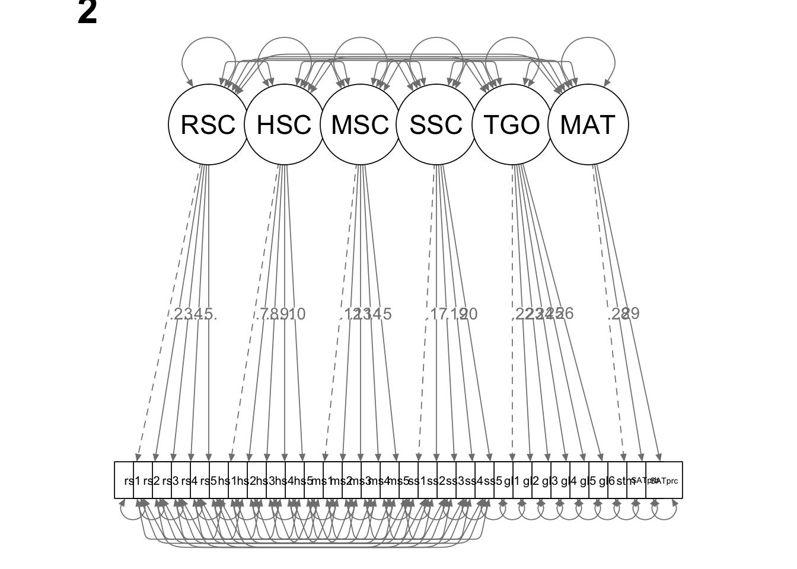
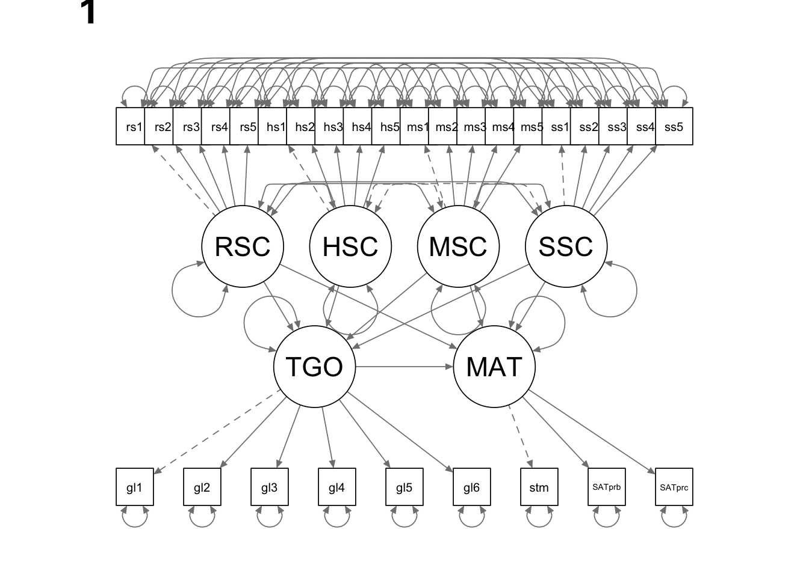
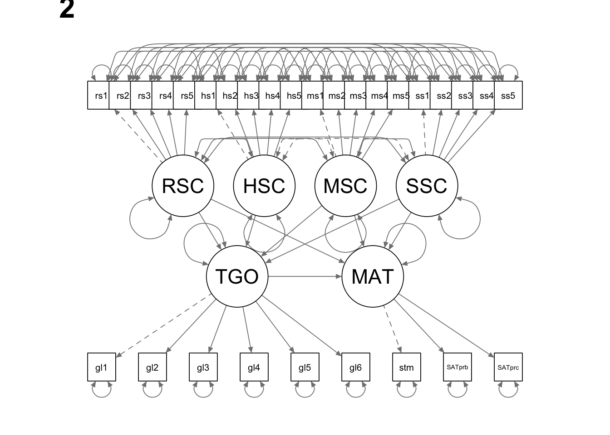

In this tutorial, we are going to use lavaan for
multi-group analysis. We are going to talk about the commonly utilized
strategy, as well as the “crazy Greg method”.
The “proficiencyraw-both.csv” file is provided as part of your course materials. The dataset contains data for 1000 \(9^{th}\) grade girls and 1000 \(9^{th}\) grade boys. For more information about the data, please refer to your course slides.
library(lavaan)
library(semPlot)setwd(mypath) # set working directory to where the data file is stored
data=read.table("proficiencyraw-both.csv", sep = ",", header = F)
colnames(data) <- c('gender', paste0('goals', 1:6), paste0('rsc', 1:5), paste0('hsc', 1:5),
paste0('msc',1:5), paste0('ssc', 1:5), 'SATvoc', 'SATcomp',
'SATlang', 'satmath', 'SATprob', 'SATproc')
library(psych)
knitr::kable(describe(data))| vars | n | mean | sd | median | trimmed | mad | min | max | range | skew | kurtosis | se | |
|---|---|---|---|---|---|---|---|---|---|---|---|---|---|
| gender | 1 | 2000 | 1.5000 | 0.500125 | 1.5 | 1.500000 | 0.7413 | 1 | 2 | 1 | 0.0000000 | -2.0009998 | 0.0111831 |
| goals1 | 2 | 2000 | 3.0190 | 1.330234 | 3.0 | 2.981875 | 1.4826 | 1 | 6 | 5 | 0.2252368 | -0.6670791 | 0.0297449 |
| goals2 | 3 | 2000 | 2.8650 | 1.298313 | 3.0 | 2.802500 | 1.4826 | 1 | 6 | 5 | 0.2539659 | -0.6579209 | 0.0290312 |
| goals3 | 4 | 2000 | 3.1395 | 1.291074 | 3.0 | 3.133125 | 1.4826 | 1 | 6 | 5 | 0.0783193 | -0.6164755 | 0.0288693 |
| goals4 | 5 | 2000 | 3.3105 | 1.301897 | 3.0 | 3.311250 | 1.4826 | 1 | 6 | 5 | 0.0795419 | -0.5810310 | 0.0291113 |
| goals5 | 6 | 2000 | 3.2060 | 1.377865 | 3.0 | 3.183750 | 1.4826 | 1 | 6 | 5 | 0.1443344 | -0.6867034 | 0.0308100 |
| goals6 | 7 | 2000 | 2.9215 | 1.348795 | 3.0 | 2.855000 | 1.4826 | 1 | 6 | 5 | 0.3102147 | -0.6220377 | 0.0301600 |
| rsc1 | 8 | 2000 | 3.4895 | 1.312155 | 4.0 | 3.493750 | 1.4826 | 1 | 6 | 5 | -0.0136844 | -0.6098020 | 0.0293407 |
| rsc2 | 9 | 2000 | 3.7990 | 1.336597 | 4.0 | 3.804375 | 1.4826 | 1 | 6 | 5 | -0.1047663 | -0.6756165 | 0.0298872 |
| rsc3 | 10 | 2000 | 3.8120 | 1.300577 | 4.0 | 3.819375 | 1.4826 | 1 | 6 | 5 | -0.1726535 | -0.5840041 | 0.0290818 |
| rsc4 | 11 | 2000 | 3.3590 | 1.281772 | 3.0 | 3.360625 | 1.4826 | 1 | 6 | 5 | 0.0451924 | -0.5704769 | 0.0286613 |
| rsc5 | 12 | 2000 | 3.6705 | 1.276614 | 4.0 | 3.670625 | 1.4826 | 1 | 6 | 5 | -0.0680246 | -0.5745883 | 0.0285460 |
| hsc1 | 13 | 2000 | 3.7665 | 1.341968 | 4.0 | 3.773125 | 1.4826 | 1 | 6 | 5 | -0.0934674 | -0.6443614 | 0.0300073 |
| hsc2 | 14 | 2000 | 3.8575 | 1.277501 | 4.0 | 3.866875 | 1.4826 | 1 | 6 | 5 | -0.1612892 | -0.5578072 | 0.0285658 |
| hsc3 | 15 | 2000 | 3.4485 | 1.320310 | 3.0 | 3.448750 | 1.4826 | 1 | 6 | 5 | 0.0234422 | -0.6058484 | 0.0295230 |
| hsc4 | 16 | 2000 | 3.3370 | 1.295867 | 3.0 | 3.336250 | 1.4826 | 1 | 6 | 5 | 0.0743682 | -0.5541253 | 0.0289765 |
| hsc5 | 17 | 2000 | 3.7780 | 1.332518 | 4.0 | 3.783125 | 1.4826 | 1 | 6 | 5 | -0.1196514 | -0.6473412 | 0.0297960 |
| msc1 | 18 | 2000 | 3.7435 | 1.412340 | 4.0 | 3.765000 | 1.4826 | 1 | 6 | 5 | -0.1208526 | -0.7679899 | 0.0315809 |
| msc2 | 19 | 2000 | 3.5785 | 1.376148 | 4.0 | 3.558125 | 1.4826 | 1 | 6 | 5 | 0.0325686 | -0.7224294 | 0.0307716 |
| msc3 | 20 | 2000 | 3.9360 | 1.320521 | 4.0 | 3.961875 | 1.4826 | 1 | 6 | 5 | -0.1950327 | -0.7014980 | 0.0295277 |
| msc4 | 21 | 2000 | 3.9595 | 1.381598 | 4.0 | 4.000625 | 1.4826 | 1 | 6 | 5 | -0.2015872 | -0.7674111 | 0.0308935 |
| msc5 | 22 | 2000 | 4.0370 | 1.318522 | 4.0 | 4.084375 | 1.4826 | 1 | 6 | 5 | -0.2303097 | -0.6644726 | 0.0294830 |
| ssc1 | 23 | 2000 | 3.7705 | 1.437311 | 4.0 | 3.796875 | 1.4826 | 1 | 6 | 5 | -0.1541706 | -0.8494820 | 0.0321392 |
| ssc2 | 24 | 2000 | 3.6780 | 1.401534 | 4.0 | 3.687500 | 1.4826 | 1 | 6 | 5 | -0.0959126 | -0.7631621 | 0.0313393 |
| ssc3 | 25 | 2000 | 3.9375 | 1.338465 | 4.0 | 3.969375 | 1.4826 | 1 | 6 | 5 | -0.1962259 | -0.6884128 | 0.0299290 |
| ssc4 | 26 | 2000 | 4.0075 | 1.404788 | 4.0 | 4.074375 | 1.4826 | 1 | 6 | 5 | -0.3054846 | -0.6784161 | 0.0314120 |
| ssc5 | 27 | 2000 | 4.0665 | 1.332278 | 4.0 | 4.120625 | 1.4826 | 1 | 6 | 5 | -0.2498037 | -0.6770238 | 0.0297906 |
| SATvoc | 28 | 2000 | 700.9150 | 47.814808 | 700.0 | 700.862500 | 44.4780 | 540 | 850 | 310 | 0.0002022 | -0.0875964 | 1.0691716 |
| SATcomp | 29 | 2000 | 688.6500 | 40.791046 | 690.0 | 688.743750 | 44.4780 | 540 | 840 | 300 | -0.0173719 | 0.0161634 | 0.9121155 |
| SATlang | 30 | 2000 | 661.7400 | 39.445537 | 660.0 | 661.662500 | 44.4780 | 530 | 780 | 250 | -0.0073689 | -0.0477727 | 0.8820290 |
| satmath | 31 | 2000 | 688.7600 | 37.228422 | 690.0 | 689.012500 | 44.4780 | 540 | 810 | 270 | -0.0688978 | -0.0943069 | 0.8324528 |
| SATprob | 32 | 2000 | 682.0650 | 36.953600 | 680.0 | 681.943750 | 29.6520 | 560 | 810 | 250 | 0.0012728 | 0.0053372 | 0.8263076 |
| SATproc | 33 | 2000 | 698.2200 | 46.023806 | 700.0 | 698.237500 | 44.4780 | 550 | 860 | 310 | -0.0077228 | -0.0070482 | 1.0291236 |
knitr::kable(cor(data))| gender | goals1 | goals2 | goals3 | goals4 | goals5 | goals6 | rsc1 | rsc2 | rsc3 | rsc4 | rsc5 | hsc1 | hsc2 | hsc3 | hsc4 | hsc5 | msc1 | msc2 | msc3 | msc4 | msc5 | ssc1 | ssc2 | ssc3 | ssc4 | ssc5 | SATvoc | SATcomp | SATlang | satmath | SATprob | SATproc | |
|---|---|---|---|---|---|---|---|---|---|---|---|---|---|---|---|---|---|---|---|---|---|---|---|---|---|---|---|---|---|---|---|---|---|
| gender | 1.0000000 | -0.2090380 | -0.2526986 | -0.2351343 | -0.2462407 | -0.2715022 | -0.2606682 | 0.1383567 | 0.1062665 | 0.1284366 | 0.1006671 | 0.0881457 | 0.0972696 | 0.1280162 | 0.1049258 | 0.0802752 | 0.1088438 | 0.2793935 | 0.3027320 | 0.3090462 | 0.2544791 | 0.2928253 | 0.3490027 | 0.3910979 | 0.3874808 | 0.3392818 | 0.3344732 | -0.1789642 | -0.1966609 | -0.1884081 | 0.0918883 | 0.0802558 | 0.0786746 |
| goals1 | -0.2090380 | 1.0000000 | 0.4970838 | 0.4403247 | 0.4240995 | 0.5210714 | 0.4689588 | 0.1216321 | 0.1310107 | 0.1099185 | 0.1347719 | 0.1067904 | 0.0691816 | 0.1187544 | 0.0737583 | 0.1016266 | 0.0929730 | 0.0901976 | 0.0737878 | 0.0818557 | 0.0894261 | 0.0803147 | 0.1134798 | 0.1028304 | 0.0709085 | 0.0791629 | 0.0828385 | 0.2867976 | 0.3158624 | 0.2598301 | 0.3035199 | 0.2776329 | 0.2509129 |
| goals2 | -0.2526986 | 0.4970838 | 1.0000000 | 0.5591757 | 0.5021928 | 0.6447459 | 0.6244148 | 0.0860864 | 0.1192680 | 0.0945777 | 0.1100005 | 0.1059493 | 0.0849750 | 0.1072300 | 0.0630632 | 0.0737363 | 0.1015117 | 0.0959613 | 0.1030909 | 0.0819098 | 0.1277477 | 0.1113355 | 0.0981250 | 0.1097090 | 0.0768980 | 0.0888741 | 0.0688189 | 0.3489826 | 0.3688194 | 0.3060324 | 0.3485324 | 0.3204942 | 0.3036446 |
| goals3 | -0.2351343 | 0.4403247 | 0.5591757 | 1.0000000 | 0.4780847 | 0.5842189 | 0.5624461 | 0.0896001 | 0.1203278 | 0.0954691 | 0.1232860 | 0.0986204 | 0.0912814 | 0.1157876 | 0.0671654 | 0.0887970 | 0.0971021 | 0.1153794 | 0.1068797 | 0.0967865 | 0.1321755 | 0.1024641 | 0.0857342 | 0.0942281 | 0.0551291 | 0.0954080 | 0.0809809 | 0.3062701 | 0.3309082 | 0.2944358 | 0.3324890 | 0.2805212 | 0.2941266 |
| goals4 | -0.2462407 | 0.4240995 | 0.5021928 | 0.4780847 | 1.0000000 | 0.5594362 | 0.5349361 | 0.0743865 | 0.1428268 | 0.0900358 | 0.1244261 | 0.0928911 | 0.0678614 | 0.1327921 | 0.0647483 | 0.0814601 | 0.1207837 | 0.1230509 | 0.0970989 | 0.0883838 | 0.0873708 | 0.1069587 | 0.0808748 | 0.0852539 | 0.0633909 | 0.0717576 | 0.0766325 | 0.3072363 | 0.3131956 | 0.2958350 | 0.3043765 | 0.2831154 | 0.2860773 |
| goals5 | -0.2715022 | 0.5210714 | 0.6447459 | 0.5842189 | 0.5594362 | 1.0000000 | 0.6692608 | 0.0980389 | 0.1539639 | 0.1156971 | 0.1337199 | 0.1205131 | 0.0952862 | 0.1297955 | 0.0853044 | 0.1070683 | 0.1145608 | 0.1485001 | 0.1381538 | 0.1238234 | 0.1594272 | 0.1400885 | 0.1122934 | 0.1232188 | 0.1013805 | 0.1036135 | 0.1094413 | 0.3783861 | 0.3947044 | 0.3405813 | 0.4074585 | 0.3848297 | 0.3675546 |
| goals6 | -0.2606682 | 0.4689588 | 0.6244148 | 0.5624461 | 0.5349361 | 0.6692608 | 1.0000000 | 0.0940820 | 0.1405307 | 0.1196246 | 0.1141108 | 0.1218074 | 0.0874287 | 0.1247303 | 0.0970300 | 0.1181776 | 0.1261265 | 0.0994560 | 0.0878132 | 0.0845266 | 0.1190945 | 0.0924906 | 0.1109500 | 0.1213182 | 0.0898319 | 0.1077654 | 0.1189932 | 0.3560624 | 0.3776788 | 0.3264848 | 0.3609930 | 0.3243232 | 0.3186408 |
| rsc1 | 0.1383567 | 0.1216321 | 0.0860864 | 0.0896001 | 0.0743865 | 0.0980389 | 0.0940820 | 1.0000000 | 0.5073685 | 0.4259386 | 0.4983629 | 0.4140830 | 0.2876712 | 0.2717216 | 0.2197173 | 0.2012550 | 0.2521573 | -0.0863493 | -0.0851475 | -0.0800710 | -0.0944694 | -0.1006867 | -0.0226308 | -0.0391059 | -0.0213093 | -0.0505712 | -0.0234946 | 0.3113921 | 0.3169466 | 0.2512579 | -0.0543373 | -0.0240550 | -0.0252433 |
| rsc2 | 0.1062665 | 0.1310107 | 0.1192680 | 0.1203278 | 0.1428268 | 0.1539639 | 0.1405307 | 0.5073685 | 1.0000000 | 0.4901999 | 0.5983910 | 0.5269940 | 0.2323586 | 0.3435720 | 0.2294133 | 0.2089533 | 0.2729423 | -0.0935752 | -0.0754562 | -0.0744642 | -0.0821580 | -0.0834897 | -0.0607399 | -0.0206810 | -0.0319125 | -0.0372956 | -0.0410902 | 0.3734340 | 0.3879083 | 0.3078907 | -0.0226048 | -0.0063794 | -0.0189117 |
| rsc3 | 0.1284366 | 0.1099185 | 0.0945777 | 0.0954691 | 0.0900358 | 0.1156971 | 0.1196246 | 0.4259386 | 0.4901999 | 1.0000000 | 0.5518461 | 0.4061775 | 0.1903752 | 0.2723076 | 0.2667459 | 0.1970018 | 0.2567660 | -0.0573123 | -0.0442967 | -0.0276899 | -0.0588059 | -0.0446586 | -0.0236277 | -0.0118207 | 0.0170986 | -0.0309892 | -0.0057730 | 0.3565561 | 0.3309962 | 0.2739494 | 0.0098541 | 0.0287949 | 0.0170550 |
| rsc4 | 0.1006671 | 0.1347719 | 0.1100005 | 0.1232860 | 0.1244261 | 0.1337199 | 0.1141108 | 0.4983629 | 0.5983910 | 0.5518461 | 1.0000000 | 0.5033842 | 0.2322695 | 0.2860467 | 0.2317414 | 0.2608260 | 0.2830469 | -0.1102118 | -0.1121262 | -0.0925213 | -0.1050619 | -0.0948869 | -0.0883083 | -0.0575879 | -0.0653521 | -0.0392797 | -0.0467966 | 0.3763079 | 0.4030841 | 0.2886190 | -0.0443414 | -0.0069987 | -0.0357172 |
| rsc5 | 0.0881457 | 0.1067904 | 0.1059493 | 0.0986204 | 0.0928911 | 0.1205131 | 0.1218074 | 0.4140830 | 0.5269940 | 0.4061775 | 0.5033842 | 1.0000000 | 0.2032692 | 0.2273204 | 0.1978298 | 0.1817613 | 0.3007485 | -0.0788057 | -0.0976030 | -0.0671164 | -0.0943593 | -0.0438709 | -0.0521383 | -0.0372410 | -0.0266966 | -0.0323735 | 0.0340666 | 0.3213623 | 0.3193215 | 0.2794137 | 0.0023456 | 0.0154907 | -0.0002811 |
| hsc1 | 0.0972696 | 0.0691816 | 0.0849750 | 0.0912814 | 0.0678614 | 0.0952862 | 0.0874287 | 0.2876712 | 0.2323586 | 0.1903752 | 0.2322695 | 0.2032692 | 1.0000000 | 0.5598023 | 0.4930887 | 0.4359192 | 0.5774977 | -0.0387426 | -0.0687608 | -0.0677186 | -0.0498921 | -0.0386539 | 0.0207026 | 0.0437865 | 0.0280771 | 0.0200353 | 0.0296745 | 0.3305376 | 0.3267012 | 0.2595306 | 0.0314505 | 0.0350479 | 0.0030676 |
| hsc2 | 0.1280162 | 0.1187544 | 0.1072300 | 0.1157876 | 0.1327921 | 0.1297955 | 0.1247303 | 0.2717216 | 0.3435720 | 0.2723076 | 0.2860467 | 0.2273204 | 0.5598023 | 1.0000000 | 0.5510031 | 0.5125106 | 0.6687650 | -0.0310815 | -0.0427190 | -0.0466277 | -0.0644921 | -0.0381496 | 0.0314923 | 0.0567819 | 0.0445244 | 0.0580183 | 0.0596520 | 0.3761553 | 0.3826974 | 0.2870547 | 0.0437209 | 0.0607032 | 0.0206982 |
| hsc3 | 0.1049258 | 0.0737583 | 0.0630632 | 0.0671654 | 0.0647483 | 0.0853044 | 0.0970300 | 0.2197173 | 0.2294133 | 0.2667459 | 0.2317414 | 0.1978298 | 0.4930887 | 0.5510031 | 1.0000000 | 0.4808841 | 0.5547857 | -0.0522910 | -0.0836753 | -0.0630061 | -0.0517411 | -0.0586754 | 0.0168345 | 0.0502380 | 0.0631438 | 0.0591404 | 0.0345107 | 0.3020599 | 0.3219488 | 0.2201472 | 0.0218028 | 0.0091016 | 0.0017013 |
| hsc4 | 0.0802752 | 0.1016266 | 0.0737363 | 0.0887970 | 0.0814601 | 0.1070683 | 0.1181776 | 0.2012550 | 0.2089533 | 0.1970018 | 0.2608260 | 0.1817613 | 0.4359192 | 0.5125106 | 0.4808841 | 1.0000000 | 0.5184616 | -0.0653584 | -0.0614080 | -0.0578427 | -0.0376376 | -0.0485831 | 0.0337561 | 0.0404970 | 0.0588730 | 0.0986379 | 0.0635084 | 0.3074673 | 0.3021757 | 0.2064689 | 0.0240130 | 0.0312161 | -0.0056221 |
| hsc5 | 0.1088438 | 0.0929730 | 0.1015117 | 0.0971021 | 0.1207837 | 0.1145608 | 0.1261265 | 0.2521573 | 0.2729423 | 0.2567660 | 0.2830469 | 0.3007485 | 0.5774977 | 0.6687650 | 0.5547857 | 0.5184616 | 1.0000000 | -0.0629672 | -0.0717870 | -0.0655061 | -0.0858608 | -0.0383161 | 0.0034222 | 0.0372413 | 0.0342891 | 0.0334933 | 0.0483336 | 0.3861851 | 0.3806590 | 0.2825947 | 0.0363982 | 0.0568593 | 0.0069309 |
| msc1 | 0.2793935 | 0.0901976 | 0.0959613 | 0.1153794 | 0.1230509 | 0.1485001 | 0.0994560 | -0.0863493 | -0.0935752 | -0.0573123 | -0.1102118 | -0.0788057 | -0.0387426 | -0.0310815 | -0.0522910 | -0.0653584 | -0.0629672 | 1.0000000 | 0.6948794 | 0.6842922 | 0.6581573 | 0.6713105 | 0.5353160 | 0.5041347 | 0.4480037 | 0.4535564 | 0.4575754 | 0.0136998 | 0.0190810 | 0.0075663 | 0.5822121 | 0.5411616 | 0.5361565 |
| msc2 | 0.3027320 | 0.0737878 | 0.1030909 | 0.1068797 | 0.0970989 | 0.1381538 | 0.0878132 | -0.0851475 | -0.0754562 | -0.0442967 | -0.1121262 | -0.0976030 | -0.0687608 | -0.0427190 | -0.0836753 | -0.0614080 | -0.0717870 | 0.6948794 | 1.0000000 | 0.6752780 | 0.6548477 | 0.6760656 | 0.4728289 | 0.4986511 | 0.4340867 | 0.4205819 | 0.4177525 | -0.0150428 | -0.0235093 | -0.0114567 | 0.5657973 | 0.5155679 | 0.5144188 |
| msc3 | 0.3090462 | 0.0818557 | 0.0819098 | 0.0967865 | 0.0883838 | 0.1238234 | 0.0845266 | -0.0800710 | -0.0744642 | -0.0276899 | -0.0925213 | -0.0671164 | -0.0677186 | -0.0466277 | -0.0630061 | -0.0578427 | -0.0655061 | 0.6842922 | 0.6752780 | 1.0000000 | 0.6821475 | 0.6570078 | 0.4764302 | 0.4786342 | 0.4638886 | 0.4511454 | 0.4249583 | -0.0063611 | -0.0156282 | -0.0094817 | 0.5586628 | 0.4970344 | 0.4977541 |
| msc4 | 0.2544791 | 0.0894261 | 0.1277477 | 0.1321755 | 0.0873708 | 0.1594272 | 0.1190945 | -0.0944694 | -0.0821580 | -0.0588059 | -0.1050619 | -0.0943593 | -0.0498921 | -0.0644921 | -0.0517411 | -0.0376376 | -0.0858608 | 0.6581573 | 0.6548477 | 0.6821475 | 1.0000000 | 0.6233663 | 0.4563221 | 0.4662933 | 0.4127955 | 0.4465753 | 0.4137475 | 0.0044990 | 0.0021361 | 0.0015691 | 0.5466898 | 0.4957648 | 0.4870285 |
| msc5 | 0.2928253 | 0.0803147 | 0.1113355 | 0.1024641 | 0.1069587 | 0.1400885 | 0.0924906 | -0.1006867 | -0.0834897 | -0.0446586 | -0.0948869 | -0.0438709 | -0.0386539 | -0.0381496 | -0.0586754 | -0.0485831 | -0.0383161 | 0.6713105 | 0.6760656 | 0.6570078 | 0.6233663 | 1.0000000 | 0.4669526 | 0.4536549 | 0.4245177 | 0.4122589 | 0.4662024 | -0.0048221 | -0.0220446 | -0.0102797 | 0.5472852 | 0.4978174 | 0.4804516 |
| ssc1 | 0.3490027 | 0.1134798 | 0.0981250 | 0.0857342 | 0.0808748 | 0.1122934 | 0.1109500 | -0.0226308 | -0.0607399 | -0.0236277 | -0.0883083 | -0.0521383 | 0.0207026 | 0.0314923 | 0.0168345 | 0.0337561 | 0.0034222 | 0.5353160 | 0.4728289 | 0.4764302 | 0.4563221 | 0.4669526 | 1.0000000 | 0.7524963 | 0.6993114 | 0.6901123 | 0.6550683 | 0.0295528 | 0.0258562 | 0.0303409 | 0.5369168 | 0.4738221 | 0.4711539 |
| ssc2 | 0.3910979 | 0.1028304 | 0.1097090 | 0.0942281 | 0.0852539 | 0.1232188 | 0.1213182 | -0.0391059 | -0.0206810 | -0.0118207 | -0.0575879 | -0.0372410 | 0.0437865 | 0.0567819 | 0.0502380 | 0.0404970 | 0.0372413 | 0.5041347 | 0.4986511 | 0.4786342 | 0.4662933 | 0.4536549 | 0.7524963 | 1.0000000 | 0.7284795 | 0.7096057 | 0.6887494 | 0.0522484 | 0.0511940 | 0.0379191 | 0.5461222 | 0.4719315 | 0.4959051 |
| ssc3 | 0.3874808 | 0.0709085 | 0.0768980 | 0.0551291 | 0.0633909 | 0.1013805 | 0.0898319 | -0.0213093 | -0.0319125 | 0.0170986 | -0.0653521 | -0.0266966 | 0.0280771 | 0.0445244 | 0.0631438 | 0.0588730 | 0.0342891 | 0.4480037 | 0.4340867 | 0.4638886 | 0.4127955 | 0.4245177 | 0.6993114 | 0.7284795 | 1.0000000 | 0.6983741 | 0.6346551 | 0.0399770 | 0.0328133 | 0.0192107 | 0.5052301 | 0.4417609 | 0.4539311 |
| ssc4 | 0.3392818 | 0.0791629 | 0.0888741 | 0.0954080 | 0.0717576 | 0.1036135 | 0.1077654 | -0.0505712 | -0.0372956 | -0.0309892 | -0.0392797 | -0.0323735 | 0.0200353 | 0.0580183 | 0.0591404 | 0.0986379 | 0.0334933 | 0.4535564 | 0.4205819 | 0.4511454 | 0.4465753 | 0.4122589 | 0.6901123 | 0.7096057 | 0.6983741 | 1.0000000 | 0.6195770 | 0.0558289 | 0.0281999 | 0.0395767 | 0.5060902 | 0.4428844 | 0.4558607 |
| ssc5 | 0.3344732 | 0.0828385 | 0.0688189 | 0.0809809 | 0.0766325 | 0.1094413 | 0.1189932 | -0.0234946 | -0.0410902 | -0.0057730 | -0.0467966 | 0.0340666 | 0.0296745 | 0.0596520 | 0.0345107 | 0.0635084 | 0.0483336 | 0.4575754 | 0.4177525 | 0.4249583 | 0.4137475 | 0.4662024 | 0.6550683 | 0.6887494 | 0.6346551 | 0.6195770 | 1.0000000 | 0.0617890 | 0.0421551 | 0.0521510 | 0.4782254 | 0.4264091 | 0.4311496 |
| SATvoc | -0.1789642 | 0.2867976 | 0.3489826 | 0.3062701 | 0.3072363 | 0.3783861 | 0.3560624 | 0.3113921 | 0.3734340 | 0.3565561 | 0.3763079 | 0.3213623 | 0.3305376 | 0.3761553 | 0.3020599 | 0.3074673 | 0.3861851 | 0.0136998 | -0.0150428 | -0.0063611 | 0.0044990 | -0.0048221 | 0.0295528 | 0.0522484 | 0.0399770 | 0.0558289 | 0.0617890 | 1.0000000 | 0.7844481 | 0.6535373 | 0.2853194 | 0.2794721 | 0.2489993 |
| SATcomp | -0.1966609 | 0.3158624 | 0.3688194 | 0.3309082 | 0.3131956 | 0.3947044 | 0.3776788 | 0.3169466 | 0.3879083 | 0.3309962 | 0.4030841 | 0.3193215 | 0.3267012 | 0.3826974 | 0.3219488 | 0.3021757 | 0.3806590 | 0.0190810 | -0.0235093 | -0.0156282 | 0.0021361 | -0.0220446 | 0.0258562 | 0.0511940 | 0.0328133 | 0.0281999 | 0.0421551 | 0.7844481 | 1.0000000 | 0.6611029 | 0.2892135 | 0.2789934 | 0.2686216 |
| SATlang | -0.1884081 | 0.2598301 | 0.3060324 | 0.2944358 | 0.2958350 | 0.3405813 | 0.3264848 | 0.2512579 | 0.3078907 | 0.2739494 | 0.2886190 | 0.2794137 | 0.2595306 | 0.2870547 | 0.2201472 | 0.2064689 | 0.2825947 | 0.0075663 | -0.0114567 | -0.0094817 | 0.0015691 | -0.0102797 | 0.0303409 | 0.0379191 | 0.0192107 | 0.0395767 | 0.0521510 | 0.6535373 | 0.6611029 | 1.0000000 | 0.2526008 | 0.2473749 | 0.2203039 |
| satmath | 0.0918883 | 0.3035199 | 0.3485324 | 0.3324890 | 0.3043765 | 0.4074585 | 0.3609930 | -0.0543373 | -0.0226048 | 0.0098541 | -0.0443414 | 0.0023456 | 0.0314505 | 0.0437209 | 0.0218028 | 0.0240130 | 0.0363982 | 0.5822121 | 0.5657973 | 0.5586628 | 0.5466898 | 0.5472852 | 0.5369168 | 0.5461222 | 0.5052301 | 0.5060902 | 0.4782254 | 0.2853194 | 0.2892135 | 0.2526008 | 1.0000000 | 0.7467516 | 0.7364763 |
| SATprob | 0.0802558 | 0.2776329 | 0.3204942 | 0.2805212 | 0.2831154 | 0.3848297 | 0.3243232 | -0.0240550 | -0.0063794 | 0.0287949 | -0.0069987 | 0.0154907 | 0.0350479 | 0.0607032 | 0.0091016 | 0.0312161 | 0.0568593 | 0.5411616 | 0.5155679 | 0.4970344 | 0.4957648 | 0.4978174 | 0.4738221 | 0.4719315 | 0.4417609 | 0.4428844 | 0.4264091 | 0.2794721 | 0.2789934 | 0.2473749 | 0.7467516 | 1.0000000 | 0.6662328 |
| SATproc | 0.0786746 | 0.2509129 | 0.3036446 | 0.2941266 | 0.2860773 | 0.3675546 | 0.3186408 | -0.0252433 | -0.0189117 | 0.0170550 | -0.0357172 | -0.0002811 | 0.0030676 | 0.0206982 | 0.0017013 | -0.0056221 | 0.0069309 | 0.5361565 | 0.5144188 | 0.4977541 | 0.4870285 | 0.4804516 | 0.4711539 | 0.4959051 | 0.4539311 | 0.4558607 | 0.4311496 | 0.2489993 | 0.2686216 | 0.2203039 | 0.7364763 | 0.6662328 | 1.0000000 |
We first fit the path model in two groups separately. Try it out yourseldf. :)
Knowing that the model is tenable in each group separately, we now
fit the path model two groups simultaneously. Because we are fitting the
same model to each of the groups, you only need to specify one set of
model syntax. To conduct multi-group analysis, you need to make sure
that your data contain the grouping variable (in our example, it’s
“gender”). Additionally, when you call the sem() function,
you need to specify the group= argument by supplying the
name of the grouping variable. By default, the same model is fitted in
all groups. Without further constraints, all parameters are allowed to
differ between groups.
step2.mg <- '
goals2 ~ rsc1 + hsc1 + msc1 + ssc1
satmath ~ rsc1 + msc1 + ssc1 + goals2
hsc1 ~~ rsc1
rsc1 ~~ msc1
rsc1 ~~ ssc1
msc1 ~~ ssc1
hsc1 ~~ 0*msc1
hsc1 ~~ 0*ssc1
'
step2.mg.fit <- sem(step2.mg, data = data, group = "gender")
summary(step2.mg.fit, fit.measures = T, standardized = T)## lavaan 0.6-19 ended normally after 54 iterations
##
## Estimator ML
## Optimization method NLMINB
## Number of model parameters 48
##
## Number of observations per group:
## 1 1000
## 2 1000
##
## Model Test User Model:
##
## Test statistic 18.029
## Degrees of freedom 6
## P-value (Chi-square) 0.006
## Test statistic for each group:
## 1 4.489
## 2 13.540
##
## Model Test Baseline Model:
##
## Test statistic 2281.996
## Degrees of freedom 30
## P-value 0.000
##
## User Model versus Baseline Model:
##
## Comparative Fit Index (CFI) 0.995
## Tucker-Lewis Index (TLI) 0.973
##
## Loglikelihood and Information Criteria:
##
## Loglikelihood user model (H0) -25875.926
## Loglikelihood unrestricted model (H1) -25866.911
##
## Akaike (AIC) 51847.852
## Bayesian (BIC) 52116.696
## Sample-size adjusted Bayesian (SABIC) 51964.197
##
## Root Mean Square Error of Approximation:
##
## RMSEA 0.045
## 90 Percent confidence interval - lower 0.022
## 90 Percent confidence interval - upper 0.069
## P-value H_0: RMSEA <= 0.050 0.598
## P-value H_0: RMSEA >= 0.080 0.007
##
## Standardized Root Mean Square Residual:
##
## SRMR 0.016
##
## Parameter Estimates:
##
## Standard errors Standard
## Information Expected
## Information saturated (h1) model Structured
##
##
## Group 1 [1]:
##
## Regressions:
## Estimate Std.Err z-value P(>|z|)
## goals2 ~
## rsc1 0.128 0.033 3.915 0.000
## hsc1 0.076 0.030 2.537 0.011
## msc1 0.100 0.032 3.106 0.002
## ssc1 0.150 0.032 4.677 0.000
## satmath ~
## rsc1 0.127 0.693 0.183 0.855
## msc1 9.785 0.718 13.636 0.000
## ssc1 7.866 0.719 10.942 0.000
## goals2 7.686 0.699 10.999 0.000
## Std.lv Std.all
##
## 0.128 0.127
## 0.076 0.081
## 0.100 0.110
## 0.150 0.163
##
## 0.127 0.004
## 9.785 0.368
## 7.866 0.294
## 7.686 0.264
##
## Covariances:
## Estimate Std.Err z-value P(>|z|)
## rsc1 ~~
## hsc1 0.540 0.057 9.529 0.000
## msc1 -0.271 0.054 -5.028 0.000
## ssc1 -0.118 0.053 -2.216 0.027
## msc1 ~~
## ssc1 0.954 0.068 13.968 0.000
## hsc1 ~~
## msc1 0.000
## ssc1 0.000
## Std.lv Std.all
##
## 0.540 0.312
## -0.271 -0.153
## -0.118 -0.067
##
## 0.954 0.492
##
## 0.000 0.000
## 0.000 0.000
##
## Intercepts:
## Estimate Std.Err z-value P(>|z|)
## .goals2 1.669 0.177 9.428 0.000
## .satmath 601.893 3.824 157.411 0.000
## rsc1 3.308 0.040 82.419 0.000
## hsc1 3.636 0.043 84.455 0.000
## msc1 3.349 0.044 75.855 0.000
## ssc1 3.269 0.044 74.476 0.000
## Std.lv Std.all
## 1.669 1.307
## 601.893 16.219
## 3.308 2.606
## 3.636 2.671
## 3.349 2.399
## 3.269 2.355
##
## Variances:
## Estimate Std.Err z-value P(>|z|)
## .goals2 1.502 0.067 22.361 0.000
## .satmath 738.308 33.018 22.361 0.000
## rsc1 1.611 0.072 22.412 0.000
## hsc1 1.854 0.083 22.361 0.000
## msc1 1.949 0.087 22.361 0.000
## ssc1 1.927 0.086 22.361 0.000
## Std.lv Std.all
## 1.502 0.922
## 738.308 0.536
## 1.611 1.000
## 1.854 1.000
## 1.949 1.000
## 1.927 1.000
##
##
## Group 2 [2]:
##
## Regressions:
## Estimate Std.Err z-value P(>|z|)
## goals2 ~
## rsc1 0.123 0.029 4.236 0.000
## hsc1 0.091 0.029 3.112 0.002
## msc1 0.138 0.032 4.251 0.000
## ssc1 0.138 0.033 4.218 0.000
## satmath ~
## rsc1 -1.642 0.624 -2.631 0.009
## msc1 11.618 0.712 16.323 0.000
## ssc1 8.505 0.718 11.852 0.000
## goals2 7.528 0.685 10.996 0.000
## Std.lv Std.all
##
## 0.123 0.132
## 0.091 0.097
## 0.138 0.146
## 0.138 0.145
##
## -1.642 -0.059
## 11.618 0.412
## 8.505 0.299
## 7.528 0.251
##
## Covariances:
## Estimate Std.Err z-value P(>|z|)
## rsc1 ~~
## hsc1 0.402 0.056 7.180 0.000
## msc1 -0.126 0.054 -2.354 0.019
## ssc1 -0.135 0.053 -2.536 0.011
## msc1 ~~
## ssc1 0.822 0.060 13.684 0.000
## hsc1 ~~
## msc1 0.000
## ssc1 0.000
## Std.lv Std.all
##
## 0.402 0.232
## -0.126 -0.073
## -0.135 -0.078
##
## 0.822 0.480
##
## 0.000 0.000
## 0.000 0.000
##
## Intercepts:
## Estimate Std.Err z-value P(>|z|)
## .goals2 0.568 0.205 2.777 0.005
## .satmath 594.703 4.075 145.934 0.000
## rsc1 3.671 0.042 87.703 0.000
## hsc1 3.897 0.041 94.174 0.000
## msc1 4.138 0.042 99.575 0.000
## ssc1 4.272 0.041 103.611 0.000
## Std.lv Std.all
## 0.568 0.459
## 594.703 16.040
## 3.671 2.773
## 3.897 2.978
## 4.138 3.149
## 4.272 3.276
##
## Variances:
## Estimate Std.Err z-value P(>|z|)
## .goals2 1.395 0.062 22.361 0.000
## .satmath 660.168 29.524 22.361 0.000
## rsc1 1.752 0.078 22.370 0.000
## hsc1 1.712 0.077 22.361 0.000
## msc1 1.727 0.077 22.361 0.000
## ssc1 1.700 0.076 22.361 0.000
## Std.lv Std.all
## 1.395 0.910
## 660.168 0.480
## 1.752 1.000
## 1.712 1.000
## 1.727 1.000
## 1.700 1.000step2.mod <- modindices(step2.mg.fit)
step2.mod[step2.mod$mi >= 3.481, ]## lhs op rhs block group level mi epc
## 13 hsc1 ~~ msc1 1 1 1 3.702 -0.101
## 39 hsc1 ~~ msc1 2 2 1 6.737 -0.124
## 71 hsc1 ~ rsc1 1 1 1 4.367 0.462
## 72 hsc1 ~ msc1 1 1 1 4.322 -0.064
## 74 msc1 ~ goals2 1 1 1 3.702 -0.480
## 76 msc1 ~ rsc1 1 1 1 3.702 -0.187
## 77 msc1 ~ hsc1 1 1 1 3.702 -0.054
## 89 satmath ~~ rsc1 2 2 1 6.713 -11.633
## 90 satmath ~~ hsc1 2 2 1 6.713 2.692
## 93 goals2 ~ satmath 2 2 1 6.714 -0.038
## 94 satmath ~ hsc1 2 2 1 6.713 1.662
## 96 rsc1 ~ satmath 2 2 1 6.714 -0.018
## 103 hsc1 ~ msc1 2 2 1 5.266 -0.072
## 105 msc1 ~ goals2 2 2 1 6.737 -0.601
## 106 msc1 ~ satmath 2 2 1 11.033 -0.167
## 107 msc1 ~ rsc1 2 2 1 6.738 -0.308
## 108 msc1 ~ hsc1 2 2 1 6.737 -0.072
## sepc.lv sepc.all sepc.nox
## 13 -0.101 -0.053 -0.053
## 39 -0.124 -0.072 -0.072
## 71 0.462 0.431 0.431
## 72 -0.064 -0.066 -0.066
## 74 -0.480 -0.438 -0.438
## 76 -0.187 -0.170 -0.170
## 77 -0.054 -0.053 -0.053
## 89 -11.633 -0.342 -0.342
## 90 2.692 0.080 0.080
## 93 -0.038 -1.152 -1.152
## 94 1.662 0.059 0.059
## 96 -0.018 -0.494 -0.494
## 103 -0.072 -0.073 -0.073
## 105 -0.601 -0.566 -0.566
## 106 -0.167 -4.721 -4.721
## 107 -0.308 -0.310 -0.310
## 108 -0.072 -0.072 -0.072Next we test whether the path coefficients are equal across groups. Let’s start with the commonly utilized strategy.
Using this strategy, we first constrain all the parameters of interest to be equal across groups. In order to constrain the parameters to be equal across groups, we need to give the corresponding parameters the same label. In multi-group scenario, we can still give parameters labels by multiplication. The difference is that we now need to multiply it by a vector of arguments, one for each group.
## constrain all paths to be equal
step3.mg <- '
goals2 ~ c(a,a)*rsc1 + c(b,b)*hsc1 + c(c,c)*msc1 + c(d,d)*ssc1
satmath ~ c(e,e)*rsc1 + c(f,f)*msc1 + c(g,g)*ssc1 + c(h,h)*goals2
hsc1 ~~ rsc1
rsc1 ~~ msc1
rsc1 ~~ ssc1
msc1 ~~ ssc1
hsc1 ~~ 0*msc1
hsc1 ~~ 0*ssc1
'
step3.mg.fit <- sem(step3.mg, data, group = "gender")
summary(step3.mg.fit, fit.measures = T, standardized = T)## lavaan 0.6-19 ended normally after 79 iterations
##
## Estimator ML
## Optimization method NLMINB
## Number of model parameters 48
## Number of equality constraints 8
##
## Number of observations per group:
## 1 1000
## 2 1000
##
## Model Test User Model:
##
## Test statistic 30.213
## Degrees of freedom 14
## P-value (Chi-square) 0.007
## Test statistic for each group:
## 1 10.582
## 2 19.631
##
## Model Test Baseline Model:
##
## Test statistic 2281.996
## Degrees of freedom 30
## P-value 0.000
##
## User Model versus Baseline Model:
##
## Comparative Fit Index (CFI) 0.993
## Tucker-Lewis Index (TLI) 0.985
##
## Loglikelihood and Information Criteria:
##
## Loglikelihood user model (H0) -25882.018
## Loglikelihood unrestricted model (H1) -25866.911
##
## Akaike (AIC) 51844.036
## Bayesian (BIC) 52068.072
## Sample-size adjusted Bayesian (SABIC) 51940.990
##
## Root Mean Square Error of Approximation:
##
## RMSEA 0.034
## 90 Percent confidence interval - lower 0.017
## 90 Percent confidence interval - upper 0.051
## P-value H_0: RMSEA <= 0.050 0.941
## P-value H_0: RMSEA >= 0.080 0.000
##
## Standardized Root Mean Square Residual:
##
## SRMR 0.023
##
## Parameter Estimates:
##
## Standard errors Standard
## Information Expected
## Information saturated (h1) model Structured
##
##
## Group 1 [1]:
##
## Regressions:
## Estimate Std.Err z-value P(>|z|)
## goals2 ~
## rsc1 (a) 0.126 0.022 5.803 0.000
## hsc1 (b) 0.084 0.021 3.986 0.000
## msc1 (c) 0.119 0.023 5.192 0.000
## ssc1 (d) 0.144 0.023 6.297 0.000
## satmath ~
## rsc1 (e) -0.820 0.465 -1.764 0.078
## msc1 (f) 10.645 0.506 21.040 0.000
## ssc1 (g) 8.198 0.509 16.103 0.000
## goals2 (h) 7.630 0.490 15.561 0.000
## Std.lv Std.all
##
## 0.126 0.125
## 0.084 0.089
## 0.119 0.129
## 0.144 0.156
##
## -0.820 -0.027
## 10.645 0.389
## 8.198 0.298
## 7.630 0.256
##
## Covariances:
## Estimate Std.Err z-value P(>|z|)
## rsc1 ~~
## hsc1 0.540 0.057 9.529 0.000
## msc1 -0.271 0.054 -5.028 0.000
## ssc1 -0.118 0.053 -2.216 0.027
## msc1 ~~
## ssc1 0.954 0.068 13.968 0.000
## hsc1 ~~
## msc1 0.000
## ssc1 0.000
## Std.lv Std.all
##
## 0.540 0.312
## -0.271 -0.153
## -0.118 -0.067
##
## 0.954 0.492
##
## 0.000 0.000
## 0.000 0.000
##
## Intercepts:
## Estimate Std.Err z-value P(>|z|)
## .goals2 1.605 0.128 12.579 0.000
## .satmath 601.238 2.696 223.012 0.000
## rsc1 3.308 0.040 82.419 0.000
## hsc1 3.636 0.043 84.455 0.000
## msc1 3.349 0.044 75.855 0.000
## ssc1 3.269 0.044 74.476 0.000
## Std.lv Std.all
## 1.605 1.253
## 601.238 15.729
## 3.308 2.606
## 3.636 2.671
## 3.349 2.399
## 3.269 2.355
##
## Variances:
## Estimate Std.Err z-value P(>|z|)
## .goals2 1.503 0.067 22.361 0.000
## .satmath 742.525 33.207 22.361 0.000
## rsc1 1.611 0.072 22.412 0.000
## hsc1 1.854 0.083 22.361 0.000
## msc1 1.949 0.087 22.361 0.000
## ssc1 1.927 0.086 22.361 0.000
## Std.lv Std.all
## 1.503 0.916
## 742.525 0.508
## 1.611 1.000
## 1.854 1.000
## 1.949 1.000
## 1.927 1.000
##
##
## Group 2 [2]:
##
## Regressions:
## Estimate Std.Err z-value P(>|z|)
## goals2 ~
## rsc1 (a) 0.126 0.022 5.803 0.000
## hsc1 (b) 0.084 0.021 3.986 0.000
## msc1 (c) 0.119 0.023 5.192 0.000
## ssc1 (d) 0.144 0.023 6.297 0.000
## satmath ~
## rsc1 (e) -0.820 0.465 -1.764 0.078
## msc1 (f) 10.645 0.506 21.040 0.000
## ssc1 (g) 8.198 0.509 16.103 0.000
## goals2 (h) 7.630 0.490 15.561 0.000
## Std.lv Std.all
##
## 0.126 0.135
## 0.084 0.089
## 0.119 0.126
## 0.144 0.152
##
## -0.820 -0.030
## 10.645 0.388
## 8.198 0.297
## 7.630 0.261
##
## Covariances:
## Estimate Std.Err z-value P(>|z|)
## rsc1 ~~
## hsc1 0.402 0.056 7.180 0.000
## msc1 -0.126 0.054 -2.354 0.019
## ssc1 -0.135 0.053 -2.536 0.011
## msc1 ~~
## ssc1 0.822 0.060 13.684 0.000
## hsc1 ~~
## msc1 0.000
## ssc1 0.000
## Std.lv Std.all
##
## 0.402 0.232
## -0.126 -0.073
## -0.135 -0.078
##
## 0.822 0.480
##
## 0.000 0.000
## 0.000 0.000
##
## Intercepts:
## Estimate Std.Err z-value P(>|z|)
## .goals2 0.643 0.147 4.370 0.000
## .satmath 596.760 3.015 197.935 0.000
## rsc1 3.671 0.042 87.703 0.000
## hsc1 3.897 0.041 94.174 0.000
## msc1 4.138 0.042 99.575 0.000
## ssc1 4.272 0.041 103.611 0.000
## Std.lv Std.all
## 0.643 0.521
## 596.760 16.556
## 3.671 2.773
## 3.897 2.978
## 4.138 3.149
## 4.272 3.276
##
## Variances:
## Estimate Std.Err z-value P(>|z|)
## .goals2 1.396 0.062 22.361 0.000
## .satmath 663.922 29.691 22.361 0.000
## rsc1 1.752 0.078 22.370 0.000
## hsc1 1.712 0.077 22.361 0.000
## msc1 1.727 0.077 22.361 0.000
## ssc1 1.700 0.076 22.361 0.000
## Std.lv Std.all
## 1.396 0.916
## 663.922 0.511
## 1.752 1.000
## 1.712 1.000
## 1.727 1.000
## 1.700 1.000step3.mod <- modindices(step3.mg.fit, sort = T)
step3.mod[step3.mod$mi >= 3.841, ]## lhs op rhs block group level mi epc
## 97 satmath ~~ rsc1 2 2 1 7.655 -4.180
## 104 rsc1 ~ satmath 2 2 1 7.081 -0.006
## 39 hsc1 ~~ msc1 2 2 1 6.737 -0.124
## 116 msc1 ~ hsc1 2 2 1 6.737 -0.072
## 115 msc1 ~ rsc1 2 2 1 6.737 -0.308
## 98 satmath ~~ hsc1 2 2 1 5.991 2.543
## 111 hsc1 ~ msc1 2 2 1 5.266 -0.072
## 79 hsc1 ~ rsc1 1 1 1 4.367 0.462
## 102 satmath ~ hsc1 2 2 1 4.363 1.323
## 80 hsc1 ~ msc1 1 1 1 4.322 -0.064
## 83 msc1 ~ satmath 1 1 1 3.895 -0.004
## 114 msc1 ~ satmath 2 2 1 3.873 0.004
## sepc.lv sepc.all sepc.nox
## 97 -4.180 -0.123 -0.123
## 104 -0.006 -0.156 -0.156
## 39 -0.124 -0.072 -0.072
## 116 -0.072 -0.072 -0.072
## 115 -0.308 -0.310 -0.310
## 98 2.543 0.075 0.075
## 111 -0.072 -0.073 -0.073
## 79 0.462 0.431 0.431
## 102 1.323 0.048 0.048
## 80 -0.064 -0.066 -0.066
## 83 -0.004 -0.100 -0.100
## 114 0.004 0.102 0.102The model fit is pretty good. Let’s do a likelihood ratio test to compare the fit of the two models.
anova(step2.mg.fit,step3.mg.fit)##
## Chi-Squared Difference Test
##
## Df AIC BIC Chisq Chisq diff RMSEA
## step2.mg.fit 6 51848 52117 18.029
## step3.mg.fit 14 51844 52068 30.213 12.184 0.022868
## Df diff Pr(>Chisq)
## step2.mg.fit
## step3.mg.fit 8 0.1432The test is not statistically significant. We can accept the constrained model and conclude that the path coefficients are equal across groups. But for illustration purpose, we can still try to free one of the paths (as we did in class with Mplus). To allow the path of msc1 –> satmath to freely vary across groups, we just need to simply remove the pre-multiplier label.
step3.mg2 <- '
goals2 ~ c(a,a)*rsc1 + c(b,b)*hsc1 + c(c,c)*msc1 + c(d,d)*ssc1
satmath ~ c(e,e)*rsc1 + msc1 + c(g,g)*ssc1 + c(h,h)*goals2
hsc1 ~~ rsc1
rsc1 ~~ msc1
rsc1 ~~ ssc1
msc1 ~~ ssc1
hsc1 ~~ 0*msc1
hsc1 ~~ 0*ssc1
'
step3.mg.fit2 <- sem(step3.mg2, data,group = "gender")
summary(step3.mg.fit2, fit.measures = T, standardized = T)## lavaan 0.6-19 ended normally after 88 iterations
##
## Estimator ML
## Optimization method NLMINB
## Number of model parameters 48
## Number of equality constraints 7
##
## Number of observations per group:
## 1 1000
## 2 1000
##
## Model Test User Model:
##
## Test statistic 23.055
## Degrees of freedom 13
## P-value (Chi-square) 0.041
## Test statistic for each group:
## 1 7.223
## 2 15.831
##
## Model Test Baseline Model:
##
## Test statistic 2281.996
## Degrees of freedom 30
## P-value 0.000
##
## User Model versus Baseline Model:
##
## Comparative Fit Index (CFI) 0.996
## Tucker-Lewis Index (TLI) 0.990
##
## Loglikelihood and Information Criteria:
##
## Loglikelihood user model (H0) -25878.439
## Loglikelihood unrestricted model (H1) -25866.911
##
## Akaike (AIC) 51838.878
## Bayesian (BIC) 52068.515
## Sample-size adjusted Bayesian (SABIC) 51938.255
##
## Root Mean Square Error of Approximation:
##
## RMSEA 0.028
## 90 Percent confidence interval - lower 0.006
## 90 Percent confidence interval - upper 0.046
## P-value H_0: RMSEA <= 0.050 0.980
## P-value H_0: RMSEA >= 0.080 0.000
##
## Standardized Root Mean Square Residual:
##
## SRMR 0.017
##
## Parameter Estimates:
##
## Standard errors Standard
## Information Expected
## Information saturated (h1) model Structured
##
##
## Group 1 [1]:
##
## Regressions:
## Estimate Std.Err z-value P(>|z|)
## goals2 ~
## rsc1 (a) 0.126 0.022 5.803 0.000
## hsc1 (b) 0.084 0.021 3.986 0.000
## msc1 (c) 0.119 0.023 5.192 0.000
## ssc1 (d) 0.144 0.023 6.297 0.000
## satmath ~
## rsc1 (e) -0.860 0.464 -1.853 0.064
## msc1 9.472 0.669 14.164 0.000
## ssc1 (g) 8.211 0.508 16.157 0.000
## goals2 (h) 7.609 0.489 15.545 0.000
## Std.lv Std.all
##
## 0.126 0.125
## 0.084 0.089
## 0.119 0.129
## 0.144 0.156
##
## -0.860 -0.029
## 9.472 0.355
## 8.211 0.306
## 7.609 0.262
##
## Covariances:
## Estimate Std.Err z-value P(>|z|)
## rsc1 ~~
## hsc1 0.540 0.057 9.529 0.000
## msc1 -0.271 0.054 -5.028 0.000
## ssc1 -0.118 0.053 -2.216 0.027
## msc1 ~~
## ssc1 0.954 0.068 13.968 0.000
## hsc1 ~~
## msc1 0.000
## ssc1 0.000
## Std.lv Std.all
##
## 0.540 0.312
## -0.271 -0.153
## -0.118 -0.067
##
## 0.954 0.492
##
## 0.000 0.000
## 0.000 0.000
##
## Intercepts:
## Estimate Std.Err z-value P(>|z|)
## .goals2 1.605 0.128 12.579 0.000
## .satmath 605.325 3.085 196.216 0.000
## rsc1 3.308 0.040 82.419 0.000
## hsc1 3.636 0.043 84.455 0.000
## msc1 3.349 0.044 75.855 0.000
## ssc1 3.269 0.044 74.476 0.000
## Std.lv Std.all
## 1.605 1.253
## 605.325 16.247
## 3.308 2.606
## 3.636 2.671
## 3.349 2.399
## 3.269 2.355
##
## Variances:
## Estimate Std.Err z-value P(>|z|)
## .goals2 1.503 0.067 22.361 0.000
## .satmath 740.036 33.095 22.361 0.000
## rsc1 1.611 0.072 22.412 0.000
## hsc1 1.854 0.083 22.361 0.000
## msc1 1.949 0.087 22.361 0.000
## ssc1 1.927 0.086 22.361 0.000
## Std.lv Std.all
## 1.503 0.916
## 740.036 0.533
## 1.611 1.000
## 1.854 1.000
## 1.949 1.000
## 1.927 1.000
##
##
## Group 2 [2]:
##
## Regressions:
## Estimate Std.Err z-value P(>|z|)
## goals2 ~
## rsc1 (a) 0.126 0.022 5.803 0.000
## hsc1 (b) 0.084 0.021 3.986 0.000
## msc1 (c) 0.119 0.023 5.192 0.000
## ssc1 (d) 0.144 0.023 6.297 0.000
## satmath ~
## rsc1 (e) -0.860 0.464 -1.853 0.064
## msc1 11.813 0.667 17.715 0.000
## ssc1 (g) 8.211 0.508 16.157 0.000
## goals2 (h) 7.609 0.489 15.545 0.000
## Std.lv Std.all
##
## 0.126 0.135
## 0.084 0.089
## 0.119 0.126
## 0.144 0.152
##
## -0.860 -0.031
## 11.813 0.420
## 8.211 0.290
## 7.609 0.254
##
## Covariances:
## Estimate Std.Err z-value P(>|z|)
## rsc1 ~~
## hsc1 0.402 0.056 7.180 0.000
## msc1 -0.126 0.054 -2.354 0.019
## ssc1 -0.135 0.053 -2.536 0.011
## msc1 ~~
## ssc1 0.822 0.060 13.684 0.000
## hsc1 ~~
## msc1 0.000
## ssc1 0.000
## Std.lv Std.all
##
## 0.402 0.232
## -0.126 -0.073
## -0.135 -0.078
##
## 0.822 0.480
##
## 0.000 0.000
## 0.000 0.000
##
## Intercepts:
## Estimate Std.Err z-value P(>|z|)
## .goals2 0.643 0.147 4.370 0.000
## .satmath 592.075 3.486 169.845 0.000
## rsc1 3.671 0.042 87.703 0.000
## hsc1 3.897 0.041 94.174 0.000
## msc1 4.138 0.042 99.575 0.000
## ssc1 4.272 0.041 103.611 0.000
## Std.lv Std.all
## 0.643 0.521
## 592.075 16.034
## 3.671 2.773
## 3.897 2.978
## 4.138 3.149
## 4.272 3.276
##
## Variances:
## Estimate Std.Err z-value P(>|z|)
## .goals2 1.396 0.062 22.361 0.000
## .satmath 661.404 29.579 22.361 0.000
## rsc1 1.752 0.078 22.370 0.000
## hsc1 1.712 0.077 22.361 0.000
## msc1 1.727 0.077 22.361 0.000
## ssc1 1.700 0.076 22.361 0.000
## Std.lv Std.all
## 1.396 0.916
## 661.404 0.485
## 1.752 1.000
## 1.712 1.000
## 1.727 1.000
## 1.700 1.000step3.mod2 <- modindices(step3.mg.fit2, sort = T)
step3.mod2[step3.mod2$mi >= 3.841, ]## lhs op rhs block group level mi epc
## 96 satmath ~~ rsc1 2 2 1 7.159 -4.038
## 39 hsc1 ~~ msc1 2 2 1 6.737 -0.124
## 115 msc1 ~ hsc1 2 2 1 6.737 -0.072
## 114 msc1 ~ rsc1 2 2 1 6.737 -0.308
## 97 satmath ~~ hsc1 2 2 1 6.701 2.685
## 103 rsc1 ~ satmath 2 2 1 6.631 -0.006
## 110 hsc1 ~ msc1 2 2 1 5.266 -0.072
## 101 satmath ~ hsc1 2 2 1 5.070 1.424
## 78 hsc1 ~ rsc1 1 1 1 4.367 0.462
## 79 hsc1 ~ msc1 1 1 1 4.322 -0.064
## sepc.lv sepc.all sepc.nox
## 96 -4.038 -0.119 -0.119
## 39 -0.124 -0.072 -0.072
## 115 -0.072 -0.072 -0.072
## 114 -0.308 -0.310 -0.310
## 97 2.685 0.080 0.080
## 103 -0.006 -0.155 -0.155
## 110 -0.072 -0.073 -0.073
## 101 1.424 0.050 0.050
## 78 0.462 0.431 0.431
## 79 -0.064 -0.066 -0.066semPaths(step3.mg.fit2, what = "eq", title = T, curvePivot = TRUE, intercepts = F, ask = FALSE, edge.label.cex = 2, sizeMan = 9, title.cex = 2)
Let’s try the “crazy Greg method” in lavaan. :) As you
will see, it is very straightforward to implement. The key of the “crazy
Greg method” is to create new parameters that reflect the group
difference on each of the parameters of interest. By testing whether the
new parameter is different from zero, we are testing whether the
corresponding parameters are different across groups.
In order to create new parameters in lavaan, we need to
use the “:=” operator in the model syntax. This operator is
used to define new parameters, which is written as a function of the
existing model parameters. Therefore, you would need to explicitly label
the existing model parameters before you can use those labels to define
the new parameters. By default, the standard errors for the newly
defined parameters are computed with Delta method.
crazy.greg <- '
goals2 ~ c(a1,a2)*rsc1 + c(b1,b2)*hsc1 + c(c1,c2)*msc1 + c(d1,d2)*ssc1
satmath ~ c(e1,e2)*rsc1 + c(f1,f2)*msc1 + c(g1,g2)*ssc1 + c(h1,h2)*goals2
hsc1 ~~ rsc1
rsc1 ~~ msc1
rsc1 ~~ ssc1
msc1 ~~ ssc1
hsc1 ~~ 0*msc1
hsc1 ~~ 0*ssc1
# create new parameters
adiff:= a1 - a2
bdiff:= b1 - b2
cdiff:= c1 - c2
ddiff:= d1 - d2
ediff:= e1 - e2
fdiff:= f1 - f2
gdiff:= g1 - g2
hdiff:= h1 - h2
'
crazy.greg.fit <- sem(crazy.greg, data, group = "gender")
summary(crazy.greg.fit, fit.measures = T)## lavaan 0.6-19 ended normally after 54 iterations
##
## Estimator ML
## Optimization method NLMINB
## Number of model parameters 48
##
## Number of observations per group:
## 1 1000
## 2 1000
##
## Model Test User Model:
##
## Test statistic 18.029
## Degrees of freedom 6
## P-value (Chi-square) 0.006
## Test statistic for each group:
## 1 4.489
## 2 13.540
##
## Model Test Baseline Model:
##
## Test statistic 2281.996
## Degrees of freedom 30
## P-value 0.000
##
## User Model versus Baseline Model:
##
## Comparative Fit Index (CFI) 0.995
## Tucker-Lewis Index (TLI) 0.973
##
## Loglikelihood and Information Criteria:
##
## Loglikelihood user model (H0) -25875.926
## Loglikelihood unrestricted model (H1) -25866.911
##
## Akaike (AIC) 51847.852
## Bayesian (BIC) 52116.696
## Sample-size adjusted Bayesian (SABIC) 51964.197
##
## Root Mean Square Error of Approximation:
##
## RMSEA 0.045
## 90 Percent confidence interval - lower 0.022
## 90 Percent confidence interval - upper 0.069
## P-value H_0: RMSEA <= 0.050 0.598
## P-value H_0: RMSEA >= 0.080 0.007
##
## Standardized Root Mean Square Residual:
##
## SRMR 0.016
##
## Parameter Estimates:
##
## Standard errors Standard
## Information Expected
## Information saturated (h1) model Structured
##
##
## Group 1 [1]:
##
## Regressions:
## Estimate Std.Err z-value P(>|z|)
## goals2 ~
## rsc1 (a1) 0.128 0.033 3.915 0.000
## hsc1 (b1) 0.076 0.030 2.537 0.011
## msc1 (c1) 0.100 0.032 3.106 0.002
## ssc1 (d1) 0.150 0.032 4.677 0.000
## satmath ~
## rsc1 (e1) 0.127 0.693 0.183 0.855
## msc1 (f1) 9.785 0.718 13.636 0.000
## ssc1 (g1) 7.866 0.719 10.942 0.000
## goals2 (h1) 7.686 0.699 10.999 0.000
##
## Covariances:
## Estimate Std.Err z-value P(>|z|)
## rsc1 ~~
## hsc1 0.540 0.057 9.529 0.000
## msc1 -0.271 0.054 -5.028 0.000
## ssc1 -0.118 0.053 -2.216 0.027
## msc1 ~~
## ssc1 0.954 0.068 13.968 0.000
## hsc1 ~~
## msc1 0.000
## ssc1 0.000
##
## Intercepts:
## Estimate Std.Err z-value P(>|z|)
## .goals2 1.669 0.177 9.428 0.000
## .satmath 601.893 3.824 157.411 0.000
## rsc1 3.308 0.040 82.419 0.000
## hsc1 3.636 0.043 84.455 0.000
## msc1 3.349 0.044 75.855 0.000
## ssc1 3.269 0.044 74.476 0.000
##
## Variances:
## Estimate Std.Err z-value P(>|z|)
## .goals2 1.502 0.067 22.361 0.000
## .satmath 738.308 33.018 22.361 0.000
## rsc1 1.611 0.072 22.412 0.000
## hsc1 1.854 0.083 22.361 0.000
## msc1 1.949 0.087 22.361 0.000
## ssc1 1.927 0.086 22.361 0.000
##
##
## Group 2 [2]:
##
## Regressions:
## Estimate Std.Err z-value P(>|z|)
## goals2 ~
## rsc1 (a2) 0.123 0.029 4.236 0.000
## hsc1 (b2) 0.091 0.029 3.112 0.002
## msc1 (c2) 0.138 0.032 4.251 0.000
## ssc1 (d2) 0.138 0.033 4.218 0.000
## satmath ~
## rsc1 (e2) -1.642 0.624 -2.631 0.009
## msc1 (f2) 11.618 0.712 16.323 0.000
## ssc1 (g2) 8.505 0.718 11.852 0.000
## goals2 (h2) 7.528 0.685 10.996 0.000
##
## Covariances:
## Estimate Std.Err z-value P(>|z|)
## rsc1 ~~
## hsc1 0.402 0.056 7.180 0.000
## msc1 -0.126 0.054 -2.354 0.019
## ssc1 -0.135 0.053 -2.536 0.011
## msc1 ~~
## ssc1 0.822 0.060 13.684 0.000
## hsc1 ~~
## msc1 0.000
## ssc1 0.000
##
## Intercepts:
## Estimate Std.Err z-value P(>|z|)
## .goals2 0.568 0.205 2.777 0.005
## .satmath 594.703 4.075 145.934 0.000
## rsc1 3.671 0.042 87.703 0.000
## hsc1 3.897 0.041 94.174 0.000
## msc1 4.138 0.042 99.575 0.000
## ssc1 4.272 0.041 103.611 0.000
##
## Variances:
## Estimate Std.Err z-value P(>|z|)
## .goals2 1.395 0.062 22.361 0.000
## .satmath 660.168 29.524 22.361 0.000
## rsc1 1.752 0.078 22.370 0.000
## hsc1 1.712 0.077 22.361 0.000
## msc1 1.727 0.077 22.361 0.000
## ssc1 1.700 0.076 22.361 0.000
##
## Defined Parameters:
## Estimate Std.Err z-value P(>|z|)
## adiff 0.004 0.044 0.094 0.925
## bdiff -0.015 0.042 -0.363 0.717
## cdiff -0.038 0.046 -0.825 0.410
## ddiff 0.012 0.046 0.265 0.791
## ediff 1.768 0.933 1.896 0.058
## fdiff -1.832 1.011 -1.813 0.070
## gdiff -0.639 1.016 -0.629 0.530
## hdiff 0.158 0.978 0.162 0.871We first fit the path model in two groups separately. Go ahead and try it out yourseldf. :)
Knowing that the CFA model is tenable in each group separately, we now fit the path model two groups simultaneously. Similar with the first example, we only need to supply one set of model syntax for both groups. By default, every model parameter is allowed to vary.
cfa.mg <- '
# define the latent variables
RSC =~ rsc1 + rsc2 + rsc3 + rsc4 + rsc5
HSC =~ hsc1 + hsc2 + hsc3 + hsc4 + hsc5
MSC =~ msc1 + msc2 + msc3 + msc4 + msc5
SSC =~ ssc1 + ssc2 + ssc3 + ssc4 + ssc5
# mean structure
rsc1~1
rsc2~1
rsc3~1
rsc4~1
rsc5~1
hsc1~1
hsc2~1
hsc3~1
hsc4~1
hsc5~1
msc1~1
msc2~1
msc3~1
msc4~1
msc5~1
ssc1~1
ssc2~1
ssc3~1
ssc4~1
ssc5~1
# error covariances
rsc1 ~~ hsc1 + msc1 + ssc1
rsc2 ~~ hsc2 + msc2 + ssc2
rsc3 ~~ hsc3 + msc3 + ssc3
rsc4 ~~ hsc4 + msc4 + ssc4
rsc5 ~~ hsc5 + msc5 + ssc5
hsc1 ~~ msc1 + ssc1
hsc2 ~~ msc2 + ssc2
hsc3 ~~ msc3 + ssc3
hsc4 ~~ msc4 + ssc4
hsc5 ~~ msc5 + ssc5
msc1 ~~ ssc1
msc2 ~~ ssc2
msc3 ~~ ssc3
msc4 ~~ ssc4
msc5 ~~ ssc5
'
cfa.mg.step2 <- sem(cfa.mg, data, group = "gender")
summary(cfa.mg.step2, fit.measures = T, standardized =T)## lavaan 0.6-19 ended normally after 53 iterations
##
## Estimator ML
## Optimization method NLMINB
## Number of model parameters 192
##
## Number of observations per group:
## 1 1000
## 2 1000
##
## Model Test User Model:
##
## Test statistic 364.351
## Degrees of freedom 268
## P-value (Chi-square) 0.000
## Test statistic for each group:
## 1 167.327
## 2 197.024
##
## Model Test Baseline Model:
##
## Test statistic 20585.404
## Degrees of freedom 380
## P-value 0.000
##
## User Model versus Baseline Model:
##
## Comparative Fit Index (CFI) 0.995
## Tucker-Lewis Index (TLI) 0.993
##
## Loglikelihood and Information Criteria:
##
## Loglikelihood user model (H0) -57037.718
## Loglikelihood unrestricted model (H1) -56855.542
##
## Akaike (AIC) 114459.436
## Bayesian (BIC) 115534.809
## Sample-size adjusted Bayesian (SABIC) 114924.815
##
## Root Mean Square Error of Approximation:
##
## RMSEA 0.019
## 90 Percent confidence interval - lower 0.014
## 90 Percent confidence interval - upper 0.024
## P-value H_0: RMSEA <= 0.050 1.000
## P-value H_0: RMSEA >= 0.080 0.000
##
## Standardized Root Mean Square Residual:
##
## SRMR 0.019
##
## Parameter Estimates:
##
## Standard errors Standard
## Information Expected
## Information saturated (h1) model Structured
##
##
## Group 1 [1]:
##
## Latent Variables:
## Estimate Std.Err z-value P(>|z|)
## RSC =~
## rsc1 1.000
## rsc2 1.246 0.064 19.549 0.000
## rsc3 1.002 0.058 17.171 0.000
## rsc4 1.207 0.061 19.878 0.000
## rsc5 1.045 0.059 17.615 0.000
## HSC =~
## hsc1 1.000
## hsc2 1.065 0.047 22.659 0.000
## hsc3 0.967 0.048 20.080 0.000
## hsc4 0.880 0.047 18.779 0.000
## hsc5 1.145 0.050 22.961 0.000
## MSC =~
## msc1 1.000
## msc2 0.947 0.032 29.280 0.000
## msc3 0.907 0.033 27.817 0.000
## msc4 0.964 0.034 28.020 0.000
## msc5 0.898 0.033 27.255 0.000
## SSC =~
## ssc1 1.000
## ssc2 0.985 0.029 33.743 0.000
## ssc3 0.819 0.029 28.012 0.000
## ssc4 0.940 0.031 29.918 0.000
## ssc5 0.838 0.031 27.138 0.000
## Std.lv Std.all
##
## 0.827 0.649
## 1.031 0.764
## 0.828 0.646
## 0.998 0.790
## 0.864 0.663
##
## 0.952 0.700
## 1.014 0.802
## 0.921 0.700
## 0.838 0.649
## 1.091 0.819
##
## 1.133 0.814
## 1.073 0.821
## 1.028 0.791
## 1.092 0.795
## 1.018 0.776
##
## 1.169 0.842
## 1.152 0.868
## 0.957 0.765
## 1.099 0.799
## 0.980 0.744
##
## Covariances:
## Estimate Std.Err z-value P(>|z|)
## .rsc1 ~~
## .hsc1 0.120 0.034 3.505 0.000
## .msc1 -0.026 0.029 -0.883 0.377
## .ssc1 0.069 0.028 2.497 0.013
## .rsc2 ~~
## .hsc2 0.125 0.028 4.512 0.000
## .msc2 0.014 0.026 0.522 0.602
## .ssc2 0.034 0.024 1.412 0.158
## .rsc3 ~~
## .hsc3 0.094 0.033 2.832 0.005
## .msc3 0.031 0.029 1.096 0.273
## .ssc3 0.046 0.028 1.628 0.104
## .rsc4 ~~
## .hsc4 0.087 0.030 2.908 0.004
## .msc4 0.017 0.026 0.636 0.525
## .ssc4 0.014 0.026 0.563 0.574
## .rsc5 ~~
## .hsc5 0.095 0.030 3.167 0.002
## .msc5 0.066 0.030 2.226 0.026
## .ssc5 0.124 0.031 4.007 0.000
## .hsc1 ~~
## .msc1 0.043 0.030 1.467 0.142
## .ssc1 0.059 0.028 2.099 0.036
## .hsc2 ~~
## .msc2 0.040 0.023 1.751 0.080
## .ssc2 -0.006 0.021 -0.275 0.783
## .hsc3 ~~
## .msc3 -0.026 0.028 -0.926 0.354
## .ssc3 0.037 0.027 1.362 0.173
## .hsc4 ~~
## .msc4 0.055 0.030 1.822 0.069
## .ssc4 0.092 0.030 3.121 0.002
## .hsc5 ~~
## .msc5 0.026 0.025 1.030 0.303
## .ssc5 0.017 0.026 0.630 0.528
## .msc1 ~~
## .ssc1 0.053 0.024 2.187 0.029
## .msc2 ~~
## .ssc2 0.048 0.021 2.303 0.021
## .msc3 ~~
## .ssc3 0.039 0.024 1.625 0.104
## .msc4 ~~
## .ssc4 0.028 0.026 1.060 0.289
## .msc5 ~~
## .ssc5 0.123 0.027 4.594 0.000
## RSC ~~
## HSC 0.385 0.038 10.229 0.000
## MSC -0.226 0.036 -6.225 0.000
## SSC -0.150 0.036 -4.181 0.000
## HSC ~~
## MSC -0.148 0.039 -3.763 0.000
## SSC -0.045 0.040 -1.135 0.256
## MSC ~~
## SSC 0.831 0.059 14.111 0.000
## Std.lv Std.all
##
## 0.120 0.127
## -0.026 -0.033
## 0.069 0.095
##
## 0.125 0.189
## 0.014 0.021
## 0.034 0.059
##
## 0.094 0.103
## 0.031 0.040
## 0.046 0.059
##
## 0.087 0.113
## 0.017 0.026
## 0.014 0.023
##
## 0.095 0.127
## 0.066 0.082
## 0.124 0.145
##
## 0.043 0.055
## 0.059 0.081
##
## 0.040 0.071
## -0.006 -0.012
##
## -0.026 -0.034
## 0.037 0.049
##
## 0.055 0.067
## 0.092 0.114
##
## 0.026 0.041
## 0.017 0.025
##
## 0.053 0.088
##
## 0.048 0.097
##
## 0.039 0.060
##
## 0.028 0.040
##
## 0.123 0.169
##
## 0.488 0.488
## -0.242 -0.242
## -0.155 -0.155
##
## -0.137 -0.137
## -0.041 -0.041
##
## 0.627 0.627
##
## Intercepts:
## Estimate Std.Err z-value P(>|z|)
## .rsc1 3.308 0.040 82.124 0.000
## .rsc2 3.657 0.043 85.727 0.000
## .rsc3 3.645 0.041 89.949 0.000
## .rsc4 3.230 0.040 80.828 0.000
## .rsc5 3.558 0.041 86.313 0.000
## .hsc1 3.636 0.043 84.520 0.000
## .hsc2 3.694 0.040 92.374 0.000
## .hsc3 3.310 0.042 79.593 0.000
## .hsc4 3.233 0.041 79.106 0.000
## .hsc5 3.633 0.042 86.261 0.000
## .msc1 3.349 0.044 76.060 0.000
## .msc2 3.162 0.041 76.494 0.000
## .msc3 3.528 0.041 85.819 0.000
## .msc4 3.608 0.043 83.070 0.000
## .msc5 3.651 0.041 88.024 0.000
## .ssc1 3.269 0.044 74.440 0.000
## .ssc2 3.130 0.042 74.539 0.000
## .ssc3 3.419 0.040 86.353 0.000
## .ssc4 3.531 0.043 81.217 0.000
## .ssc5 3.621 0.042 86.868 0.000
## Std.lv Std.all
## 3.308 2.597
## 3.657 2.711
## 3.645 2.844
## 3.230 2.556
## 3.558 2.729
## 3.636 2.673
## 3.694 2.921
## 3.310 2.517
## 3.233 2.502
## 3.633 2.728
## 3.349 2.405
## 3.162 2.419
## 3.528 2.714
## 3.608 2.627
## 3.651 2.784
## 3.269 2.354
## 3.130 2.357
## 3.419 2.731
## 3.531 2.568
## 3.621 2.747
##
## Variances:
## Estimate Std.Err z-value P(>|z|)
## .rsc1 0.939 0.049 19.356 0.000
## .rsc2 0.758 0.046 16.487 0.000
## .rsc3 0.956 0.049 19.397 0.000
## .rsc4 0.601 0.039 15.421 0.000
## .rsc5 0.952 0.050 19.101 0.000
## .hsc1 0.943 0.050 19.057 0.000
## .hsc2 0.571 0.036 16.052 0.000
## .hsc3 0.881 0.046 19.043 0.000
## .hsc4 0.967 0.049 19.865 0.000
## .hsc5 0.584 0.038 15.239 0.000
## .msc1 0.655 0.037 17.610 0.000
## .msc2 0.557 0.032 17.339 0.000
## .msc3 0.633 0.035 18.322 0.000
## .msc4 0.694 0.038 18.197 0.000
## .msc5 0.685 0.037 18.717 0.000
## .ssc1 0.561 0.033 16.910 0.000
## .ssc2 0.436 0.028 15.565 0.000
## .ssc3 0.651 0.034 19.253 0.000
## .ssc4 0.683 0.037 18.427 0.000
## .ssc5 0.777 0.040 19.647 0.000
## RSC 0.684 0.064 10.759 0.000
## HSC 0.907 0.075 12.043 0.000
## MSC 1.284 0.085 15.174 0.000
## SSC 1.367 0.085 16.085 0.000
## Std.lv Std.all
## 0.939 0.579
## 0.758 0.416
## 0.956 0.582
## 0.601 0.376
## 0.952 0.560
## 0.943 0.510
## 0.571 0.357
## 0.881 0.509
## 0.967 0.579
## 0.584 0.329
## 0.655 0.338
## 0.557 0.326
## 0.633 0.375
## 0.694 0.368
## 0.685 0.398
## 0.561 0.291
## 0.436 0.247
## 0.651 0.415
## 0.683 0.361
## 0.777 0.447
## 1.000 1.000
## 1.000 1.000
## 1.000 1.000
## 1.000 1.000
##
##
## Group 2 [2]:
##
## Latent Variables:
## Estimate Std.Err z-value P(>|z|)
## RSC =~
## rsc1 1.000
## rsc2 1.175 0.062 19.045 0.000
## rsc3 1.014 0.059 17.170 0.000
## rsc4 1.186 0.062 19.236 0.000
## rsc5 0.914 0.055 16.563 0.000
## HSC =~
## hsc1 1.000
## hsc2 1.141 0.052 22.085 0.000
## hsc3 0.984 0.052 19.013 0.000
## hsc4 0.904 0.051 17.853 0.000
## hsc5 1.195 0.054 22.276 0.000
## MSC =~
## msc1 1.000
## msc2 0.973 0.034 28.599 0.000
## msc3 0.929 0.031 29.981 0.000
## msc4 0.925 0.034 27.222 0.000
## msc5 0.868 0.031 27.652 0.000
## SSC =~
## ssc1 1.000
## ssc2 1.007 0.033 30.577 0.000
## ssc3 0.958 0.032 29.846 0.000
## ssc4 0.926 0.034 27.245 0.000
## ssc5 0.826 0.033 25.313 0.000
## Std.lv Std.all
##
## 0.848 0.638
## 0.996 0.764
## 0.860 0.663
## 1.006 0.782
## 0.775 0.627
##
## 0.898 0.688
## 1.025 0.806
## 0.884 0.675
## 0.812 0.629
## 1.073 0.815
##
## 1.078 0.822
## 1.049 0.798
## 1.001 0.826
## 0.998 0.769
## 0.936 0.777
##
## 1.054 0.810
## 1.061 0.847
## 1.009 0.832
## 0.976 0.773
## 0.870 0.732
##
## Covariances:
## Estimate Std.Err z-value P(>|z|)
## .rsc1 ~~
## .hsc1 0.140 0.035 3.979 0.000
## .msc1 0.052 0.029 1.798 0.072
## .ssc1 0.046 0.029 1.571 0.116
## .rsc2 ~~
## .hsc2 0.098 0.027 3.630 0.000
## .msc2 0.040 0.026 1.498 0.134
## .ssc2 0.040 0.023 1.730 0.084
## .rsc3 ~~
## .hsc3 0.088 0.034 2.583 0.010
## .msc3 0.019 0.025 0.767 0.443
## .ssc3 0.044 0.025 1.773 0.076
## .rsc4 ~~
## .hsc4 0.052 0.031 1.657 0.097
## .msc4 -0.009 0.026 -0.336 0.737
## .ssc4 0.075 0.026 2.915 0.004
## .rsc5 ~~
## .hsc5 0.138 0.029 4.683 0.000
## .msc5 0.055 0.027 2.084 0.037
## .ssc5 0.092 0.028 3.300 0.001
## .hsc1 ~~
## .msc1 0.005 0.027 0.189 0.850
## .ssc1 -0.021 0.027 -0.779 0.436
## .hsc2 ~~
## .msc2 0.008 0.024 0.338 0.735
## .ssc2 -0.001 0.021 -0.036 0.971
## .hsc3 ~~
## .msc3 0.011 0.025 0.444 0.657
## .ssc3 0.041 0.025 1.675 0.094
## .hsc4 ~~
## .msc4 0.034 0.030 1.132 0.258
## .ssc4 0.094 0.029 3.260 0.001
## .hsc5 ~~
## .msc5 0.050 0.023 2.130 0.033
## .ssc5 0.023 0.024 0.948 0.343
## .msc1 ~~
## .ssc1 0.112 0.023 4.920 0.000
## .msc2 ~~
## .ssc2 0.045 0.021 2.132 0.033
## .msc3 ~~
## .ssc3 0.038 0.019 2.021 0.043
## .msc4 ~~
## .ssc4 0.074 0.025 3.017 0.003
## .msc5 ~~
## .ssc5 0.071 0.023 3.156 0.002
## RSC ~~
## HSC 0.292 0.034 8.584 0.000
## MSC -0.173 0.035 -5.003 0.000
## SSC -0.141 0.033 -4.225 0.000
## HSC ~~
## MSC -0.170 0.036 -4.728 0.000
## SSC 0.036 0.034 1.050 0.294
## MSC ~~
## SSC 0.656 0.050 13.109 0.000
## Std.lv Std.all
##
## 0.140 0.144
## 0.052 0.068
## 0.046 0.058
##
## 0.098 0.154
## 0.040 0.059
## 0.040 0.072
##
## 0.088 0.094
## 0.019 0.029
## 0.044 0.068
##
## 0.052 0.064
## -0.009 -0.013
## 0.075 0.116
##
## 0.138 0.187
## 0.055 0.076
## 0.092 0.118
##
## 0.005 0.007
## -0.021 -0.029
##
## 0.008 0.014
## -0.001 -0.002
##
## 0.011 0.017
## 0.041 0.064
##
## 0.034 0.041
## 0.094 0.117
##
## 0.050 0.086
## 0.023 0.037
##
## 0.112 0.197
##
## 0.045 0.086
##
## 0.038 0.082
##
## 0.074 0.112
##
## 0.071 0.116
##
## 0.383 0.383
## -0.190 -0.190
## -0.158 -0.158
##
## -0.175 -0.175
## 0.038 0.038
##
## 0.577 0.577
##
## Intercepts:
## Estimate Std.Err z-value P(>|z|)
## .rsc1 3.671 0.042 87.362 0.000
## .rsc2 3.941 0.041 95.573 0.000
## .rsc3 3.979 0.041 97.024 0.000
## .rsc4 3.488 0.041 85.722 0.000
## .rsc5 3.783 0.039 96.756 0.000
## .hsc1 3.897 0.041 94.341 0.000
## .hsc2 4.021 0.040 100.000 0.000
## .hsc3 3.587 0.041 86.661 0.000
## .hsc4 3.441 0.041 84.344 0.000
## .hsc5 3.923 0.042 94.179 0.000
## .msc1 4.138 0.041 99.749 0.000
## .msc2 3.995 0.042 96.038 0.000
## .msc3 4.344 0.038 113.369 0.000
## .msc4 4.311 0.041 105.079 0.000
## .msc5 4.423 0.038 116.050 0.000
## .ssc1 4.272 0.041 103.880 0.000
## .ssc2 4.226 0.040 106.763 0.000
## .ssc3 4.456 0.038 116.114 0.000
## .ssc4 4.484 0.040 112.378 0.000
## .ssc5 4.512 0.038 119.969 0.000
## Std.lv Std.all
## 3.671 2.763
## 3.941 3.022
## 3.979 3.068
## 3.488 2.711
## 3.783 3.060
## 3.897 2.983
## 4.021 3.162
## 3.587 2.740
## 3.441 2.667
## 3.923 2.978
## 4.138 3.154
## 3.995 3.037
## 4.344 3.585
## 4.311 3.323
## 4.423 3.670
## 4.272 3.285
## 4.226 3.376
## 4.456 3.672
## 4.484 3.554
## 4.512 3.794
##
## Variances:
## Estimate Std.Err z-value P(>|z|)
## .rsc1 1.047 0.054 19.371 0.000
## .rsc2 0.708 0.044 16.143 0.000
## .rsc3 0.943 0.050 18.934 0.000
## .rsc4 0.643 0.042 15.366 0.000
## .rsc5 0.928 0.047 19.554 0.000
## .hsc1 0.900 0.047 19.143 0.000
## .hsc2 0.566 0.036 15.548 0.000
## .hsc3 0.932 0.048 19.358 0.000
## .hsc4 1.005 0.050 20.011 0.000
## .hsc5 0.583 0.039 15.113 0.000
## .msc1 0.559 0.032 17.268 0.000
## .msc2 0.629 0.035 18.062 0.000
## .msc3 0.466 0.027 17.061 0.000
## .msc4 0.688 0.037 18.832 0.000
## .msc5 0.576 0.031 18.645 0.000
## .ssc1 0.581 0.033 17.851 0.000
## .ssc2 0.442 0.027 16.301 0.000
## .ssc3 0.454 0.027 17.031 0.000
## .ssc4 0.640 0.034 18.866 0.000
## .ssc5 0.657 0.033 19.662 0.000
## RSC 0.719 0.069 10.491 0.000
## HSC 0.807 0.069 11.718 0.000
## MSC 1.162 0.075 15.453 0.000
## SSC 1.110 0.073 15.153 0.000
## Std.lv Std.all
## 1.047 0.593
## 0.708 0.416
## 0.943 0.561
## 0.643 0.389
## 0.928 0.607
## 0.900 0.527
## 0.566 0.350
## 0.932 0.544
## 1.005 0.604
## 0.583 0.336
## 0.559 0.325
## 0.629 0.364
## 0.466 0.317
## 0.688 0.409
## 0.576 0.397
## 0.581 0.344
## 0.442 0.282
## 0.454 0.308
## 0.640 0.402
## 0.657 0.464
## 1.000 1.000
## 1.000 1.000
## 1.000 1.000
## 1.000 1.000Next we test the measurement invariance across groups. We will use the commonly utilized strategy. But feel free to try using the “crazy Greg method” on your own.
We first constrain all the factor loadings to be equal across the
girls group and boys group. You can manually constrain the factor
loadings to be equal with the label pre-multiplication method, as we did
earlier on. But lavaan has made things easier for us. You
can constrain the factor loadings to be equal by specifying the argument
group.equal = "loadings" in the model fitting function.
lavaan will automatically generate parameter labels for the
loadings.
cfa.mg.step3 <- cfa(cfa.mg, data, group = "gender", group.equal = "loadings")
summary(cfa.mg.step3, fit.measures = T, standardized = T)## lavaan 0.6-19 ended normally after 48 iterations
##
## Estimator ML
## Optimization method NLMINB
## Number of model parameters 192
## Number of equality constraints 16
##
## Number of observations per group:
## 1 1000
## 2 1000
##
## Model Test User Model:
##
## Test statistic 388.752
## Degrees of freedom 284
## P-value (Chi-square) 0.000
## Test statistic for each group:
## 1 179.592
## 2 209.160
##
## Model Test Baseline Model:
##
## Test statistic 20585.404
## Degrees of freedom 380
## P-value 0.000
##
## User Model versus Baseline Model:
##
## Comparative Fit Index (CFI) 0.995
## Tucker-Lewis Index (TLI) 0.993
##
## Loglikelihood and Information Criteria:
##
## Loglikelihood user model (H0) -57049.918
## Loglikelihood unrestricted model (H1) -56855.542
##
## Akaike (AIC) 114451.837
## Bayesian (BIC) 115437.595
## Sample-size adjusted Bayesian (SABIC) 114878.434
##
## Root Mean Square Error of Approximation:
##
## RMSEA 0.019
## 90 Percent confidence interval - lower 0.014
## 90 Percent confidence interval - upper 0.024
## P-value H_0: RMSEA <= 0.050 1.000
## P-value H_0: RMSEA >= 0.080 0.000
##
## Standardized Root Mean Square Residual:
##
## SRMR 0.022
##
## Parameter Estimates:
##
## Standard errors Standard
## Information Expected
## Information saturated (h1) model Structured
##
##
## Group 1 [1]:
##
## Latent Variables:
## Estimate Std.Err z-value P(>|z|)
## RSC =~
## rsc1 1.000
## rsc2 (.p2.) 1.212 0.044 27.277 0.000
## rsc3 (.p3.) 1.008 0.042 24.275 0.000
## rsc4 (.p4.) 1.197 0.043 27.651 0.000
## rsc5 (.p5.) 0.979 0.041 24.147 0.000
## HSC =~
## hsc1 1.000
## hsc2 (.p7.) 1.102 0.035 31.621 0.000
## hsc3 (.p8.) 0.976 0.035 27.638 0.000
## hsc4 (.p9.) 0.893 0.034 25.915 0.000
## hsc5 (.10.) 1.170 0.037 31.968 0.000
## MSC =~
## msc1 1.000
## msc2 (.12.) 0.958 0.023 40.941 0.000
## msc3 (.13.) 0.918 0.022 40.922 0.000
## msc4 (.14.) 0.945 0.024 39.149 0.000
## msc5 (.15.) 0.882 0.023 38.840 0.000
## SSC =~
## ssc1 1.000
## ssc2 (.17.) 0.996 0.022 45.560 0.000
## ssc3 (.18.) 0.889 0.022 41.190 0.000
## ssc4 (.19.) 0.932 0.023 40.423 0.000
## ssc5 (.20.) 0.831 0.022 37.082 0.000
## Std.lv Std.all
##
## 0.842 0.657
## 1.021 0.759
## 0.849 0.657
## 1.008 0.794
## 0.824 0.642
##
## 0.934 0.692
## 1.029 0.808
## 0.912 0.696
## 0.834 0.647
## 1.093 0.820
##
## 1.135 0.814
## 1.087 0.825
## 1.042 0.795
## 1.073 0.789
## 1.001 0.770
##
## 1.153 0.837
## 1.148 0.867
## 1.025 0.788
## 1.075 0.792
## 0.958 0.735
##
## Covariances:
## Estimate Std.Err z-value P(>|z|)
## .rsc1 ~~
## .hsc1 0.121 0.034 3.544 0.000
## .msc1 -0.026 0.029 -0.890 0.373
## .ssc1 0.069 0.028 2.483 0.013
## .rsc2 ~~
## .hsc2 0.124 0.028 4.501 0.000
## .msc2 0.012 0.026 0.473 0.636
## .ssc2 0.034 0.024 1.423 0.155
## .rsc3 ~~
## .hsc3 0.094 0.033 2.826 0.005
## .msc3 0.030 0.029 1.051 0.293
## .ssc3 0.045 0.028 1.592 0.111
## .rsc4 ~~
## .hsc4 0.086 0.030 2.899 0.004
## .msc4 0.018 0.026 0.684 0.494
## .ssc4 0.016 0.026 0.613 0.540
## .rsc5 ~~
## .hsc5 0.097 0.030 3.245 0.001
## .msc5 0.065 0.030 2.183 0.029
## .ssc5 0.125 0.031 4.014 0.000
## .hsc1 ~~
## .msc1 0.042 0.030 1.433 0.152
## .ssc1 0.057 0.028 2.050 0.040
## .hsc2 ~~
## .msc2 0.040 0.023 1.751 0.080
## .ssc2 -0.006 0.021 -0.270 0.787
## .hsc3 ~~
## .msc3 -0.025 0.028 -0.901 0.368
## .ssc3 0.036 0.028 1.306 0.191
## .hsc4 ~~
## .msc4 0.055 0.030 1.840 0.066
## .ssc4 0.094 0.030 3.171 0.002
## .hsc5 ~~
## .msc5 0.025 0.025 1.003 0.316
## .ssc5 0.016 0.026 0.611 0.541
## .msc1 ~~
## .ssc1 0.055 0.024 2.242 0.025
## .msc2 ~~
## .ssc2 0.048 0.021 2.310 0.021
## .msc3 ~~
## .ssc3 0.039 0.024 1.645 0.100
## .msc4 ~~
## .ssc4 0.029 0.026 1.100 0.271
## .msc5 ~~
## .ssc5 0.124 0.027 4.618 0.000
## RSC ~~
## HSC 0.384 0.035 11.005 0.000
## MSC -0.231 0.036 -6.364 0.000
## SSC -0.152 0.036 -4.247 0.000
## HSC ~~
## MSC -0.146 0.038 -3.786 0.000
## SSC -0.044 0.038 -1.146 0.252
## MSC ~~
## SSC 0.820 0.056 14.714 0.000
## Std.lv Std.all
##
## 0.121 0.129
## -0.026 -0.033
## 0.069 0.094
##
## 0.124 0.189
## 0.012 0.019
## 0.034 0.060
##
## 0.094 0.102
## 0.030 0.039
## 0.045 0.058
##
## 0.086 0.114
## 0.018 0.028
## 0.016 0.025
##
## 0.097 0.129
## 0.065 0.079
## 0.125 0.143
##
## 0.042 0.054
## 0.057 0.078
##
## 0.040 0.072
## -0.006 -0.012
##
## -0.025 -0.033
## 0.036 0.048
##
## 0.055 0.067
## 0.094 0.115
##
## 0.025 0.040
## 0.016 0.024
##
## 0.055 0.090
##
## 0.048 0.097
##
## 0.039 0.062
##
## 0.029 0.041
##
## 0.124 0.169
##
## 0.488 0.488
## -0.242 -0.242
## -0.156 -0.156
##
## -0.137 -0.137
## -0.041 -0.041
##
## 0.627 0.627
##
## Intercepts:
## Estimate Std.Err z-value P(>|z|)
## .rsc1 3.308 0.041 81.603 0.000
## .rsc2 3.657 0.043 86.021 0.000
## .rsc3 3.645 0.041 89.226 0.000
## .rsc4 3.230 0.040 80.511 0.000
## .rsc5 3.558 0.041 87.647 0.000
## .hsc1 3.636 0.043 85.160 0.000
## .hsc2 3.694 0.040 91.719 0.000
## .hsc3 3.310 0.041 79.900 0.000
## .hsc4 3.233 0.041 79.248 0.000
## .hsc5 3.633 0.042 86.191 0.000
## .msc1 3.349 0.044 75.982 0.000
## .msc2 3.162 0.042 75.928 0.000
## .msc3 3.528 0.041 85.179 0.000
## .msc4 3.608 0.043 83.880 0.000
## .msc5 3.651 0.041 88.797 0.000
## .ssc1 3.269 0.044 75.064 0.000
## .ssc2 3.130 0.042 74.709 0.000
## .ssc3 3.419 0.041 83.153 0.000
## .ssc4 3.531 0.043 82.217 0.000
## .ssc5 3.621 0.041 87.819 0.000
## Std.lv Std.all
## 3.308 2.581
## 3.657 2.720
## 3.645 2.822
## 3.230 2.546
## 3.558 2.772
## 3.636 2.693
## 3.694 2.900
## 3.310 2.527
## 3.233 2.506
## 3.633 2.726
## 3.349 2.403
## 3.162 2.401
## 3.528 2.694
## 3.608 2.653
## 3.651 2.808
## 3.269 2.374
## 3.130 2.363
## 3.419 2.630
## 3.531 2.600
## 3.621 2.777
##
## Variances:
## Estimate Std.Err z-value P(>|z|)
## .rsc1 0.935 0.048 19.453 0.000
## .rsc2 0.766 0.045 17.097 0.000
## .rsc3 0.948 0.049 19.454 0.000
## .rsc4 0.594 0.038 15.707 0.000
## .rsc5 0.969 0.049 19.678 0.000
## .hsc1 0.951 0.049 19.425 0.000
## .hsc2 0.563 0.035 16.208 0.000
## .hsc3 0.885 0.046 19.339 0.000
## .hsc4 0.969 0.048 20.054 0.000
## .hsc5 0.583 0.037 15.671 0.000
## .msc1 0.655 0.037 17.826 0.000
## .msc2 0.553 0.032 17.399 0.000
## .msc3 0.630 0.034 18.401 0.000
## .msc4 0.700 0.038 18.562 0.000
## .msc5 0.688 0.036 19.028 0.000
## .ssc1 0.567 0.033 17.327 0.000
## .ssc2 0.437 0.028 15.889 0.000
## .ssc3 0.640 0.034 18.887 0.000
## .ssc4 0.689 0.037 18.783 0.000
## .ssc5 0.782 0.039 19.894 0.000
## RSC 0.709 0.054 13.134 0.000
## HSC 0.872 0.061 14.284 0.000
## MSC 1.288 0.075 17.185 0.000
## SSC 1.330 0.076 17.597 0.000
## Std.lv Std.all
## 0.935 0.569
## 0.766 0.424
## 0.948 0.568
## 0.594 0.369
## 0.969 0.588
## 0.951 0.522
## 0.563 0.347
## 0.885 0.516
## 0.969 0.582
## 0.583 0.328
## 0.655 0.337
## 0.553 0.319
## 0.630 0.367
## 0.700 0.378
## 0.688 0.407
## 0.567 0.299
## 0.437 0.249
## 0.640 0.379
## 0.689 0.373
## 0.782 0.460
## 1.000 1.000
## 1.000 1.000
## 1.000 1.000
## 1.000 1.000
##
##
## Group 2 [2]:
##
## Latent Variables:
## Estimate Std.Err z-value P(>|z|)
## RSC =~
## rsc1 1.000
## rsc2 (.p2.) 1.212 0.044 27.277 0.000
## rsc3 (.p3.) 1.008 0.042 24.275 0.000
## rsc4 (.p4.) 1.197 0.043 27.651 0.000
## rsc5 (.p5.) 0.979 0.041 24.147 0.000
## HSC =~
## hsc1 1.000
## hsc2 (.p7.) 1.102 0.035 31.621 0.000
## hsc3 (.p8.) 0.976 0.035 27.638 0.000
## hsc4 (.p9.) 0.893 0.034 25.915 0.000
## hsc5 (.10.) 1.170 0.037 31.968 0.000
## MSC =~
## msc1 1.000
## msc2 (.12.) 0.958 0.023 40.941 0.000
## msc3 (.13.) 0.918 0.022 40.922 0.000
## msc4 (.14.) 0.945 0.024 39.149 0.000
## msc5 (.15.) 0.882 0.023 38.840 0.000
## SSC =~
## ssc1 1.000
## ssc2 (.17.) 0.996 0.022 45.560 0.000
## ssc3 (.18.) 0.889 0.022 41.190 0.000
## ssc4 (.19.) 0.932 0.023 40.423 0.000
## ssc5 (.20.) 0.831 0.022 37.082 0.000
## Std.lv Std.all
##
## 0.831 0.629
## 1.007 0.769
## 0.838 0.651
## 0.995 0.776
## 0.813 0.648
##
## 0.916 0.696
## 1.009 0.800
## 0.894 0.680
## 0.818 0.632
## 1.071 0.814
##
## 1.078 0.822
## 1.032 0.792
## 0.989 0.822
## 1.019 0.777
## 0.951 0.782
##
## 1.071 0.816
## 1.067 0.850
## 0.952 0.810
## 0.999 0.781
## 0.890 0.740
##
## Covariances:
## Estimate Std.Err z-value P(>|z|)
## .rsc1 ~~
## .hsc1 0.139 0.035 3.942 0.000
## .msc1 0.052 0.029 1.788 0.074
## .ssc1 0.046 0.029 1.582 0.114
## .rsc2 ~~
## .hsc2 0.097 0.027 3.610 0.000
## .msc2 0.040 0.026 1.516 0.130
## .ssc2 0.040 0.023 1.708 0.088
## .rsc3 ~~
## .hsc3 0.088 0.034 2.587 0.010
## .msc3 0.020 0.025 0.783 0.434
## .ssc3 0.048 0.025 1.912 0.056
## .rsc4 ~~
## .hsc4 0.052 0.031 1.669 0.095
## .msc4 -0.008 0.026 -0.311 0.756
## .ssc4 0.075 0.026 2.905 0.004
## .rsc5 ~~
## .hsc5 0.136 0.029 4.615 0.000
## .msc5 0.055 0.027 2.052 0.040
## .ssc5 0.090 0.028 3.246 0.001
## .hsc1 ~~
## .msc1 0.003 0.027 0.101 0.920
## .ssc1 -0.021 0.027 -0.791 0.429
## .hsc2 ~~
## .msc2 0.009 0.024 0.363 0.716
## .ssc2 -0.002 0.021 -0.073 0.942
## .hsc3 ~~
## .msc3 0.011 0.025 0.443 0.658
## .ssc3 0.041 0.025 1.645 0.100
## .hsc4 ~~
## .msc4 0.034 0.030 1.145 0.252
## .ssc4 0.094 0.029 3.247 0.001
## .hsc5 ~~
## .msc5 0.050 0.023 2.139 0.032
## .ssc5 0.024 0.024 0.991 0.322
## .msc1 ~~
## .ssc1 0.109 0.023 4.801 0.000
## .msc2 ~~
## .ssc2 0.047 0.021 2.205 0.027
## .msc3 ~~
## .ssc3 0.041 0.019 2.178 0.029
## .msc4 ~~
## .ssc4 0.073 0.025 2.951 0.003
## .msc5 ~~
## .ssc5 0.070 0.023 3.105 0.002
## RSC ~~
## HSC 0.292 0.032 9.117 0.000
## MSC -0.169 0.034 -5.048 0.000
## SSC -0.140 0.033 -4.249 0.000
## HSC ~~
## MSC -0.173 0.036 -4.777 0.000
## SSC 0.037 0.035 1.060 0.289
## MSC ~~
## SSC 0.668 0.048 13.828 0.000
## Std.lv Std.all
##
## 0.139 0.143
## 0.052 0.067
## 0.046 0.059
##
## 0.097 0.153
## 0.040 0.060
## 0.040 0.072
##
## 0.088 0.093
## 0.020 0.030
## 0.048 0.071
##
## 0.052 0.064
## -0.008 -0.012
## 0.075 0.116
##
## 0.136 0.185
## 0.055 0.075
## 0.090 0.117
##
## 0.003 0.004
## -0.021 -0.030
##
## 0.009 0.014
## -0.002 -0.003
##
## 0.011 0.017
## 0.041 0.061
##
## 0.034 0.041
## 0.094 0.117
##
## 0.050 0.087
## 0.024 0.039
##
## 0.109 0.193
##
## 0.047 0.089
##
## 0.041 0.086
##
## 0.073 0.111
##
## 0.070 0.115
##
## 0.384 0.384
## -0.189 -0.189
## -0.158 -0.158
##
## -0.175 -0.175
## 0.038 0.038
##
## 0.579 0.579
##
## Intercepts:
## Estimate Std.Err z-value P(>|z|)
## .rsc1 3.671 0.042 87.951 0.000
## .rsc2 3.941 0.041 95.221 0.000
## .rsc3 3.979 0.041 97.808 0.000
## .rsc4 3.488 0.041 86.094 0.000
## .rsc5 3.783 0.040 95.272 0.000
## .hsc1 3.897 0.042 93.630 0.000
## .hsc2 4.021 0.040 100.763 0.000
## .hsc3 3.587 0.042 86.305 0.000
## .hsc4 3.441 0.041 84.150 0.000
## .hsc5 3.923 0.042 94.250 0.000
## .msc1 4.138 0.041 99.759 0.000
## .msc2 3.995 0.041 96.876 0.000
## .msc3 4.344 0.038 114.151 0.000
## .msc4 4.311 0.041 103.940 0.000
## .msc5 4.423 0.038 115.115 0.000
## .ssc1 4.272 0.042 102.934 0.000
## .ssc2 4.226 0.040 106.472 0.000
## .ssc3 4.456 0.037 119.868 0.000
## .ssc4 4.484 0.040 110.869 0.000
## .ssc5 4.512 0.038 118.686 0.000
## Std.lv Std.all
## 3.671 2.781
## 3.941 3.011
## 3.979 3.093
## 3.488 2.723
## 3.783 3.013
## 3.897 2.961
## 4.021 3.186
## 3.587 2.729
## 3.441 2.661
## 3.923 2.980
## 4.138 3.155
## 3.995 3.063
## 4.344 3.610
## 4.311 3.287
## 4.423 3.640
## 4.272 3.255
## 4.226 3.367
## 4.456 3.791
## 4.484 3.506
## 4.512 3.753
##
## Variances:
## Estimate Std.Err z-value P(>|z|)
## .rsc1 1.052 0.053 19.750 0.000
## .rsc2 0.699 0.043 16.438 0.000
## .rsc3 0.954 0.049 19.410 0.000
## .rsc4 0.652 0.040 16.172 0.000
## .rsc5 0.915 0.047 19.461 0.000
## .hsc1 0.894 0.047 19.215 0.000
## .hsc2 0.575 0.035 16.328 0.000
## .hsc3 0.928 0.048 19.489 0.000
## .hsc4 1.003 0.050 20.137 0.000
## .hsc5 0.585 0.037 15.664 0.000
## .msc1 0.559 0.032 17.510 0.000
## .msc2 0.635 0.034 18.460 0.000
## .msc3 0.469 0.027 17.465 0.000
## .msc4 0.682 0.036 18.831 0.000
## .msc5 0.572 0.031 18.681 0.000
## .ssc1 0.575 0.032 17.854 0.000
## .ssc2 0.437 0.027 16.463 0.000
## .ssc3 0.475 0.026 18.027 0.000
## .ssc4 0.638 0.034 18.841 0.000
## .ssc5 0.653 0.033 19.639 0.000
## RSC 0.690 0.053 12.978 0.000
## HSC 0.839 0.059 14.314 0.000
## MSC 1.162 0.067 17.269 0.000
## SSC 1.148 0.066 17.401 0.000
## Std.lv Std.all
## 1.052 0.604
## 0.699 0.408
## 0.954 0.576
## 0.652 0.397
## 0.915 0.581
## 0.894 0.516
## 0.575 0.361
## 0.928 0.537
## 1.003 0.600
## 0.585 0.337
## 0.559 0.325
## 0.635 0.373
## 0.469 0.324
## 0.682 0.397
## 0.572 0.388
## 0.575 0.334
## 0.437 0.278
## 0.475 0.344
## 0.638 0.390
## 0.653 0.452
## 1.000 1.000
## 1.000 1.000
## 1.000 1.000
## 1.000 1.000cfa.mg.mod <- modindices(cfa.mg.step3, sort = T)
cfa.mg.mod[cfa.mg.mod$mi >= 3.841, ] ## lhs op rhs block group level mi epc sepc.lv
## 662 ssc3 ~~ ssc4 2 2 1 18.423 0.095 0.095
## 536 rsc3 ~~ rsc4 2 2 1 15.231 0.133 0.133
## 267 MSC =~ ssc3 1 1 1 13.821 -0.110 -0.124
## 465 HSC =~ msc1 2 2 1 13.024 0.116 0.106
## 303 rsc2 ~~ rsc5 1 1 1 12.445 0.121 0.121
## 420 msc3 ~~ msc4 1 1 1 9.734 0.085 0.085
## 601 hsc3 ~~ msc2 2 2 1 8.800 -0.087 -0.087
## 580 hsc1 ~~ msc3 2 2 1 7.923 -0.071 -0.071
## 316 rsc3 ~~ rsc4 1 1 1 7.141 0.088 0.088
## 470 HSC =~ ssc1 2 2 1 7.127 -0.085 -0.078
## 598 hsc3 ~~ hsc4 2 2 1 6.735 0.090 0.090
## 600 hsc3 ~~ msc1 2 2 1 6.380 0.070 0.070
## 640 msc3 ~~ msc4 2 2 1 6.237 0.059 0.059
## 265 MSC =~ ssc1 1 1 1 6.227 0.074 0.084
## 296 rsc1 ~~ msc5 1 1 1 6.140 -0.072 -0.072
## 328 rsc3 ~~ ssc4 1 1 1 5.984 -0.074 -0.074
## 426 msc4 ~~ msc5 1 1 1 5.887 -0.066 -0.066
## 632 msc1 ~~ ssc5 2 2 1 5.783 0.055 0.055
## 664 ssc4 ~~ ssc5 2 2 1 5.517 -0.057 -0.057
## 637 msc2 ~~ ssc3 2 2 1 5.474 0.051 0.051
## 589 hsc2 ~~ hsc5 2 2 1 5.384 0.074 0.074
## 538 rsc3 ~~ hsc1 2 2 1 5.300 -0.077 -0.077
## 341 rsc4 ~~ ssc3 1 1 1 5.269 -0.058 -0.058
## 660 ssc2 ~~ ssc4 2 2 1 5.234 -0.053 -0.053
## 523 rsc2 ~~ rsc5 2 2 1 5.188 0.076 0.076
## 344 rsc5 ~~ hsc2 1 1 1 5.102 -0.067 -0.067
## 338 rsc4 ~~ msc5 1 1 1 5.036 0.058 0.058
## 645 msc3 ~~ ssc5 2 2 1 5.021 -0.048 -0.048
## 323 rsc3 ~~ msc2 1 1 1 4.971 0.063 0.063
## 661 ssc2 ~~ ssc5 2 2 1 4.954 0.050 0.050
## 415 msc2 ~~ msc5 1 1 1 4.841 0.056 0.056
## 521 rsc2 ~~ rsc3 2 2 1 4.650 -0.075 -0.075
## 599 hsc3 ~~ hsc5 2 2 1 4.616 -0.070 -0.070
## 232 RSC =~ msc3 1 1 1 4.483 0.079 0.066
## 434 msc5 ~~ ssc4 1 1 1 4.322 -0.053 -0.053
## 537 rsc3 ~~ rsc5 2 2 1 4.277 -0.071 -0.071
## 590 hsc2 ~~ msc1 2 2 1 4.113 0.048 0.048
## 336 rsc4 ~~ msc2 1 1 1 4.090 -0.051 -0.051
## 553 rsc4 ~~ hsc3 2 2 1 4.089 -0.062 -0.062
## 466 HSC =~ msc2 2 2 1 4.082 -0.069 -0.063
## 591 hsc2 ~~ msc3 2 2 1 3.901 0.043 0.043
## 445 RSC =~ hsc1 2 2 1 3.859 -0.089 -0.074
## sepc.all sepc.nox
## 662 0.173 0.173
## 536 0.169 0.169
## 267 -0.096 -0.096
## 465 0.081 0.081
## 303 0.141 0.141
## 420 0.128 0.128
## 601 -0.113 -0.113
## 580 -0.110 -0.110
## 316 0.118 0.118
## 470 -0.059 -0.059
## 598 0.094 0.094
## 600 0.097 0.097
## 640 0.104 0.104
## 265 0.061 0.061
## 296 -0.090 -0.090
## 328 -0.092 -0.092
## 426 -0.095 -0.095
## 632 0.091 0.091
## 664 -0.088 -0.088
## 637 0.094 0.094
## 589 0.128 0.128
## 538 -0.083 -0.083
## 341 -0.094 -0.094
## 660 -0.100 -0.100
## 523 0.095 0.095
## 344 -0.091 -0.091
## 338 0.091 0.091
## 645 -0.086 -0.086
## 323 0.087 0.087
## 661 0.093 0.093
## 415 0.091 0.091
## 521 -0.091 -0.091
## 599 -0.094 -0.094
## 232 0.051 0.051
## 434 -0.077 -0.077
## 537 -0.076 -0.076
## 590 0.084 0.084
## 336 -0.089 -0.089
## 553 -0.080 -0.080
## 466 -0.048 -0.048
## 591 0.083 0.083
## 445 -0.056 -0.056The model fit is pretty good. The likelihood ratio test for the two models is not significant at 0.05 level. We can stop here and conclude that the factor loadings are equal across groups (i.e., measurement invariance). But for illustration purpose, we can still try to free one of the factor loadings (as we did in class with Mplus). To be consistent with the practice in class, we now allow the factor loading of SSC –> ssc3 to freely vary across groups.
anova(cfa.mg.step2, cfa.mg.step3)##
## Chi-Squared Difference Test
##
## Df AIC BIC Chisq Chisq diff RMSEA
## cfa.mg.step2 268 114459 115535 364.35
## cfa.mg.step3 284 114452 115438 388.75 24.401 0.022914
## Df diff Pr(>Chisq)
## cfa.mg.step2
## cfa.mg.step3 16 0.08111 .
## ---
## Signif. codes:
## 0 '***' 0.001 '**' 0.01 '*' 0.05 '.' 0.1 ' ' 1cfa.mg.step3.2 <- cfa(cfa.mg, data, group = "gender", group.equal = "loadings", group.partial = c("SSC =~ ssc3"))
summary(cfa.mg.step3.2, fit.measures = T, standardized = T)## lavaan 0.6-19 ended normally after 48 iterations
##
## Estimator ML
## Optimization method NLMINB
## Number of model parameters 192
## Number of equality constraints 15
##
## Number of observations per group:
## 1 1000
## 2 1000
##
## Model Test User Model:
##
## Test statistic 373.882
## Degrees of freedom 283
## P-value (Chi-square) 0.000
## Test statistic for each group:
## 1 171.978
## 2 201.904
##
## Model Test Baseline Model:
##
## Test statistic 20585.404
## Degrees of freedom 380
## P-value 0.000
##
## User Model versus Baseline Model:
##
## Comparative Fit Index (CFI) 0.996
## Tucker-Lewis Index (TLI) 0.994
##
## Loglikelihood and Information Criteria:
##
## Loglikelihood user model (H0) -57042.483
## Loglikelihood unrestricted model (H1) -56855.542
##
## Akaike (AIC) 114438.967
## Bayesian (BIC) 115430.326
## Sample-size adjusted Bayesian (SABIC) 114867.988
##
## Root Mean Square Error of Approximation:
##
## RMSEA 0.018
## 90 Percent confidence interval - lower 0.013
## 90 Percent confidence interval - upper 0.023
## P-value H_0: RMSEA <= 0.050 1.000
## P-value H_0: RMSEA >= 0.080 0.000
##
## Standardized Root Mean Square Residual:
##
## SRMR 0.020
##
## Parameter Estimates:
##
## Standard errors Standard
## Information Expected
## Information saturated (h1) model Structured
##
##
## Group 1 [1]:
##
## Latent Variables:
## Estimate Std.Err z-value P(>|z|)
## RSC =~
## rsc1 1.000
## rsc2 (.p2.) 1.212 0.044 27.276 0.000
## rsc3 (.p3.) 1.008 0.042 24.269 0.000
## rsc4 (.p4.) 1.197 0.043 27.651 0.000
## rsc5 (.p5.) 0.979 0.041 24.145 0.000
## HSC =~
## hsc1 1.000
## hsc2 (.p7.) 1.102 0.035 31.622 0.000
## hsc3 (.p8.) 0.976 0.035 27.643 0.000
## hsc4 (.p9.) 0.893 0.034 25.913 0.000
## hsc5 (.10.) 1.170 0.037 31.970 0.000
## MSC =~
## msc1 1.000
## msc2 (.12.) 0.959 0.023 40.937 0.000
## msc3 (.13.) 0.919 0.022 40.915 0.000
## msc4 (.14.) 0.945 0.024 39.129 0.000
## msc5 (.15.) 0.883 0.023 38.832 0.000
## SSC =~
## ssc1 1.000
## ssc2 (.17.) 0.995 0.022 45.531 0.000
## ssc3 0.820 0.027 29.867 0.000
## ssc4 (.19.) 0.934 0.023 40.481 0.000
## ssc5 (.20.) 0.832 0.022 37.101 0.000
## Std.lv Std.all
##
## 0.842 0.657
## 1.020 0.759
## 0.849 0.657
## 1.008 0.795
## 0.824 0.642
##
## 0.934 0.692
## 1.029 0.808
## 0.912 0.696
## 0.834 0.646
## 1.093 0.820
##
## 1.134 0.814
## 1.087 0.825
## 1.043 0.796
## 1.073 0.789
## 1.002 0.770
##
## 1.168 0.842
## 1.162 0.870
## 0.958 0.765
## 1.091 0.796
## 0.972 0.740
##
## Covariances:
## Estimate Std.Err z-value P(>|z|)
## .rsc1 ~~
## .hsc1 0.121 0.034 3.545 0.000
## .msc1 -0.026 0.029 -0.889 0.374
## .ssc1 0.070 0.028 2.512 0.012
## .rsc2 ~~
## .hsc2 0.124 0.028 4.502 0.000
## .msc2 0.012 0.026 0.474 0.635
## .ssc2 0.034 0.024 1.418 0.156
## .rsc3 ~~
## .hsc3 0.094 0.033 2.826 0.005
## .msc3 0.030 0.029 1.050 0.294
## .ssc3 0.046 0.028 1.622 0.105
## .rsc4 ~~
## .hsc4 0.086 0.030 2.898 0.004
## .msc4 0.018 0.026 0.678 0.498
## .ssc4 0.015 0.026 0.596 0.551
## .rsc5 ~~
## .hsc5 0.097 0.030 3.246 0.001
## .msc5 0.065 0.030 2.185 0.029
## .ssc5 0.125 0.031 4.012 0.000
## .hsc1 ~~
## .msc1 0.043 0.030 1.434 0.151
## .ssc1 0.058 0.028 2.077 0.038
## .hsc2 ~~
## .msc2 0.040 0.023 1.746 0.081
## .ssc2 -0.006 0.021 -0.300 0.764
## .hsc3 ~~
## .msc3 -0.025 0.028 -0.900 0.368
## .ssc3 0.038 0.027 1.382 0.167
## .hsc4 ~~
## .msc4 0.055 0.030 1.841 0.066
## .ssc4 0.094 0.030 3.156 0.002
## .hsc5 ~~
## .msc5 0.025 0.025 1.005 0.315
## .ssc5 0.016 0.026 0.615 0.538
## .msc1 ~~
## .ssc1 0.053 0.024 2.180 0.029
## .msc2 ~~
## .ssc2 0.047 0.021 2.285 0.022
## .msc3 ~~
## .ssc3 0.039 0.024 1.653 0.098
## .msc4 ~~
## .ssc4 0.028 0.026 1.066 0.286
## .msc5 ~~
## .ssc5 0.124 0.027 4.624 0.000
## RSC ~~
## HSC 0.384 0.035 11.006 0.000
## MSC -0.231 0.036 -6.361 0.000
## SSC -0.154 0.036 -4.253 0.000
## HSC ~~
## MSC -0.146 0.038 -3.789 0.000
## SSC -0.045 0.039 -1.155 0.248
## MSC ~~
## SSC 0.831 0.056 14.719 0.000
## Std.lv Std.all
##
## 0.121 0.129
## -0.026 -0.033
## 0.070 0.096
##
## 0.124 0.189
## 0.012 0.019
## 0.034 0.060
##
## 0.094 0.102
## 0.030 0.039
## 0.046 0.059
##
## 0.086 0.114
## 0.018 0.027
## 0.015 0.024
##
## 0.097 0.129
## 0.065 0.079
## 0.125 0.144
##
## 0.043 0.054
## 0.058 0.079
##
## 0.040 0.072
## -0.006 -0.013
##
## -0.025 -0.033
## 0.038 0.050
##
## 0.055 0.067
## 0.094 0.115
##
## 0.025 0.040
## 0.016 0.024
##
## 0.053 0.087
##
## 0.047 0.097
##
## 0.039 0.062
##
## 0.028 0.040
##
## 0.124 0.170
##
## 0.488 0.488
## -0.242 -0.242
## -0.157 -0.157
##
## -0.138 -0.138
## -0.041 -0.041
##
## 0.627 0.627
##
## Intercepts:
## Estimate Std.Err z-value P(>|z|)
## .rsc1 3.308 0.041 81.606 0.000
## .rsc2 3.657 0.043 86.022 0.000
## .rsc3 3.645 0.041 89.235 0.000
## .rsc4 3.230 0.040 80.511 0.000
## .rsc5 3.558 0.041 87.651 0.000
## .hsc1 3.636 0.043 85.158 0.000
## .hsc2 3.694 0.040 91.720 0.000
## .hsc3 3.310 0.041 79.894 0.000
## .hsc4 3.233 0.041 79.251 0.000
## .hsc5 3.633 0.042 86.190 0.000
## .msc1 3.349 0.044 75.998 0.000
## .msc2 3.162 0.042 75.908 0.000
## .msc3 3.528 0.041 85.144 0.000
## .msc4 3.608 0.043 83.886 0.000
## .msc5 3.651 0.041 88.769 0.000
## .ssc1 3.269 0.044 74.489 0.000
## .ssc2 3.130 0.042 74.129 0.000
## .ssc3 3.419 0.040 86.332 0.000
## .ssc4 3.531 0.043 81.537 0.000
## .ssc5 3.621 0.042 87.228 0.000
## Std.lv Std.all
## 3.308 2.581
## 3.657 2.720
## 3.645 2.822
## 3.230 2.546
## 3.558 2.772
## 3.636 2.693
## 3.694 2.900
## 3.310 2.526
## 3.233 2.506
## 3.633 2.726
## 3.349 2.403
## 3.162 2.400
## 3.528 2.692
## 3.608 2.653
## 3.651 2.807
## 3.269 2.356
## 3.130 2.344
## 3.419 2.730
## 3.531 2.578
## 3.621 2.758
##
## Variances:
## Estimate Std.Err z-value P(>|z|)
## .rsc1 0.935 0.048 19.454 0.000
## .rsc2 0.766 0.045 17.098 0.000
## .rsc3 0.948 0.049 19.456 0.000
## .rsc4 0.593 0.038 15.703 0.000
## .rsc5 0.969 0.049 19.679 0.000
## .hsc1 0.951 0.049 19.425 0.000
## .hsc2 0.563 0.035 16.209 0.000
## .hsc3 0.885 0.046 19.338 0.000
## .hsc4 0.969 0.048 20.056 0.000
## .hsc5 0.583 0.037 15.671 0.000
## .msc1 0.655 0.037 17.832 0.000
## .msc2 0.553 0.032 17.395 0.000
## .msc3 0.630 0.034 18.401 0.000
## .msc4 0.700 0.038 18.565 0.000
## .msc5 0.689 0.036 19.027 0.000
## .ssc1 0.562 0.033 17.148 0.000
## .ssc2 0.432 0.028 15.657 0.000
## .ssc3 0.651 0.034 19.256 0.000
## .ssc4 0.686 0.037 18.666 0.000
## .ssc5 0.779 0.039 19.815 0.000
## RSC 0.709 0.054 13.133 0.000
## HSC 0.872 0.061 14.285 0.000
## MSC 1.287 0.075 17.182 0.000
## SSC 1.364 0.078 17.524 0.000
## Std.lv Std.all
## 0.935 0.569
## 0.766 0.424
## 0.948 0.568
## 0.593 0.369
## 0.969 0.588
## 0.951 0.522
## 0.563 0.347
## 0.885 0.516
## 0.969 0.582
## 0.583 0.328
## 0.655 0.337
## 0.553 0.319
## 0.630 0.367
## 0.700 0.378
## 0.689 0.407
## 0.562 0.292
## 0.432 0.242
## 0.651 0.415
## 0.686 0.366
## 0.779 0.452
## 1.000 1.000
## 1.000 1.000
## 1.000 1.000
## 1.000 1.000
##
##
## Group 2 [2]:
##
## Latent Variables:
## Estimate Std.Err z-value P(>|z|)
## RSC =~
## rsc1 1.000
## rsc2 (.p2.) 1.212 0.044 27.276 0.000
## rsc3 (.p3.) 1.008 0.042 24.269 0.000
## rsc4 (.p4.) 1.197 0.043 27.651 0.000
## rsc5 (.p5.) 0.979 0.041 24.145 0.000
## HSC =~
## hsc1 1.000
## hsc2 (.p7.) 1.102 0.035 31.622 0.000
## hsc3 (.p8.) 0.976 0.035 27.643 0.000
## hsc4 (.p9.) 0.893 0.034 25.913 0.000
## hsc5 (.10.) 1.170 0.037 31.970 0.000
## MSC =~
## msc1 1.000
## msc2 (.12.) 0.959 0.023 40.937 0.000
## msc3 (.13.) 0.919 0.022 40.915 0.000
## msc4 (.14.) 0.945 0.024 39.129 0.000
## msc5 (.15.) 0.883 0.023 38.832 0.000
## SSC =~
## ssc1 1.000
## ssc2 (.17.) 0.995 0.022 45.531 0.000
## ssc3 0.957 0.028 33.690 0.000
## ssc4 (.19.) 0.934 0.023 40.481 0.000
## ssc5 (.20.) 0.832 0.022 37.101 0.000
## Std.lv Std.all
##
## 0.831 0.629
## 1.007 0.769
## 0.837 0.651
## 0.995 0.776
## 0.813 0.648
##
## 0.916 0.696
## 1.009 0.799
## 0.894 0.680
## 0.818 0.632
## 1.071 0.814
##
## 1.077 0.821
## 1.032 0.792
## 0.990 0.822
## 1.018 0.776
## 0.951 0.782
##
## 1.055 0.810
## 1.049 0.844
## 1.009 0.832
## 0.985 0.777
## 0.877 0.735
##
## Covariances:
## Estimate Std.Err z-value P(>|z|)
## .rsc1 ~~
## .hsc1 0.139 0.035 3.942 0.000
## .msc1 0.051 0.029 1.786 0.074
## .ssc1 0.045 0.029 1.556 0.120
## .rsc2 ~~
## .hsc2 0.097 0.027 3.614 0.000
## .msc2 0.040 0.026 1.517 0.129
## .ssc2 0.040 0.023 1.740 0.082
## .rsc3 ~~
## .hsc3 0.088 0.034 2.587 0.010
## .msc3 0.020 0.025 0.781 0.435
## .ssc3 0.044 0.025 1.771 0.077
## .rsc4 ~~
## .hsc4 0.052 0.031 1.668 0.095
## .msc4 -0.008 0.026 -0.309 0.757
## .ssc4 0.075 0.026 2.913 0.004
## .rsc5 ~~
## .hsc5 0.135 0.029 4.614 0.000
## .msc5 0.055 0.027 2.053 0.040
## .ssc5 0.090 0.028 3.251 0.001
## .hsc1 ~~
## .msc1 0.003 0.027 0.104 0.917
## .ssc1 -0.020 0.027 -0.757 0.449
## .hsc2 ~~
## .msc2 0.009 0.024 0.369 0.712
## .ssc2 0.000 0.021 0.001 0.999
## .hsc3 ~~
## .msc3 0.011 0.025 0.445 0.656
## .ssc3 0.041 0.025 1.663 0.096
## .hsc4 ~~
## .msc4 0.034 0.030 1.141 0.254
## .ssc4 0.093 0.029 3.239 0.001
## .hsc5 ~~
## .msc5 0.050 0.023 2.131 0.033
## .ssc5 0.023 0.024 0.954 0.340
## .msc1 ~~
## .ssc1 0.112 0.023 4.907 0.000
## .msc2 ~~
## .ssc2 0.046 0.021 2.182 0.029
## .msc3 ~~
## .ssc3 0.038 0.019 2.041 0.041
## .msc4 ~~
## .ssc4 0.074 0.025 2.981 0.003
## .msc5 ~~
## .ssc5 0.070 0.023 3.117 0.002
## RSC ~~
## HSC 0.292 0.032 9.113 0.000
## MSC -0.169 0.033 -5.058 0.000
## SSC -0.139 0.033 -4.266 0.000
## HSC ~~
## MSC -0.173 0.036 -4.773 0.000
## SSC 0.037 0.035 1.059 0.290
## MSC ~~
## SSC 0.656 0.048 13.775 0.000
## Std.lv Std.all
##
## 0.139 0.143
## 0.051 0.067
## 0.045 0.058
##
## 0.097 0.153
## 0.040 0.060
## 0.040 0.072
##
## 0.088 0.093
## 0.020 0.030
## 0.044 0.067
##
## 0.052 0.064
## -0.008 -0.012
## 0.075 0.116
##
## 0.135 0.185
## 0.055 0.075
## 0.090 0.117
##
## 0.003 0.004
## -0.020 -0.028
##
## 0.009 0.015
## 0.000 0.000
##
## 0.011 0.017
## 0.041 0.063
##
## 0.034 0.041
## 0.093 0.117
##
## 0.050 0.086
## 0.023 0.038
##
## 0.112 0.196
##
## 0.046 0.087
##
## 0.038 0.082
##
## 0.074 0.111
##
## 0.070 0.115
##
## 0.383 0.383
## -0.189 -0.189
## -0.158 -0.158
##
## -0.175 -0.175
## 0.038 0.038
##
## 0.578 0.578
##
## Intercepts:
## Estimate Std.Err z-value P(>|z|)
## .rsc1 3.671 0.042 87.954 0.000
## .rsc2 3.941 0.041 95.219 0.000
## .rsc3 3.979 0.041 97.812 0.000
## .rsc4 3.488 0.041 86.086 0.000
## .rsc5 3.783 0.040 95.275 0.000
## .hsc1 3.897 0.042 93.626 0.000
## .hsc2 4.021 0.040 100.761 0.000
## .hsc3 3.587 0.042 86.298 0.000
## .hsc4 3.441 0.041 84.157 0.000
## .hsc5 3.923 0.042 94.252 0.000
## .msc1 4.138 0.041 99.803 0.000
## .msc2 3.995 0.041 96.898 0.000
## .msc3 4.344 0.038 114.153 0.000
## .msc4 4.311 0.041 103.972 0.000
## .msc5 4.423 0.038 115.119 0.000
## .ssc1 4.272 0.041 103.816 0.000
## .ssc2 4.226 0.039 107.444 0.000
## .ssc3 4.456 0.038 116.139 0.000
## .ssc4 4.484 0.040 111.837 0.000
## .ssc5 4.512 0.038 119.495 0.000
## Std.lv Std.all
## 3.671 2.781
## 3.941 3.011
## 3.979 3.093
## 3.488 2.722
## 3.783 3.013
## 3.897 2.961
## 4.021 3.186
## 3.587 2.729
## 3.441 2.661
## 3.923 2.980
## 4.138 3.156
## 3.995 3.064
## 4.344 3.610
## 4.311 3.288
## 4.423 3.640
## 4.272 3.283
## 4.226 3.398
## 4.456 3.673
## 4.484 3.537
## 4.512 3.779
##
## Variances:
## Estimate Std.Err z-value P(>|z|)
## .rsc1 1.052 0.053 19.750 0.000
## .rsc2 0.699 0.043 16.438 0.000
## .rsc3 0.954 0.049 19.412 0.000
## .rsc4 0.652 0.040 16.170 0.000
## .rsc5 0.915 0.047 19.461 0.000
## .hsc1 0.894 0.047 19.214 0.000
## .hsc2 0.575 0.035 16.329 0.000
## .hsc3 0.928 0.048 19.487 0.000
## .hsc4 1.003 0.050 20.137 0.000
## .hsc5 0.584 0.037 15.661 0.000
## .msc1 0.560 0.032 17.522 0.000
## .msc2 0.635 0.034 18.457 0.000
## .msc3 0.469 0.027 17.455 0.000
## .msc4 0.683 0.036 18.837 0.000
## .msc5 0.572 0.031 18.681 0.000
## .ssc1 0.581 0.032 18.050 0.000
## .ssc2 0.446 0.027 16.754 0.000
## .ssc3 0.454 0.027 17.022 0.000
## .ssc4 0.637 0.034 18.946 0.000
## .ssc5 0.656 0.033 19.736 0.000
## RSC 0.690 0.053 12.978 0.000
## HSC 0.839 0.059 14.314 0.000
## MSC 1.159 0.067 17.264 0.000
## SSC 1.112 0.065 17.166 0.000
## Std.lv Std.all
## 1.052 0.604
## 0.699 0.408
## 0.954 0.576
## 0.652 0.397
## 0.915 0.581
## 0.894 0.516
## 0.575 0.361
## 0.928 0.537
## 1.003 0.600
## 0.584 0.337
## 0.560 0.326
## 0.635 0.373
## 0.469 0.324
## 0.683 0.397
## 0.572 0.388
## 0.581 0.343
## 0.446 0.288
## 0.454 0.308
## 0.637 0.397
## 0.656 0.460
## 1.000 1.000
## 1.000 1.000
## 1.000 1.000
## 1.000 1.000cfa.mg.mod <- modindices(cfa.mg.step3, sort = T)
cfa.mg.mod[cfa.mg.mod$mi >= 3.841, ] #note: different from Mplus## lhs op rhs block group level mi epc sepc.lv
## 662 ssc3 ~~ ssc4 2 2 1 18.423 0.095 0.095
## 536 rsc3 ~~ rsc4 2 2 1 15.231 0.133 0.133
## 267 MSC =~ ssc3 1 1 1 13.821 -0.110 -0.124
## 465 HSC =~ msc1 2 2 1 13.024 0.116 0.106
## 303 rsc2 ~~ rsc5 1 1 1 12.445 0.121 0.121
## 420 msc3 ~~ msc4 1 1 1 9.734 0.085 0.085
## 601 hsc3 ~~ msc2 2 2 1 8.800 -0.087 -0.087
## 580 hsc1 ~~ msc3 2 2 1 7.923 -0.071 -0.071
## 316 rsc3 ~~ rsc4 1 1 1 7.141 0.088 0.088
## 470 HSC =~ ssc1 2 2 1 7.127 -0.085 -0.078
## 598 hsc3 ~~ hsc4 2 2 1 6.735 0.090 0.090
## 600 hsc3 ~~ msc1 2 2 1 6.380 0.070 0.070
## 640 msc3 ~~ msc4 2 2 1 6.237 0.059 0.059
## 265 MSC =~ ssc1 1 1 1 6.227 0.074 0.084
## 296 rsc1 ~~ msc5 1 1 1 6.140 -0.072 -0.072
## 328 rsc3 ~~ ssc4 1 1 1 5.984 -0.074 -0.074
## 426 msc4 ~~ msc5 1 1 1 5.887 -0.066 -0.066
## 632 msc1 ~~ ssc5 2 2 1 5.783 0.055 0.055
## 664 ssc4 ~~ ssc5 2 2 1 5.517 -0.057 -0.057
## 637 msc2 ~~ ssc3 2 2 1 5.474 0.051 0.051
## 589 hsc2 ~~ hsc5 2 2 1 5.384 0.074 0.074
## 538 rsc3 ~~ hsc1 2 2 1 5.300 -0.077 -0.077
## 341 rsc4 ~~ ssc3 1 1 1 5.269 -0.058 -0.058
## 660 ssc2 ~~ ssc4 2 2 1 5.234 -0.053 -0.053
## 523 rsc2 ~~ rsc5 2 2 1 5.188 0.076 0.076
## 344 rsc5 ~~ hsc2 1 1 1 5.102 -0.067 -0.067
## 338 rsc4 ~~ msc5 1 1 1 5.036 0.058 0.058
## 645 msc3 ~~ ssc5 2 2 1 5.021 -0.048 -0.048
## 323 rsc3 ~~ msc2 1 1 1 4.971 0.063 0.063
## 661 ssc2 ~~ ssc5 2 2 1 4.954 0.050 0.050
## 415 msc2 ~~ msc5 1 1 1 4.841 0.056 0.056
## 521 rsc2 ~~ rsc3 2 2 1 4.650 -0.075 -0.075
## 599 hsc3 ~~ hsc5 2 2 1 4.616 -0.070 -0.070
## 232 RSC =~ msc3 1 1 1 4.483 0.079 0.066
## 434 msc5 ~~ ssc4 1 1 1 4.322 -0.053 -0.053
## 537 rsc3 ~~ rsc5 2 2 1 4.277 -0.071 -0.071
## 590 hsc2 ~~ msc1 2 2 1 4.113 0.048 0.048
## 336 rsc4 ~~ msc2 1 1 1 4.090 -0.051 -0.051
## 553 rsc4 ~~ hsc3 2 2 1 4.089 -0.062 -0.062
## 466 HSC =~ msc2 2 2 1 4.082 -0.069 -0.063
## 591 hsc2 ~~ msc3 2 2 1 3.901 0.043 0.043
## 445 RSC =~ hsc1 2 2 1 3.859 -0.089 -0.074
## sepc.all sepc.nox
## 662 0.173 0.173
## 536 0.169 0.169
## 267 -0.096 -0.096
## 465 0.081 0.081
## 303 0.141 0.141
## 420 0.128 0.128
## 601 -0.113 -0.113
## 580 -0.110 -0.110
## 316 0.118 0.118
## 470 -0.059 -0.059
## 598 0.094 0.094
## 600 0.097 0.097
## 640 0.104 0.104
## 265 0.061 0.061
## 296 -0.090 -0.090
## 328 -0.092 -0.092
## 426 -0.095 -0.095
## 632 0.091 0.091
## 664 -0.088 -0.088
## 637 0.094 0.094
## 589 0.128 0.128
## 538 -0.083 -0.083
## 341 -0.094 -0.094
## 660 -0.100 -0.100
## 523 0.095 0.095
## 344 -0.091 -0.091
## 338 0.091 0.091
## 645 -0.086 -0.086
## 323 0.087 0.087
## 661 0.093 0.093
## 415 0.091 0.091
## 521 -0.091 -0.091
## 599 -0.094 -0.094
## 232 0.051 0.051
## 434 -0.077 -0.077
## 537 -0.076 -0.076
## 590 0.084 0.084
## 336 -0.089 -0.089
## 553 -0.080 -0.080
## 466 -0.048 -0.048
## 591 0.083 0.083
## 445 -0.056 -0.056semPaths(cfa.mg.step3.2, title = T, curvePivot = TRUE, intercepts = F, ask = FALSE, edge.label.cex = 1, sizeMan = 5, title.cex = 2, sizeLat = 11)

Assume we have confirmed that the measurement model is tenable ub each group separately, and that the model is tenable in both groups simultaneously. We proceed to test the measurement invariance using the commonly used strategy.
lv.mg.m <- '
RSC =~ rsc1 + rsc2 + rsc3 + rsc4 + rsc5
HSC =~ hsc1 + hsc2 + hsc3 + hsc4 + hsc5
MSC =~ msc1 + msc2 + msc3 + msc4 + msc5
SSC =~ ssc1 + ssc2 + ssc3 + ssc4 + ssc5
TGOAL =~ goals1 + goals2 + goals3 + goals4 + goals5 + goals6
MATHPROF =~ satmath + SATprob + SATproc
rsc1~1
rsc2~1
rsc3~1
rsc4~1
rsc5~1
hsc1~1
hsc2~1
hsc3~1
hsc4~1
hsc5~1
msc1~1
msc2~1
msc3~1
msc4~1
msc5~1
ssc1~1
ssc2~1
ssc3~1
ssc4~1
ssc5~1
goals1~1
goals2~1
goals3~1
goals4~1
goals5~1
goals6~1
satmath~1
SATprob~1
SATproc~1
rsc1 ~~ hsc1 + msc1 + ssc1
rsc2 ~~ hsc2 + msc2 + ssc2
rsc3 ~~ hsc3 + msc3 + ssc3
rsc4 ~~ hsc4 + msc4 + ssc4
rsc5 ~~ hsc5 + msc5 + ssc5
hsc1 ~~ msc1 + ssc1
hsc2 ~~ msc2 + ssc2
hsc3 ~~ msc3 + ssc3
hsc4 ~~ msc4 + ssc4
hsc5 ~~ msc5 + ssc5
msc1 ~~ ssc1
msc2 ~~ ssc2
msc3 ~~ ssc3
msc4 ~~ ssc4
msc5 ~~ ssc5
'
# constrain loadings to be equal
lv.mg.m.1 <- cfa(lv.mg.m, data, group = "gender", group.equal = "loadings")
summary(lv.mg.m.1, fit.measures = T, standardized = T)## lavaan 0.6-19 ended normally after 337 iterations
##
## Estimator ML
## Optimization method NLMINB
## Number of model parameters 264
## Number of equality constraints 23
##
## Number of observations per group:
## 1 1000
## 2 1000
##
## Model Test User Model:
##
## Test statistic 793.192
## Degrees of freedom 687
## P-value (Chi-square) 0.003
## Test statistic for each group:
## 1 386.858
## 2 406.334
##
## Model Test Baseline Model:
##
## Test statistic 31830.771
## Degrees of freedom 812
## P-value 0.000
##
## User Model versus Baseline Model:
##
## Comparative Fit Index (CFI) 0.997
## Tucker-Lewis Index (TLI) 0.996
##
## Loglikelihood and Information Criteria:
##
## Loglikelihood user model (H0) -102244.624
## Loglikelihood unrestricted model (H1) -101848.028
##
## Akaike (AIC) 204971.247
## Bayesian (BIC) 206321.065
## Sample-size adjusted Bayesian (SABIC) 205555.395
##
## Root Mean Square Error of Approximation:
##
## RMSEA 0.012
## 90 Percent confidence interval - lower 0.008
## 90 Percent confidence interval - upper 0.016
## P-value H_0: RMSEA <= 0.050 1.000
## P-value H_0: RMSEA >= 0.080 0.000
##
## Standardized Root Mean Square Residual:
##
## SRMR 0.022
##
## Parameter Estimates:
##
## Standard errors Standard
## Information Expected
## Information saturated (h1) model Structured
##
##
## Group 1 [1]:
##
## Latent Variables:
## Estimate Std.Err z-value P(>|z|)
## RSC =~
## rsc1 1.000
## rsc2 (.p2.) 1.212 0.044 27.458 0.000
## rsc3 (.p3.) 1.007 0.041 24.386 0.000
## rsc4 (.p4.) 1.193 0.043 27.800 0.000
## rsc5 (.p5.) 0.979 0.040 24.277 0.000
## HSC =~
## hsc1 1.000
## hsc2 (.p7.) 1.103 0.035 31.699 0.000
## hsc3 (.p8.) 0.975 0.035 27.634 0.000
## hsc4 (.p9.) 0.893 0.034 25.952 0.000
## hsc5 (.10.) 1.170 0.037 32.030 0.000
## MSC =~
## msc1 1.000
## msc2 (.12.) 0.958 0.023 41.723 0.000
## msc3 (.13.) 0.913 0.022 41.387 0.000
## msc4 (.14.) 0.941 0.024 39.567 0.000
## msc5 (.15.) 0.881 0.022 39.408 0.000
## SSC =~
## ssc1 1.000
## ssc2 (.17.) 0.996 0.022 45.912 0.000
## ssc3 (.18.) 0.890 0.021 41.488 0.000
## ssc4 (.19.) 0.933 0.023 40.670 0.000
## ssc5 (.20.) 0.830 0.022 37.153 0.000
## TGOAL =~
## goals1 1.000
## goals2 (.22.) 1.214 0.047 26.112 0.000
## goals3 (.23.) 1.102 0.045 24.449 0.000
## goals4 (.24.) 1.036 0.044 23.309 0.000
## goals5 (.25.) 1.399 0.051 27.557 0.000
## goals6 (.26.) 1.293 0.049 26.567 0.000
## MATHPROF =~
## satmath 1.000
## SATprob (.28.) 0.895 0.018 48.722 0.000
## SATproc (.29.) 1.105 0.023 47.812 0.000
## Std.lv Std.all
##
## 0.843 0.658
## 1.022 0.760
## 0.849 0.657
## 1.006 0.793
## 0.825 0.643
##
## 0.934 0.691
## 1.030 0.809
## 0.910 0.695
## 0.834 0.646
## 1.093 0.820
##
## 1.136 0.817
## 1.089 0.825
## 1.037 0.792
## 1.069 0.788
## 1.000 0.769
##
## 1.152 0.836
## 1.148 0.866
## 1.025 0.789
## 1.075 0.792
## 0.955 0.734
##
## 0.802 0.606
## 0.974 0.764
## 0.885 0.691
## 0.831 0.659
## 1.122 0.833
## 1.038 0.776
##
## 33.243 0.899
## 29.765 0.810
## 36.744 0.803
##
## Covariances:
## Estimate Std.Err z-value P(>|z|)
## .rsc1 ~~
## .hsc1 0.122 0.034 3.576 0.000
## .msc1 -0.023 0.029 -0.812 0.417
## .ssc1 0.070 0.028 2.547 0.011
## .rsc2 ~~
## .hsc2 0.123 0.027 4.473 0.000
## .msc2 0.017 0.026 0.669 0.503
## .ssc2 0.036 0.024 1.499 0.134
## .rsc3 ~~
## .hsc3 0.095 0.033 2.859 0.004
## .msc3 0.029 0.028 1.027 0.304
## .ssc3 0.043 0.028 1.527 0.127
## .rsc4 ~~
## .hsc4 0.087 0.030 2.925 0.003
## .msc4 0.016 0.026 0.618 0.536
## .ssc4 0.019 0.025 0.735 0.462
## .rsc5 ~~
## .hsc5 0.096 0.030 3.241 0.001
## .msc5 0.058 0.029 1.963 0.050
## .ssc5 0.121 0.031 3.918 0.000
## .hsc1 ~~
## .msc1 0.045 0.029 1.531 0.126
## .ssc1 0.059 0.028 2.117 0.034
## .hsc2 ~~
## .msc2 0.040 0.023 1.767 0.077
## .ssc2 -0.007 0.021 -0.338 0.736
## .hsc3 ~~
## .msc3 -0.022 0.028 -0.812 0.417
## .ssc3 0.037 0.027 1.341 0.180
## .hsc4 ~~
## .msc4 0.057 0.030 1.926 0.054
## .ssc4 0.097 0.030 3.281 0.001
## .hsc5 ~~
## .msc5 0.021 0.025 0.831 0.406
## .ssc5 0.014 0.026 0.527 0.598
## .msc1 ~~
## .ssc1 0.054 0.024 2.251 0.024
## .msc2 ~~
## .ssc2 0.051 0.020 2.483 0.013
## .msc3 ~~
## .ssc3 0.041 0.024 1.712 0.087
## .msc4 ~~
## .ssc4 0.026 0.026 1.011 0.312
## .msc5 ~~
## .ssc5 0.122 0.027 4.593 0.000
## RSC ~~
## HSC 0.385 0.035 11.015 0.000
## MSC -0.232 0.036 -6.377 0.000
## SSC -0.152 0.036 -4.252 0.000
## TGOAL 0.196 0.027 7.301 0.000
## MATHPROF -0.687 1.026 -0.670 0.503
## HSC ~~
## MSC -0.146 0.039 -3.794 0.000
## SSC -0.044 0.038 -1.145 0.252
## TGOAL 0.193 0.029 6.707 0.000
## MATHPROF 0.957 1.119 0.855 0.393
## MSC ~~
## SSC 0.819 0.056 14.727 0.000
## TGOAL 0.293 0.035 8.337 0.000
## MATHPROF 28.456 1.680 16.940 0.000
## SSC ~~
## TGOAL 0.318 0.036 8.884 0.000
## MATHPROF 26.534 1.645 16.131 0.000
## TGOAL ~~
## MATHPROF 15.792 1.187 13.304 0.000
## Std.lv Std.all
##
## 0.122 0.129
## -0.023 -0.030
## 0.070 0.096
##
## 0.123 0.187
## 0.017 0.026
## 0.036 0.062
##
## 0.095 0.103
## 0.029 0.038
## 0.043 0.056
##
## 0.087 0.114
## 0.016 0.025
## 0.019 0.029
##
## 0.096 0.128
## 0.058 0.071
## 0.121 0.139
##
## 0.045 0.057
## 0.059 0.080
##
## 0.040 0.072
## -0.007 -0.014
##
## -0.022 -0.030
## 0.037 0.049
##
## 0.057 0.069
## 0.097 0.119
##
## 0.021 0.033
## 0.014 0.021
##
## 0.054 0.088
##
## 0.051 0.102
##
## 0.041 0.064
##
## 0.026 0.038
##
## 0.122 0.166
##
## 0.489 0.489
## -0.242 -0.242
## -0.157 -0.157
## 0.290 0.290
## -0.025 -0.025
##
## -0.138 -0.138
## -0.041 -0.041
## 0.257 0.257
## 0.031 0.031
##
## 0.626 0.626
## 0.321 0.321
## 0.753 0.753
##
## 0.344 0.344
## 0.693 0.693
##
## 0.592 0.592
##
## Intercepts:
## Estimate Std.Err z-value P(>|z|)
## .rsc1 3.308 0.041 81.601 0.000
## .rsc2 3.657 0.043 85.991 0.000
## .rsc3 3.645 0.041 89.261 0.000
## .rsc4 3.230 0.040 80.544 0.000
## .rsc5 3.558 0.041 87.605 0.000
## .hsc1 3.636 0.043 85.119 0.000
## .hsc2 3.694 0.040 91.726 0.000
## .hsc3 3.310 0.041 79.910 0.000
## .hsc4 3.233 0.041 79.243 0.000
## .hsc5 3.633 0.042 86.202 0.000
## .msc1 3.349 0.044 76.132 0.000
## .msc2 3.162 0.042 75.744 0.000
## .msc3 3.528 0.041 85.220 0.000
## .msc4 3.608 0.043 84.137 0.000
## .msc5 3.651 0.041 88.795 0.000
## .ssc1 3.269 0.044 75.056 0.000
## .ssc2 3.130 0.042 74.716 0.000
## .ssc3 3.419 0.041 83.167 0.000
## .ssc4 3.531 0.043 82.238 0.000
## .ssc5 3.621 0.041 88.000 0.000
## .goals1 3.297 0.042 78.774 0.000
## .goals2 3.193 0.040 79.159 0.000
## .goals3 3.443 0.040 85.082 0.000
## .goals4 3.631 0.040 90.948 0.000
## .goals5 3.580 0.043 84.070 0.000
## .goals6 3.273 0.042 77.428 0.000
## .satmath 685.340 1.169 586.156 0.000
## .SATprob 679.100 1.163 584.118 0.000
## .SATproc 694.600 1.447 479.918 0.000
## Std.lv Std.all
## 3.308 2.580
## 3.657 2.719
## 3.645 2.823
## 3.230 2.547
## 3.558 2.770
## 3.636 2.692
## 3.694 2.901
## 3.310 2.527
## 3.233 2.506
## 3.633 2.726
## 3.349 2.408
## 3.162 2.395
## 3.528 2.695
## 3.608 2.661
## 3.651 2.808
## 3.269 2.373
## 3.130 2.363
## 3.419 2.630
## 3.531 2.601
## 3.621 2.783
## 3.297 2.491
## 3.193 2.503
## 3.443 2.691
## 3.631 2.876
## 3.580 2.659
## 3.273 2.448
## 685.340 18.536
## 679.100 18.471
## 694.600 15.176
##
## Variances:
## Estimate Std.Err z-value P(>|z|)
## .rsc1 0.933 0.048 19.514 0.000
## .rsc2 0.765 0.044 17.218 0.000
## .rsc3 0.947 0.049 19.524 0.000
## .rsc4 0.597 0.037 15.946 0.000
## .rsc5 0.968 0.049 19.739 0.000
## .hsc1 0.953 0.049 19.463 0.000
## .hsc2 0.561 0.035 16.238 0.000
## .hsc3 0.887 0.046 19.392 0.000
## .hsc4 0.969 0.048 20.081 0.000
## .hsc5 0.582 0.037 15.729 0.000
## .msc1 0.644 0.036 18.118 0.000
## .msc2 0.557 0.031 17.828 0.000
## .msc3 0.638 0.034 18.800 0.000
## .msc4 0.696 0.037 18.877 0.000
## .msc5 0.690 0.036 19.302 0.000
## .ssc1 0.570 0.032 17.589 0.000
## .ssc2 0.438 0.027 16.189 0.000
## .ssc3 0.639 0.034 19.029 0.000
## .ssc4 0.688 0.036 18.940 0.000
## .ssc5 0.780 0.039 20.000 0.000
## .goals1 1.108 0.053 20.833 0.000
## .goals2 0.677 0.036 18.624 0.000
## .goals3 0.855 0.043 19.941 0.000
## .goals4 0.903 0.044 20.335 0.000
## .goals5 0.554 0.034 16.273 0.000
## .goals6 0.710 0.039 18.323 0.000
## .satmath 261.941 20.022 13.083 0.000
## .SATprob 465.678 25.543 18.231 0.000
## .SATproc 744.644 40.395 18.434 0.000
## RSC 0.711 0.054 13.176 0.000
## HSC 0.872 0.061 14.291 0.000
## MSC 1.291 0.075 17.285 0.000
## SSC 1.327 0.075 17.611 0.000
## TGOAL 0.644 0.051 12.556 0.000
## MATHPROF 1105.112 58.906 18.760 0.000
## Std.lv Std.all
## 0.933 0.567
## 0.765 0.423
## 0.947 0.568
## 0.597 0.371
## 0.968 0.587
## 0.953 0.522
## 0.561 0.346
## 0.887 0.517
## 0.969 0.582
## 0.582 0.328
## 0.644 0.333
## 0.557 0.320
## 0.638 0.372
## 0.696 0.379
## 0.690 0.408
## 0.570 0.301
## 0.438 0.249
## 0.639 0.378
## 0.688 0.373
## 0.780 0.461
## 1.108 0.632
## 0.677 0.416
## 0.855 0.522
## 0.903 0.566
## 0.554 0.305
## 0.710 0.398
## 261.941 0.192
## 465.678 0.345
## 744.644 0.355
## 1.000 1.000
## 1.000 1.000
## 1.000 1.000
## 1.000 1.000
## 1.000 1.000
## 1.000 1.000
##
##
## Group 2 [2]:
##
## Latent Variables:
## Estimate Std.Err z-value P(>|z|)
## RSC =~
## rsc1 1.000
## rsc2 (.p2.) 1.212 0.044 27.458 0.000
## rsc3 (.p3.) 1.007 0.041 24.386 0.000
## rsc4 (.p4.) 1.193 0.043 27.800 0.000
## rsc5 (.p5.) 0.979 0.040 24.277 0.000
## HSC =~
## hsc1 1.000
## hsc2 (.p7.) 1.103 0.035 31.699 0.000
## hsc3 (.p8.) 0.975 0.035 27.634 0.000
## hsc4 (.p9.) 0.893 0.034 25.952 0.000
## hsc5 (.10.) 1.170 0.037 32.030 0.000
## MSC =~
## msc1 1.000
## msc2 (.12.) 0.958 0.023 41.723 0.000
## msc3 (.13.) 0.913 0.022 41.387 0.000
## msc4 (.14.) 0.941 0.024 39.567 0.000
## msc5 (.15.) 0.881 0.022 39.408 0.000
## SSC =~
## ssc1 1.000
## ssc2 (.17.) 0.996 0.022 45.912 0.000
## ssc3 (.18.) 0.890 0.021 41.488 0.000
## ssc4 (.19.) 0.933 0.023 40.670 0.000
## ssc5 (.20.) 0.830 0.022 37.153 0.000
## TGOAL =~
## goals1 1.000
## goals2 (.22.) 1.214 0.047 26.112 0.000
## goals3 (.23.) 1.102 0.045 24.449 0.000
## goals4 (.24.) 1.036 0.044 23.309 0.000
## goals5 (.25.) 1.399 0.051 27.557 0.000
## goals6 (.26.) 1.293 0.049 26.567 0.000
## MATHPROF =~
## satmath 1.000
## SATprob (.28.) 0.895 0.018 48.722 0.000
## SATproc (.29.) 1.105 0.023 47.812 0.000
## Std.lv Std.all
##
## 0.832 0.630
## 1.008 0.771
## 0.837 0.651
## 0.992 0.774
## 0.814 0.649
##
## 0.916 0.696
## 1.010 0.800
## 0.893 0.679
## 0.818 0.633
## 1.072 0.814
##
## 1.081 0.823
## 1.036 0.797
## 0.988 0.820
## 1.018 0.773
## 0.952 0.784
##
## 1.072 0.817
## 1.068 0.851
## 0.954 0.811
## 1.000 0.782
## 0.889 0.738
##
## 0.760 0.595
## 0.923 0.747
## 0.838 0.681
## 0.787 0.625
## 1.063 0.814
## 0.982 0.776
##
## 34.060 0.917
## 30.497 0.828
## 37.647 0.818
##
## Covariances:
## Estimate Std.Err z-value P(>|z|)
## .rsc1 ~~
## .hsc1 0.139 0.035 3.973 0.000
## .msc1 0.056 0.028 1.963 0.050
## .ssc1 0.049 0.029 1.707 0.088
## .rsc2 ~~
## .hsc2 0.094 0.027 3.535 0.000
## .msc2 0.039 0.026 1.506 0.132
## .ssc2 0.038 0.023 1.681 0.093
## .rsc3 ~~
## .hsc3 0.090 0.034 2.656 0.008
## .msc3 0.018 0.025 0.725 0.469
## .ssc3 0.047 0.025 1.877 0.061
## .rsc4 ~~
## .hsc4 0.052 0.031 1.680 0.093
## .msc4 -0.006 0.026 -0.231 0.817
## .ssc4 0.076 0.025 2.989 0.003
## .rsc5 ~~
## .hsc5 0.134 0.029 4.587 0.000
## .msc5 0.050 0.026 1.904 0.057
## .ssc5 0.088 0.028 3.176 0.001
## .hsc1 ~~
## .msc1 -0.001 0.026 -0.030 0.976
## .ssc1 -0.024 0.027 -0.879 0.379
## .hsc2 ~~
## .msc2 0.007 0.023 0.319 0.750
## .ssc2 -0.002 0.021 -0.097 0.923
## .hsc3 ~~
## .msc3 0.017 0.025 0.681 0.496
## .ssc3 0.044 0.025 1.810 0.070
## .hsc4 ~~
## .msc4 0.036 0.030 1.219 0.223
## .ssc4 0.095 0.029 3.304 0.001
## .hsc5 ~~
## .msc5 0.047 0.023 2.035 0.042
## .ssc5 0.024 0.024 0.971 0.332
## .msc1 ~~
## .ssc1 0.109 0.022 4.920 0.000
## .msc2 ~~
## .ssc2 0.039 0.020 1.896 0.058
## .msc3 ~~
## .ssc3 0.041 0.018 2.247 0.025
## .msc4 ~~
## .ssc4 0.078 0.025 3.181 0.001
## .msc5 ~~
## .ssc5 0.074 0.022 3.323 0.001
## RSC ~~
## HSC 0.292 0.032 9.123 0.000
## MSC -0.170 0.034 -5.045 0.000
## SSC -0.141 0.033 -4.253 0.000
## TGOAL 0.176 0.025 7.004 0.000
## MATHPROF -1.764 1.033 -1.707 0.088
## HSC ~~
## MSC -0.173 0.036 -4.767 0.000
## SSC 0.037 0.035 1.053 0.292
## TGOAL 0.158 0.027 5.963 0.000
## MATHPROF 1.042 1.118 0.932 0.351
## MSC ~~
## SSC 0.672 0.048 13.861 0.000
## TGOAL 0.287 0.032 8.904 0.000
## MATHPROF 29.432 1.662 17.704 0.000
## SSC ~~
## TGOAL 0.292 0.032 9.111 0.000
## MATHPROF 26.616 1.590 16.741 0.000
## TGOAL ~~
## MATHPROF 14.928 1.137 13.125 0.000
## Std.lv Std.all
##
## 0.139 0.144
## 0.056 0.073
## 0.049 0.063
##
## 0.094 0.149
## 0.039 0.059
## 0.038 0.070
##
## 0.090 0.096
## 0.018 0.027
## 0.047 0.070
##
## 0.052 0.064
## -0.006 -0.009
## 0.076 0.118
##
## 0.134 0.183
## 0.050 0.069
## 0.088 0.114
##
## -0.001 -0.001
## -0.024 -0.033
##
## 0.007 0.013
## -0.002 -0.004
##
## 0.017 0.025
## 0.044 0.067
##
## 0.036 0.043
## 0.095 0.119
##
## 0.047 0.081
## 0.024 0.038
##
## 0.109 0.193
##
## 0.039 0.075
##
## 0.041 0.087
##
## 0.078 0.117
##
## 0.074 0.121
##
## 0.384 0.384
## -0.189 -0.189
## -0.158 -0.158
## 0.279 0.279
## -0.062 -0.062
##
## -0.175 -0.175
## 0.038 0.038
## 0.228 0.228
## 0.033 0.033
##
## 0.579 0.579
## 0.349 0.349
## 0.799 0.799
##
## 0.358 0.358
## 0.729 0.729
##
## 0.577 0.577
##
## Intercepts:
## Estimate Std.Err z-value P(>|z|)
## .rsc1 3.671 0.042 87.931 0.000
## .rsc2 3.941 0.041 95.283 0.000
## .rsc3 3.979 0.041 97.751 0.000
## .rsc4 3.488 0.041 86.062 0.000
## .rsc5 3.783 0.040 95.327 0.000
## .hsc1 3.897 0.042 93.648 0.000
## .hsc2 4.021 0.040 100.762 0.000
## .hsc3 3.587 0.042 86.282 0.000
## .hsc4 3.441 0.041 84.153 0.000
## .hsc5 3.923 0.042 94.245 0.000
## .msc1 4.138 0.042 99.532 0.000
## .msc2 3.995 0.041 97.133 0.000
## .msc3 4.344 0.038 114.058 0.000
## .msc4 4.311 0.042 103.549 0.000
## .msc5 4.423 0.038 115.159 0.000
## .ssc1 4.272 0.042 102.905 0.000
## .ssc2 4.226 0.040 106.458 0.000
## .ssc3 4.456 0.037 119.811 0.000
## .ssc4 4.484 0.040 110.786 0.000
## .ssc5 4.512 0.038 118.453 0.000
## .goals1 2.741 0.040 67.901 0.000
## .goals2 2.537 0.039 64.919 0.000
## .goals3 2.836 0.039 72.931 0.000
## .goals4 2.990 0.040 75.055 0.000
## .goals5 2.832 0.041 68.635 0.000
## .goals6 2.570 0.040 64.217 0.000
## .satmath 692.180 1.175 589.306 0.000
## .SATprob 685.030 1.165 587.932 0.000
## .SATproc 701.840 1.455 482.313 0.000
## Std.lv Std.all
## 3.671 2.781
## 3.941 3.013
## 3.979 3.091
## 3.488 2.722
## 3.783 3.015
## 3.897 2.961
## 4.021 3.186
## 3.587 2.728
## 3.441 2.661
## 3.923 2.980
## 4.138 3.147
## 3.995 3.072
## 4.344 3.607
## 4.311 3.274
## 4.423 3.642
## 4.272 3.254
## 4.226 3.367
## 4.456 3.789
## 4.484 3.503
## 4.512 3.746
## 2.741 2.147
## 2.537 2.053
## 2.836 2.306
## 2.990 2.373
## 2.832 2.170
## 2.570 2.031
## 692.180 18.635
## 685.030 18.592
## 701.840 15.252
##
## Variances:
## Estimate Std.Err z-value P(>|z|)
## .rsc1 1.051 0.053 19.807 0.000
## .rsc2 0.695 0.042 16.548 0.000
## .rsc3 0.956 0.049 19.494 0.000
## .rsc4 0.658 0.040 16.422 0.000
## .rsc5 0.912 0.047 19.516 0.000
## .hsc1 0.893 0.046 19.250 0.000
## .hsc2 0.572 0.035 16.367 0.000
## .hsc3 0.932 0.048 19.542 0.000
## .hsc4 1.003 0.050 20.162 0.000
## .hsc5 0.584 0.037 15.727 0.000
## .msc1 0.559 0.031 18.063 0.000
## .msc2 0.617 0.033 18.811 0.000
## .msc3 0.475 0.026 18.144 0.000
## .msc4 0.698 0.036 19.340 0.000
## .msc5 0.568 0.030 19.090 0.000
## .ssc1 0.574 0.032 18.158 0.000
## .ssc2 0.435 0.026 16.840 0.000
## .ssc3 0.473 0.026 18.304 0.000
## .ssc4 0.637 0.033 19.073 0.000
## .ssc5 0.660 0.033 19.865 0.000
## .goals1 1.052 0.051 20.802 0.000
## .goals2 0.676 0.036 18.744 0.000
## .goals3 0.810 0.041 19.888 0.000
## .goals4 0.967 0.047 20.543 0.000
## .goals5 0.573 0.034 16.680 0.000
## .goals6 0.636 0.035 17.983 0.000
## .satmath 219.499 17.292 12.694 0.000
## .SATprob 427.503 23.176 18.446 0.000
## .SATproc 700.151 37.373 18.734 0.000
## RSC 0.692 0.053 13.019 0.000
## HSC 0.839 0.059 14.324 0.000
## MSC 1.169 0.067 17.355 0.000
## SSC 1.149 0.066 17.428 0.000
## TGOAL 0.577 0.046 12.519 0.000
## MATHPROF 1160.112 60.446 19.193 0.000
## Std.lv Std.all
## 1.051 0.603
## 0.695 0.406
## 0.956 0.577
## 0.658 0.401
## 0.912 0.579
## 0.893 0.516
## 0.572 0.359
## 0.932 0.539
## 1.003 0.600
## 0.584 0.337
## 0.559 0.323
## 0.617 0.365
## 0.475 0.328
## 0.698 0.403
## 0.568 0.385
## 0.574 0.333
## 0.435 0.276
## 0.473 0.342
## 0.637 0.389
## 0.660 0.455
## 1.052 0.646
## 0.676 0.442
## 0.810 0.536
## 0.967 0.609
## 0.573 0.337
## 0.636 0.397
## 219.499 0.159
## 427.503 0.315
## 700.151 0.331
## 1.000 1.000
## 1.000 1.000
## 1.000 1.000
## 1.000 1.000
## 1.000 1.000
## 1.000 1.000lv.mg.m.mod <- modindices(lv.mg.m.1, sort = T)
lv.mg.m.mod[lv.mg.m.mod$mi >= 3.841, ] #differnt from Mplus## lhs op rhs block group level mi epc
## 1288 ssc3 ~~ ssc4 2 2 1 16.505 0.088
## 1027 rsc3 ~~ rsc4 2 2 1 16.115 0.136
## 372 MSC =~ ssc3 1 1 1 13.766 -0.108
## 862 HSC =~ msc1 2 2 1 13.185 0.116
## 484 rsc2 ~~ rsc5 1 1 1 12.185 0.119
## 544 rsc4 ~~ goals3 1 1 1 10.382 0.088
## 455 MATHPROF =~ goals5 1 1 1 10.236 0.003
## 700 msc3 ~~ msc4 1 1 1 9.859 0.083
## 1221 msc3 ~~ msc4 2 2 1 9.199 0.069
## 1098 hsc1 ~~ msc3 2 2 1 8.266 -0.071
## 448 MATHPROF =~ ssc3 1 1 1 8.212 -0.003
## 379 MSC =~ goals5 1 1 1 8.058 0.077
## 1137 hsc3 ~~ msc2 2 2 1 7.554 -0.078
## 1136 hsc3 ~~ msc1 2 2 1 7.480 0.074
## 1195 msc1 ~~ ssc5 2 2 1 7.188 0.061
## 867 HSC =~ ssc1 2 2 1 7.031 -0.084
## 506 rsc3 ~~ rsc4 1 1 1 7.020 0.086
## 682 msc1 ~~ SATprob 1 1 1 6.868 1.737
## 1134 hsc3 ~~ hsc4 2 2 1 6.806 0.091
## 848 RSC =~ goals1 2 2 1 6.661 0.117
## 825 goals5 ~~ SATprob 1 1 1 6.186 1.609
## 468 rsc1 ~~ msc5 1 1 1 6.181 -0.072
## 1326 goals2 ~~ goals3 2 2 1 6.161 0.070
## 1278 ssc2 ~~ ssc5 2 2 1 6.125 0.054
## 518 rsc3 ~~ ssc4 1 1 1 6.037 -0.074
## 1310 ssc5 ~~ goals2 2 2 1 6.037 -0.059
## 816 goals3 ~~ SATprob 1 1 1 5.865 -1.771
## 370 MSC =~ ssc1 1 1 1 5.856 0.071
## 453 MATHPROF =~ goals3 1 1 1 5.767 -0.003
## 715 msc4 ~~ msc5 1 1 1 5.717 -0.063
## 1277 ssc2 ~~ ssc4 2 2 1 5.687 -0.053
## 1314 ssc5 ~~ goals6 2 2 1 5.576 0.056
## 1111 hsc1 ~~ satmath 2 2 1 5.455 1.410
## 783 ssc4 ~~ goals5 1 1 1 5.453 -0.057
## 686 msc2 ~~ msc5 1 1 1 5.382 0.058
## 1197 msc1 ~~ goals2 2 2 1 5.350 -0.053
## 898 MSC =~ goals3 2 2 1 5.224 0.070
## 1029 rsc3 ~~ hsc1 2 2 1 5.192 -0.076
## 552 rsc5 ~~ hsc2 1 1 1 5.116 -0.067
## 850 RSC =~ goals3 2 2 1 5.042 -0.092
## 540 rsc4 ~~ ssc3 1 1 1 4.990 -0.056
## 1116 hsc2 ~~ hsc5 2 2 1 4.957 0.071
## 801 goals1 ~~ goals6 1 1 1 4.889 -0.073
## 547 rsc4 ~~ goals6 1 1 1 4.866 -0.057
## 1235 msc3 ~~ SATproc 2 2 1 4.825 -1.519
## 490 rsc2 ~~ msc3 1 1 1 4.760 0.060
## 1151 hsc3 ~~ SATprob 2 2 1 4.642 -1.569
## 1299 ssc4 ~~ ssc5 2 2 1 4.619 -0.051
## 1003 rsc2 ~~ rsc3 2 2 1 4.587 -0.073
## 329 RSC =~ goals3 1 1 1 4.551 0.088
## 1005 rsc2 ~~ rsc5 2 2 1 4.512 0.070
## 771 ssc3 ~~ goals3 1 1 1 4.497 -0.056
## 797 goals1 ~~ goals2 1 1 1 4.480 0.067
## 513 rsc3 ~~ msc2 1 1 1 4.479 0.059
## 732 msc5 ~~ ssc4 1 1 1 4.398 -0.053
## 537 rsc4 ~~ msc5 1 1 1 4.344 0.053
## 880 HSC =~ SATproc 2 2 1 4.305 -2.298
## 1118 hsc2 ~~ msc3 2 2 1 4.275 0.045
## 566 rsc5 ~~ goals4 1 1 1 4.272 -0.066
## 430 TGOAL =~ SATproc 1 1 1 4.261 -2.995
## 1028 rsc3 ~~ rsc5 2 2 1 4.254 -0.070
## 1267 ssc1 ~~ goals1 2 2 1 4.225 0.057
## 974 MATHPROF =~ goals3 2 2 1 4.224 0.002
## 1135 hsc3 ~~ hsc5 2 2 1 4.220 -0.066
## 812 goals3 ~~ goals4 1 1 1 4.090 0.064
## 1199 msc1 ~~ goals4 2 2 1 4.075 0.053
## 781 ssc4 ~~ goals3 1 1 1 4.058 0.055
## 1251 msc5 ~~ ssc2 2 2 1 4.036 -0.040
## 1117 hsc2 ~~ msc1 2 2 1 4.012 0.047
## 935 TGOAL =~ hsc2 2 2 1 4.004 0.080
## 551 rsc5 ~~ hsc1 1 1 1 3.935 0.068
## 833 RSC =~ hsc1 2 2 1 3.927 -0.089
## 723 msc4 ~~ goals4 1 1 1 3.842 -0.055
## sepc.lv sepc.all sepc.nox
## 1288 0.088 0.161 0.161
## 1027 0.136 0.171 0.171
## 372 -0.123 -0.095 -0.095
## 862 0.106 0.081 0.081
## 484 0.119 0.138 0.138
## 544 0.088 0.124 0.124
## 455 0.108 0.080 0.080
## 700 0.083 0.124 0.124
## 1221 0.069 0.120 0.120
## 1098 -0.071 -0.110 -0.110
## 448 -0.097 -0.075 -0.075
## 379 0.087 0.065 0.065
## 1137 -0.078 -0.103 -0.103
## 1136 0.074 0.103 0.103
## 1195 0.061 0.100 0.100
## 867 -0.077 -0.059 -0.059
## 506 0.086 0.115 0.115
## 682 1.737 0.100 0.100
## 1134 0.091 0.094 0.094
## 848 0.097 0.076 0.076
## 825 1.609 0.100 0.100
## 468 -0.072 -0.090 -0.090
## 1326 0.070 0.095 0.095
## 1278 0.054 0.101 0.101
## 518 -0.074 -0.091 -0.091
## 1310 -0.059 -0.088 -0.088
## 816 -1.771 -0.089 -0.089
## 370 0.081 0.059 0.059
## 453 -0.089 -0.069 -0.069
## 715 -0.063 -0.092 -0.092
## 1277 -0.053 -0.102 -0.102
## 1314 0.056 0.086 0.086
## 1111 1.410 0.101 0.101
## 783 -0.057 -0.092 -0.092
## 686 0.058 0.093 0.093
## 1197 -0.053 -0.086 -0.086
## 898 0.076 0.062 0.062
## 1029 -0.076 -0.082 -0.082
## 552 -0.067 -0.091 -0.091
## 850 -0.076 -0.062 -0.062
## 540 -0.056 -0.091 -0.091
## 1116 0.071 0.122 0.122
## 801 -0.073 -0.082 -0.082
## 547 -0.057 -0.088 -0.088
## 1235 -1.519 -0.083 -0.083
## 490 0.060 0.086 0.086
## 1151 -1.569 -0.079 -0.079
## 1299 -0.051 -0.079 -0.079
## 1003 -0.073 -0.090 -0.090
## 329 0.074 0.058 0.058
## 1005 0.070 0.088 0.088
## 771 -0.056 -0.076 -0.076
## 797 0.067 0.078 0.078
## 513 0.059 0.081 0.081
## 732 -0.053 -0.077 -0.077
## 537 0.053 0.083 0.083
## 880 -2.105 -0.046 -0.046
## 1118 0.045 0.085 0.085
## 566 -0.066 -0.071 -0.071
## 430 -2.403 -0.053 -0.053
## 1028 -0.070 -0.075 -0.075
## 1267 0.057 0.073 0.073
## 974 0.072 0.059 0.059
## 1135 -0.066 -0.090 -0.090
## 812 0.064 0.072 0.072
## 1199 0.053 0.072 0.072
## 781 0.055 0.072 0.072
## 1251 -0.040 -0.080 -0.080
## 1117 0.047 0.082 0.082
## 935 0.061 0.048 0.048
## 551 0.068 0.071 0.071
## 833 -0.074 -0.056 -0.056
## 723 -0.055 -0.070 -0.070anova(lv.mg.m.1,lv.mg.m.nc)
# Chi-Squared Difference Test
#
# Df AIC BIC Chisq Chisq diff Df diff Pr(>Chisq)
# lv.mg.m.nc 664 204985 206464 760.90
# lv.mg.m.1 687 204971 206321 793.19 32.296 23 0.09415 .
# ---
# Signif. codes: 0 ‘***’ 0.001 ‘**’ 0.01 ‘*’ 0.05 ‘.’ 0.1 ‘ ’ 1
The model fit is satisfactory and we can conclude measurement invariance. But let’s be consistent with your in-class practice and release the loading SSC –> ssc3.
lv.mg.m.fit <- cfa(lv.mg.m, data, group = "gender", group.equal = "loadings", group.partial = c("SSC =~ ssc3"))
summary(lv.mg.m.fit, fit.measures = T, standardized = T)## lavaan 0.6-19 ended normally after 301 iterations
##
## Estimator ML
## Optimization method NLMINB
## Number of model parameters 264
## Number of equality constraints 22
##
## Number of observations per group:
## 1 1000
## 2 1000
##
## Model Test User Model:
##
## Test statistic 778.272
## Degrees of freedom 686
## P-value (Chi-square) 0.008
## Test statistic for each group:
## 1 379.178
## 2 399.094
##
## Model Test Baseline Model:
##
## Test statistic 31830.771
## Degrees of freedom 812
## P-value 0.000
##
## User Model versus Baseline Model:
##
## Comparative Fit Index (CFI) 0.997
## Tucker-Lewis Index (TLI) 0.996
##
## Loglikelihood and Information Criteria:
##
## Loglikelihood user model (H0) -102237.164
## Loglikelihood unrestricted model (H1) -101848.028
##
## Akaike (AIC) 204958.327
## Bayesian (BIC) 206313.745
## Sample-size adjusted Bayesian (SABIC) 205544.898
##
## Root Mean Square Error of Approximation:
##
## RMSEA 0.012
## 90 Percent confidence interval - lower 0.006
## 90 Percent confidence interval - upper 0.016
## P-value H_0: RMSEA <= 0.050 1.000
## P-value H_0: RMSEA >= 0.080 0.000
##
## Standardized Root Mean Square Residual:
##
## SRMR 0.021
##
## Parameter Estimates:
##
## Standard errors Standard
## Information Expected
## Information saturated (h1) model Structured
##
##
## Group 1 [1]:
##
## Latent Variables:
## Estimate Std.Err z-value P(>|z|)
## RSC =~
## rsc1 1.000
## rsc2 (.p2.) 1.212 0.044 27.457 0.000
## rsc3 (.p3.) 1.007 0.041 24.380 0.000
## rsc4 (.p4.) 1.193 0.043 27.800 0.000
## rsc5 (.p5.) 0.979 0.040 24.274 0.000
## HSC =~
## hsc1 1.000
## hsc2 (.p7.) 1.103 0.035 31.701 0.000
## hsc3 (.p8.) 0.975 0.035 27.640 0.000
## hsc4 (.p9.) 0.893 0.034 25.950 0.000
## hsc5 (.10.) 1.170 0.037 32.033 0.000
## MSC =~
## msc1 1.000
## msc2 (.12.) 0.959 0.023 41.720 0.000
## msc3 (.13.) 0.914 0.022 41.381 0.000
## msc4 (.14.) 0.941 0.024 39.550 0.000
## msc5 (.15.) 0.881 0.022 39.402 0.000
## SSC =~
## ssc1 1.000
## ssc2 (.17.) 0.996 0.022 45.882 0.000
## ssc3 0.821 0.027 30.022 0.000
## ssc4 (.19.) 0.935 0.023 40.721 0.000
## ssc5 (.20.) 0.831 0.022 37.176 0.000
## TGOAL =~
## goals1 1.000
## goals2 (.22.) 1.214 0.047 26.112 0.000
## goals3 (.23.) 1.103 0.045 24.449 0.000
## goals4 (.24.) 1.036 0.044 23.309 0.000
## goals5 (.25.) 1.399 0.051 27.556 0.000
## goals6 (.26.) 1.293 0.049 26.566 0.000
## MATHPROF =~
## satmath 1.000
## SATprob (.28.) 0.895 0.018 48.716 0.000
## SATproc (.29.) 1.105 0.023 47.810 0.000
## Std.lv Std.all
##
## 0.843 0.658
## 1.022 0.760
## 0.849 0.657
## 1.006 0.793
## 0.825 0.643
##
## 0.934 0.691
## 1.030 0.809
## 0.910 0.695
## 0.834 0.646
## 1.093 0.820
##
## 1.136 0.817
## 1.090 0.825
## 1.039 0.793
## 1.069 0.788
## 1.001 0.770
##
## 1.167 0.841
## 1.162 0.870
## 0.958 0.766
## 1.091 0.797
## 0.970 0.740
##
## 0.803 0.606
## 0.975 0.764
## 0.885 0.691
## 0.832 0.659
## 1.123 0.833
## 1.038 0.776
##
## 33.276 0.899
## 29.797 0.810
## 36.784 0.803
##
## Covariances:
## Estimate Std.Err z-value P(>|z|)
## .rsc1 ~~
## .hsc1 0.122 0.034 3.577 0.000
## .msc1 -0.023 0.029 -0.812 0.417
## .ssc1 0.071 0.028 2.577 0.010
## .rsc2 ~~
## .hsc2 0.123 0.027 4.475 0.000
## .msc2 0.017 0.026 0.669 0.503
## .ssc2 0.036 0.024 1.494 0.135
## .rsc3 ~~
## .hsc3 0.095 0.033 2.859 0.004
## .msc3 0.029 0.028 1.027 0.304
## .ssc3 0.044 0.028 1.557 0.119
## .rsc4 ~~
## .hsc4 0.087 0.030 2.924 0.003
## .msc4 0.016 0.026 0.615 0.539
## .ssc4 0.018 0.025 0.722 0.471
## .rsc5 ~~
## .hsc5 0.096 0.030 3.242 0.001
## .msc5 0.058 0.029 1.964 0.050
## .ssc5 0.121 0.031 3.915 0.000
## .hsc1 ~~
## .msc1 0.045 0.029 1.532 0.126
## .ssc1 0.060 0.028 2.146 0.032
## .hsc2 ~~
## .msc2 0.040 0.023 1.765 0.078
## .ssc2 -0.008 0.021 -0.365 0.715
## .hsc3 ~~
## .msc3 -0.022 0.028 -0.812 0.417
## .ssc3 0.039 0.027 1.409 0.159
## .hsc4 ~~
## .msc4 0.057 0.030 1.925 0.054
## .ssc4 0.096 0.030 3.267 0.001
## .hsc5 ~~
## .msc5 0.021 0.025 0.834 0.404
## .ssc5 0.014 0.026 0.532 0.595
## .msc1 ~~
## .ssc1 0.052 0.024 2.194 0.028
## .msc2 ~~
## .ssc2 0.050 0.020 2.473 0.013
## .msc3 ~~
## .ssc3 0.040 0.024 1.691 0.091
## .msc4 ~~
## .ssc4 0.025 0.026 0.975 0.329
## .msc5 ~~
## .ssc5 0.122 0.027 4.601 0.000
## RSC ~~
## HSC 0.385 0.035 11.015 0.000
## MSC -0.232 0.036 -6.371 0.000
## SSC -0.154 0.036 -4.255 0.000
## TGOAL 0.196 0.027 7.302 0.000
## MATHPROF -0.683 1.027 -0.665 0.506
## HSC ~~
## MSC -0.146 0.039 -3.795 0.000
## SSC -0.045 0.039 -1.153 0.249
## TGOAL 0.193 0.029 6.705 0.000
## MATHPROF 0.954 1.120 0.851 0.395
## MSC ~~
## SSC 0.832 0.056 14.737 0.000
## TGOAL 0.293 0.035 8.349 0.000
## MATHPROF 28.501 1.682 16.946 0.000
## SSC ~~
## TGOAL 0.323 0.036 8.892 0.000
## MATHPROF 26.922 1.670 16.124 0.000
## TGOAL ~~
## MATHPROF 15.819 1.189 13.309 0.000
## Std.lv Std.all
##
## 0.122 0.129
## -0.023 -0.030
## 0.071 0.098
##
## 0.123 0.187
## 0.017 0.026
## 0.036 0.062
##
## 0.095 0.103
## 0.029 0.038
## 0.044 0.056
##
## 0.087 0.114
## 0.016 0.024
## 0.018 0.029
##
## 0.096 0.128
## 0.058 0.071
## 0.121 0.140
##
## 0.045 0.057
## 0.060 0.081
##
## 0.040 0.072
## -0.008 -0.016
##
## -0.022 -0.030
## 0.039 0.051
##
## 0.057 0.069
## 0.096 0.118
##
## 0.021 0.033
## 0.014 0.021
##
## 0.052 0.087
##
## 0.050 0.102
##
## 0.040 0.062
##
## 0.025 0.036
##
## 0.122 0.167
##
## 0.489 0.489
## -0.242 -0.242
## -0.157 -0.157
## 0.290 0.290
## -0.024 -0.024
##
## -0.138 -0.138
## -0.041 -0.041
## 0.257 0.257
## 0.031 0.031
##
## 0.627 0.627
## 0.322 0.322
## 0.754 0.754
##
## 0.345 0.345
## 0.693 0.693
##
## 0.592 0.592
##
## Intercepts:
## Estimate Std.Err z-value P(>|z|)
## .rsc1 3.308 0.041 81.604 0.000
## .rsc2 3.657 0.043 85.993 0.000
## .rsc3 3.645 0.041 89.270 0.000
## .rsc4 3.230 0.040 80.543 0.000
## .rsc5 3.558 0.041 87.610 0.000
## .hsc1 3.636 0.043 85.117 0.000
## .hsc2 3.694 0.040 91.726 0.000
## .hsc3 3.310 0.041 79.904 0.000
## .hsc4 3.233 0.041 79.246 0.000
## .hsc5 3.633 0.042 86.201 0.000
## .msc1 3.349 0.044 76.120 0.000
## .msc2 3.162 0.042 75.696 0.000
## .msc3 3.528 0.041 85.162 0.000
## .msc4 3.608 0.043 84.119 0.000
## .msc5 3.651 0.041 88.743 0.000
## .ssc1 3.269 0.044 74.454 0.000
## .ssc2 3.130 0.042 74.103 0.000
## .ssc3 3.419 0.040 86.351 0.000
## .ssc4 3.531 0.043 81.541 0.000
## .ssc5 3.621 0.041 87.389 0.000
## .goals1 3.297 0.042 78.767 0.000
## .goals2 3.193 0.040 79.146 0.000
## .goals3 3.443 0.040 85.071 0.000
## .goals4 3.631 0.040 90.937 0.000
## .goals5 3.580 0.043 84.053 0.000
## .goals6 3.273 0.042 77.415 0.000
## .satmath 685.340 1.170 585.688 0.000
## .SATprob 679.100 1.163 583.720 0.000
## .SATproc 694.600 1.448 479.592 0.000
## Std.lv Std.all
## 3.308 2.581
## 3.657 2.719
## 3.645 2.823
## 3.230 2.547
## 3.558 2.770
## 3.636 2.692
## 3.694 2.901
## 3.310 2.527
## 3.233 2.506
## 3.633 2.726
## 3.349 2.407
## 3.162 2.394
## 3.528 2.693
## 3.608 2.660
## 3.651 2.806
## 3.269 2.354
## 3.130 2.343
## 3.419 2.731
## 3.531 2.579
## 3.621 2.763
## 3.297 2.491
## 3.193 2.503
## 3.443 2.690
## 3.631 2.876
## 3.580 2.658
## 3.273 2.448
## 685.340 18.521
## 679.100 18.459
## 694.600 15.166
##
## Variances:
## Estimate Std.Err z-value P(>|z|)
## .rsc1 0.933 0.048 19.515 0.000
## .rsc2 0.765 0.044 17.218 0.000
## .rsc3 0.947 0.049 19.526 0.000
## .rsc4 0.597 0.037 15.943 0.000
## .rsc5 0.968 0.049 19.740 0.000
## .hsc1 0.953 0.049 19.463 0.000
## .hsc2 0.561 0.035 16.238 0.000
## .hsc3 0.887 0.046 19.391 0.000
## .hsc4 0.969 0.048 20.082 0.000
## .hsc5 0.582 0.037 15.730 0.000
## .msc1 0.644 0.036 18.123 0.000
## .msc2 0.557 0.031 17.825 0.000
## .msc3 0.638 0.034 18.797 0.000
## .msc4 0.696 0.037 18.880 0.000
## .msc5 0.690 0.036 19.301 0.000
## .ssc1 0.566 0.032 17.422 0.000
## .ssc2 0.433 0.027 15.968 0.000
## .ssc3 0.649 0.033 19.384 0.000
## .ssc4 0.685 0.036 18.828 0.000
## .ssc5 0.777 0.039 19.924 0.000
## .goals1 1.108 0.053 20.833 0.000
## .goals2 0.677 0.036 18.624 0.000
## .goals3 0.855 0.043 19.941 0.000
## .goals4 0.903 0.044 20.335 0.000
## .goals5 0.554 0.034 16.273 0.000
## .goals6 0.710 0.039 18.323 0.000
## .satmath 261.967 20.026 13.082 0.000
## .SATprob 465.610 25.544 18.228 0.000
## .SATproc 744.518 40.395 18.431 0.000
## RSC 0.711 0.054 13.176 0.000
## HSC 0.872 0.061 14.292 0.000
## MSC 1.291 0.075 17.284 0.000
## SSC 1.362 0.078 17.537 0.000
## TGOAL 0.644 0.051 12.556 0.000
## MATHPROF 1107.273 59.010 18.764 0.000
## Std.lv Std.all
## 0.933 0.568
## 0.765 0.423
## 0.947 0.568
## 0.597 0.371
## 0.968 0.587
## 0.953 0.522
## 0.561 0.346
## 0.887 0.517
## 0.969 0.582
## 0.582 0.328
## 0.644 0.333
## 0.557 0.319
## 0.638 0.371
## 0.696 0.378
## 0.690 0.407
## 0.566 0.293
## 0.433 0.243
## 0.649 0.414
## 0.685 0.365
## 0.777 0.452
## 1.108 0.632
## 0.677 0.416
## 0.855 0.522
## 0.903 0.566
## 0.554 0.305
## 0.710 0.397
## 261.967 0.191
## 465.610 0.344
## 744.518 0.355
## 1.000 1.000
## 1.000 1.000
## 1.000 1.000
## 1.000 1.000
## 1.000 1.000
## 1.000 1.000
##
##
## Group 2 [2]:
##
## Latent Variables:
## Estimate Std.Err z-value P(>|z|)
## RSC =~
## rsc1 1.000
## rsc2 (.p2.) 1.212 0.044 27.457 0.000
## rsc3 (.p3.) 1.007 0.041 24.380 0.000
## rsc4 (.p4.) 1.193 0.043 27.800 0.000
## rsc5 (.p5.) 0.979 0.040 24.274 0.000
## HSC =~
## hsc1 1.000
## hsc2 (.p7.) 1.103 0.035 31.701 0.000
## hsc3 (.p8.) 0.975 0.035 27.640 0.000
## hsc4 (.p9.) 0.893 0.034 25.950 0.000
## hsc5 (.10.) 1.170 0.037 32.033 0.000
## MSC =~
## msc1 1.000
## msc2 (.12.) 0.959 0.023 41.720 0.000
## msc3 (.13.) 0.914 0.022 41.381 0.000
## msc4 (.14.) 0.941 0.024 39.550 0.000
## msc5 (.15.) 0.881 0.022 39.402 0.000
## SSC =~
## ssc1 1.000
## ssc2 (.17.) 0.996 0.022 45.882 0.000
## ssc3 0.957 0.028 34.006 0.000
## ssc4 (.19.) 0.935 0.023 40.721 0.000
## ssc5 (.20.) 0.831 0.022 37.176 0.000
## TGOAL =~
## goals1 1.000
## goals2 (.22.) 1.214 0.047 26.112 0.000
## goals3 (.23.) 1.103 0.045 24.449 0.000
## goals4 (.24.) 1.036 0.044 23.309 0.000
## goals5 (.25.) 1.399 0.051 27.556 0.000
## goals6 (.26.) 1.293 0.049 26.566 0.000
## MATHPROF =~
## satmath 1.000
## SATprob (.28.) 0.895 0.018 48.716 0.000
## SATproc (.29.) 1.105 0.023 47.810 0.000
## Std.lv Std.all
##
## 0.832 0.630
## 1.008 0.771
## 0.837 0.650
## 0.992 0.774
## 0.814 0.649
##
## 0.916 0.696
## 1.010 0.800
## 0.893 0.679
## 0.818 0.633
## 1.072 0.814
##
## 1.080 0.822
## 1.036 0.797
## 0.987 0.820
## 1.016 0.773
## 0.952 0.784
##
## 1.055 0.811
## 1.050 0.845
## 1.010 0.832
## 0.986 0.777
## 0.876 0.733
##
## 0.760 0.595
## 0.922 0.747
## 0.837 0.681
## 0.787 0.625
## 1.062 0.814
## 0.982 0.776
##
## 34.024 0.917
## 30.468 0.827
## 37.612 0.818
##
## Covariances:
## Estimate Std.Err z-value P(>|z|)
## .rsc1 ~~
## .hsc1 0.139 0.035 3.974 0.000
## .msc1 0.056 0.028 1.963 0.050
## .ssc1 0.048 0.029 1.675 0.094
## .rsc2 ~~
## .hsc2 0.094 0.027 3.538 0.000
## .msc2 0.039 0.026 1.507 0.132
## .ssc2 0.039 0.023 1.704 0.088
## .rsc3 ~~
## .hsc3 0.090 0.034 2.656 0.008
## .msc3 0.018 0.025 0.726 0.468
## .ssc3 0.043 0.025 1.742 0.082
## .rsc4 ~~
## .hsc4 0.052 0.031 1.680 0.093
## .msc4 -0.006 0.026 -0.231 0.818
## .ssc4 0.076 0.025 2.993 0.003
## .rsc5 ~~
## .hsc5 0.134 0.029 4.586 0.000
## .msc5 0.050 0.026 1.905 0.057
## .ssc5 0.088 0.028 3.183 0.001
## .hsc1 ~~
## .msc1 -0.001 0.026 -0.031 0.976
## .ssc1 -0.023 0.027 -0.850 0.395
## .hsc2 ~~
## .msc2 0.008 0.023 0.321 0.748
## .ssc2 -0.001 0.021 -0.038 0.970
## .hsc3 ~~
## .msc3 0.017 0.025 0.683 0.494
## .ssc3 0.045 0.024 1.853 0.064
## .hsc4 ~~
## .msc4 0.036 0.030 1.218 0.223
## .ssc4 0.095 0.029 3.296 0.001
## .hsc5 ~~
## .msc5 0.047 0.023 2.031 0.042
## .ssc5 0.023 0.024 0.935 0.350
## .msc1 ~~
## .ssc1 0.111 0.022 5.000 0.000
## .msc2 ~~
## .ssc2 0.038 0.020 1.860 0.063
## .msc3 ~~
## .ssc3 0.040 0.018 2.179 0.029
## .msc4 ~~
## .ssc4 0.078 0.024 3.206 0.001
## .msc5 ~~
## .ssc5 0.074 0.022 3.325 0.001
## RSC ~~
## HSC 0.292 0.032 9.119 0.000
## MSC -0.170 0.034 -5.055 0.000
## SSC -0.139 0.033 -4.269 0.000
## TGOAL 0.176 0.025 7.002 0.000
## MATHPROF -1.771 1.032 -1.716 0.086
## HSC ~~
## MSC -0.173 0.036 -4.765 0.000
## SSC 0.037 0.035 1.054 0.292
## TGOAL 0.159 0.027 5.968 0.000
## MATHPROF 1.053 1.117 0.943 0.346
## MSC ~~
## SSC 0.659 0.048 13.802 0.000
## TGOAL 0.286 0.032 8.891 0.000
## MATHPROF 29.351 1.659 17.697 0.000
## SSC ~~
## TGOAL 0.286 0.032 9.081 0.000
## MATHPROF 26.137 1.567 16.677 0.000
## TGOAL ~~
## MATHPROF 14.900 1.136 13.119 0.000
## Std.lv Std.all
##
## 0.139 0.144
## 0.056 0.073
## 0.048 0.062
##
## 0.094 0.149
## 0.039 0.059
## 0.039 0.070
##
## 0.090 0.096
## 0.018 0.027
## 0.043 0.066
##
## 0.052 0.064
## -0.006 -0.009
## 0.076 0.117
##
## 0.134 0.183
## 0.050 0.069
## 0.088 0.114
##
## -0.001 -0.001
## -0.023 -0.032
##
## 0.008 0.013
## -0.001 -0.002
##
## 0.017 0.025
## 0.045 0.070
##
## 0.036 0.043
## 0.095 0.118
##
## 0.047 0.081
## 0.023 0.037
##
## 0.111 0.195
##
## 0.038 0.073
##
## 0.040 0.085
##
## 0.078 0.118
##
## 0.074 0.121
##
## 0.384 0.384
## -0.189 -0.189
## -0.158 -0.158
## 0.278 0.278
## -0.063 -0.063
##
## -0.175 -0.175
## 0.038 0.038
## 0.228 0.228
## 0.034 0.034
##
## 0.578 0.578
## 0.348 0.348
## 0.799 0.799
##
## 0.357 0.357
## 0.728 0.728
##
## 0.577 0.577
##
## Intercepts:
## Estimate Std.Err z-value P(>|z|)
## .rsc1 3.671 0.042 87.933 0.000
## .rsc2 3.941 0.041 95.281 0.000
## .rsc3 3.979 0.041 97.754 0.000
## .rsc4 3.488 0.041 86.054 0.000
## .rsc5 3.783 0.040 95.330 0.000
## .hsc1 3.897 0.042 93.644 0.000
## .hsc2 4.021 0.040 100.761 0.000
## .hsc3 3.587 0.042 86.274 0.000
## .hsc4 3.441 0.041 84.159 0.000
## .hsc5 3.923 0.042 94.246 0.000
## .msc1 4.138 0.042 99.613 0.000
## .msc2 3.995 0.041 97.175 0.000
## .msc3 4.344 0.038 114.092 0.000
## .msc4 4.311 0.042 103.616 0.000
## .msc5 4.423 0.038 115.198 0.000
## .ssc1 4.272 0.041 103.831 0.000
## .ssc2 4.226 0.039 107.482 0.000
## .ssc3 4.456 0.038 116.099 0.000
## .ssc4 4.484 0.040 111.779 0.000
## .ssc5 4.512 0.038 119.297 0.000
## .goals1 2.741 0.040 67.908 0.000
## .goals2 2.537 0.039 64.929 0.000
## .goals3 2.836 0.039 72.940 0.000
## .goals4 2.990 0.040 75.063 0.000
## .goals5 2.832 0.041 68.648 0.000
## .goals6 2.570 0.040 64.228 0.000
## .satmath 692.180 1.174 589.778 0.000
## .SATprob 685.030 1.164 588.341 0.000
## .SATproc 701.840 1.454 482.645 0.000
## Std.lv Std.all
## 3.671 2.781
## 3.941 3.013
## 3.979 3.091
## 3.488 2.721
## 3.783 3.015
## 3.897 2.961
## 4.021 3.186
## 3.587 2.728
## 3.441 2.661
## 3.923 2.980
## 4.138 3.150
## 3.995 3.073
## 4.344 3.608
## 4.311 3.277
## 4.423 3.643
## 4.272 3.283
## 4.226 3.399
## 4.456 3.671
## 4.484 3.535
## 4.512 3.773
## 2.741 2.147
## 2.537 2.053
## 2.836 2.307
## 2.990 2.374
## 2.832 2.171
## 2.570 2.031
## 692.180 18.650
## 685.030 18.605
## 701.840 15.263
##
## Variances:
## Estimate Std.Err z-value P(>|z|)
## .rsc1 1.051 0.053 19.807 0.000
## .rsc2 0.695 0.042 16.547 0.000
## .rsc3 0.956 0.049 19.496 0.000
## .rsc4 0.658 0.040 16.419 0.000
## .rsc5 0.912 0.047 19.516 0.000
## .hsc1 0.893 0.046 19.249 0.000
## .hsc2 0.572 0.035 16.367 0.000
## .hsc3 0.931 0.048 19.540 0.000
## .hsc4 1.003 0.050 20.163 0.000
## .hsc5 0.584 0.037 15.726 0.000
## .msc1 0.559 0.031 18.070 0.000
## .msc2 0.617 0.033 18.808 0.000
## .msc3 0.475 0.026 18.140 0.000
## .msc4 0.698 0.036 19.344 0.000
## .msc5 0.568 0.030 19.089 0.000
## .ssc1 0.580 0.032 18.334 0.000
## .ssc2 0.443 0.026 17.102 0.000
## .ssc3 0.453 0.026 17.414 0.000
## .ssc4 0.637 0.033 19.171 0.000
## .ssc5 0.662 0.033 19.949 0.000
## .goals1 1.052 0.051 20.802 0.000
## .goals2 0.676 0.036 18.744 0.000
## .goals3 0.810 0.041 19.887 0.000
## .goals4 0.967 0.047 20.543 0.000
## .goals5 0.573 0.034 16.679 0.000
## .goals6 0.636 0.035 17.983 0.000
## .satmath 219.769 17.295 12.707 0.000
## .SATprob 427.424 23.172 18.446 0.000
## .SATproc 699.926 37.363 18.733 0.000
## RSC 0.692 0.053 13.019 0.000
## HSC 0.839 0.059 14.325 0.000
## MSC 1.166 0.067 17.350 0.000
## SSC 1.113 0.065 17.198 0.000
## TGOAL 0.577 0.046 12.518 0.000
## MATHPROF 1157.632 60.336 19.186 0.000
## Std.lv Std.all
## 1.051 0.603
## 0.695 0.406
## 0.956 0.577
## 0.658 0.401
## 0.912 0.579
## 0.893 0.516
## 0.572 0.359
## 0.931 0.539
## 1.003 0.600
## 0.584 0.337
## 0.559 0.324
## 0.617 0.365
## 0.475 0.328
## 0.698 0.403
## 0.568 0.385
## 0.580 0.343
## 0.443 0.286
## 0.453 0.308
## 0.637 0.396
## 0.662 0.463
## 1.052 0.646
## 0.676 0.443
## 0.810 0.536
## 0.967 0.610
## 0.573 0.337
## 0.636 0.397
## 219.769 0.160
## 427.424 0.315
## 699.926 0.331
## 1.000 1.000
## 1.000 1.000
## 1.000 1.000
## 1.000 1.000
## 1.000 1.000
## 1.000 1.000Final CFA model:
semPaths(lv.mg.m.fit, title = T, curvePivot = TRUE, intercepts = F, ask = FALSE, edge.label.cex = 1, sizeMan = 5, title.cex = 2, sizeLat = 11)

Assume we have already confirmed that the proposed structural model is tenable in each group separately and it is tenable in both groups simultaneously (with the final measurement model in place). We now contrain all the regression coefficients to be equal across the groups.
lv.mg.s <- '
RSC =~ rsc1 + rsc2 + rsc3 + rsc4 + rsc5
HSC =~ hsc1 + hsc2 + hsc3 + hsc4 + hsc5
MSC =~ msc1 + msc2 + msc3 + msc4 + msc5
SSC =~ ssc1 + ssc2 + c(a,b)*ssc3 + ssc4 + ssc5
TGOAL =~ goals1 + goals2 + goals3 + goals4 + goals5 + goals6
MATHPROF =~ satmath + SATprob + SATproc
TGOAL ~ RSC + HSC + MSC + SSC
MATHPROF ~ RSC + MSC + SSC + TGOAL
HSC ~~ 0*MSC + 0*SSC
rsc1~1
rsc2~1
rsc3~1
rsc4~1
rsc5~1
hsc1~1
hsc2~1
hsc3~1
hsc4~1
hsc5~1
msc1~1
msc2~1
msc3~1
msc4~1
msc5~1
ssc1~1
ssc2~1
ssc3~1
ssc4~1
ssc5~1
goals1~1
goals2~1
goals3~1
goals4~1
goals5~1
goals6~1
satmath~1
SATprob~1
SATproc~1
rsc1 ~~ hsc1 + msc1 + ssc1
rsc2 ~~ hsc2 + msc2 + ssc2
rsc3 ~~ hsc3 + msc3 + ssc3
rsc4 ~~ hsc4 + msc4 + ssc4
rsc5 ~~ hsc5 + msc5 + ssc5
hsc1 ~~ msc1 + ssc1
hsc2 ~~ msc2 + ssc2
hsc3 ~~ msc3 + ssc3
hsc4 ~~ msc4 + ssc4
hsc5 ~~ msc5 + ssc5
msc1 ~~ ssc1
msc2 ~~ ssc2
msc3 ~~ ssc3
msc4 ~~ ssc4
msc5 ~~ ssc5
'
lv.mg.fit <- cfa(lv.mg.s, data, group = "gender", group.equal = c("loadings", "regressions"))
summary(lv.mg.fit, fit.measures = T, standardized = T)## lavaan 0.6-19 ended normally after 203 iterations
##
## Estimator ML
## Optimization method NLMINB
## Number of model parameters 258
## Number of equality constraints 30
##
## Number of observations per group:
## 1 1000
## 2 1000
##
## Model Test User Model:
##
## Test statistic 866.106
## Degrees of freedom 700
## P-value (Chi-square) 0.000
## Test statistic for each group:
## 1 407.831
## 2 458.276
##
## Model Test Baseline Model:
##
## Test statistic 31830.771
## Degrees of freedom 812
## P-value 0.000
##
## User Model versus Baseline Model:
##
## Comparative Fit Index (CFI) 0.995
## Tucker-Lewis Index (TLI) 0.994
##
## Loglikelihood and Information Criteria:
##
## Loglikelihood user model (H0) -102281.081
## Loglikelihood unrestricted model (H1) -101848.028
##
## Akaike (AIC) 205018.161
## Bayesian (BIC) 206295.167
## Sample-size adjusted Bayesian (SABIC) 205570.799
##
## Root Mean Square Error of Approximation:
##
## RMSEA 0.015
## 90 Percent confidence interval - lower 0.012
## 90 Percent confidence interval - upper 0.019
## P-value H_0: RMSEA <= 0.050 1.000
## P-value H_0: RMSEA >= 0.080 0.000
##
## Standardized Root Mean Square Residual:
##
## SRMR 0.036
##
## Parameter Estimates:
##
## Standard errors Standard
## Information Expected
## Information saturated (h1) model Structured
##
##
## Group 1 [1]:
##
## Latent Variables:
## Estimate Std.Err z-value P(>|z|)
## RSC =~
## rsc1 1.000
## rsc2 (.p2.) 1.213 0.045 27.260 0.000
## rsc3 (.p3.) 1.008 0.042 24.216 0.000
## rsc4 (.p4.) 1.194 0.043 27.589 0.000
## rsc5 (.p5.) 0.980 0.041 24.113 0.000
## HSC =~
## hsc1 1.000
## hsc2 (.p7.) 1.105 0.035 31.717 0.000
## hsc3 (.p8.) 0.972 0.035 27.580 0.000
## hsc4 (.p9.) 0.892 0.034 25.907 0.000
## hsc5 (.10.) 1.171 0.037 32.019 0.000
## MSC =~
## msc1 1.000
## msc2 (.12.) 0.958 0.023 41.751 0.000
## msc3 (.13.) 0.911 0.022 41.428 0.000
## msc4 (.14.) 0.940 0.024 39.594 0.000
## msc5 (.15.) 0.880 0.022 39.465 0.000
## SSC =~
## ssc1 1.000
## ssc2 (.17.) 0.994 0.022 45.893 0.000
## ssc3 (a) 0.826 0.027 30.051 0.000
## ssc4 (.19.) 0.934 0.023 40.735 0.000
## ssc5 (.20.) 0.829 0.022 37.173 0.000
## TGOAL =~
## goals1 1.000
## goals2 (.22.) 1.214 0.046 26.378 0.000
## goals3 (.23.) 1.103 0.045 24.703 0.000
## goals4 (.24.) 1.036 0.044 23.552 0.000
## goals5 (.25.) 1.398 0.050 27.836 0.000
## goals6 (.26.) 1.293 0.048 26.835 0.000
## MATHPROF =~
## satmath 1.000
## SATprob (.28.) 0.896 0.018 49.064 0.000
## SATproc (.29.) 1.106 0.023 48.185 0.000
## Std.lv Std.all
##
## 0.836 0.655
## 1.015 0.758
## 0.843 0.655
## 0.999 0.791
## 0.820 0.640
##
## 0.935 0.692
## 1.032 0.810
## 0.909 0.694
## 0.833 0.646
## 1.095 0.820
##
## 1.128 0.814
## 1.081 0.823
## 1.028 0.790
## 1.060 0.785
## 0.992 0.767
##
## 1.160 0.839
## 1.154 0.868
## 0.959 0.766
## 1.083 0.794
## 0.962 0.737
##
## 0.812 0.611
## 0.986 0.768
## 0.895 0.696
## 0.841 0.663
## 1.135 0.836
## 1.049 0.780
##
## 35.098 0.908
## 31.434 0.824
## 38.807 0.818
##
## Regressions:
## Estimate Std.Err z-value P(>|z|)
## TGOAL ~
## RSC (.30.) 0.295 0.028 10.608 0.000
## HSC (.31.) 0.124 0.022 5.600 0.000
## MSC (.32.) 0.199 0.022 9.209 0.000
## SSC (.33.) 0.162 0.021 7.661 0.000
## MATHPROF ~
## RSC (.34.) 0.884 0.713 1.239 0.215
## MSC (.35.) 14.979 0.664 22.560 0.000
## SSC (.36.) 9.422 0.623 15.126 0.000
## TGOAL (.37.) 13.034 0.899 14.491 0.000
## Std.lv Std.all
##
## 0.303 0.303
## 0.143 0.143
## 0.276 0.276
## 0.231 0.231
##
## 0.021 0.021
## 0.481 0.481
## 0.311 0.311
## 0.301 0.301
##
## Covariances:
## Estimate Std.Err z-value P(>|z|)
## HSC ~~
## MSC 0.000
## SSC 0.000
## .rsc1 ~~
## .hsc1 0.122 0.034 3.590 0.000
## .msc1 -0.025 0.029 -0.864 0.387
## .ssc1 0.071 0.028 2.564 0.010
## .rsc2 ~~
## .hsc2 0.122 0.027 4.448 0.000
## .msc2 0.017 0.026 0.659 0.510
## .ssc2 0.036 0.024 1.509 0.131
## .rsc3 ~~
## .hsc3 0.094 0.033 2.832 0.005
## .msc3 0.028 0.028 0.970 0.332
## .ssc3 0.044 0.028 1.560 0.119
## .rsc4 ~~
## .hsc4 0.086 0.030 2.909 0.004
## .msc4 0.016 0.026 0.619 0.536
## .ssc4 0.018 0.025 0.718 0.472
## .rsc5 ~~
## .hsc5 0.098 0.030 3.284 0.001
## .msc5 0.057 0.029 1.932 0.053
## .ssc5 0.120 0.031 3.895 0.000
## .hsc1 ~~
## .msc1 0.042 0.029 1.421 0.155
## .ssc1 0.059 0.028 2.128 0.033
## .hsc2 ~~
## .msc2 0.037 0.023 1.633 0.102
## .ssc2 -0.007 0.021 -0.313 0.754
## .hsc3 ~~
## .msc3 -0.025 0.028 -0.901 0.368
## .ssc3 0.040 0.027 1.460 0.144
## .hsc4 ~~
## .msc4 0.055 0.030 1.868 0.062
## .ssc4 0.098 0.030 3.321 0.001
## .hsc5 ~~
## .msc5 0.017 0.025 0.657 0.511
## .ssc5 0.013 0.026 0.513 0.608
## .msc1 ~~
## .ssc1 0.055 0.024 2.298 0.022
## .msc2 ~~
## .ssc2 0.052 0.020 2.532 0.011
## .msc3 ~~
## .ssc3 0.040 0.024 1.715 0.086
## .msc4 ~~
## .ssc4 0.027 0.026 1.038 0.299
## .msc5 ~~
## .ssc5 0.123 0.027 4.644 0.000
## RSC ~~
## HSC 0.369 0.034 10.857 0.000
## MSC -0.174 0.032 -5.409 0.000
## SSC -0.136 0.032 -4.189 0.000
## MSC ~~
## SSC 0.814 0.055 14.682 0.000
## Std.lv Std.all
##
## 0.000 0.000
## 0.000 0.000
##
## 0.122 0.130
## -0.025 -0.032
## 0.071 0.097
##
## 0.122 0.186
## 0.017 0.026
## 0.036 0.063
##
## 0.094 0.102
## 0.028 0.035
## 0.044 0.056
##
## 0.086 0.113
## 0.016 0.025
## 0.018 0.029
##
## 0.098 0.130
## 0.057 0.069
## 0.120 0.139
##
## 0.042 0.053
## 0.059 0.081
##
## 0.037 0.066
## -0.007 -0.013
##
## -0.025 -0.033
## 0.040 0.053
##
## 0.055 0.067
## 0.098 0.120
##
## 0.017 0.026
## 0.013 0.020
##
## 0.055 0.090
##
## 0.052 0.105
##
## 0.040 0.063
##
## 0.027 0.039
##
## 0.123 0.168
##
## 0.473 0.473
## -0.184 -0.184
## -0.140 -0.140
##
## 0.622 0.622
##
## Intercepts:
## Estimate Std.Err z-value P(>|z|)
## .rsc1 3.308 0.040 81.883 0.000
## .rsc2 3.657 0.042 86.350 0.000
## .rsc3 3.645 0.041 89.525 0.000
## .rsc4 3.230 0.040 80.931 0.000
## .rsc5 3.558 0.041 87.836 0.000
## .hsc1 3.636 0.043 85.116 0.000
## .hsc2 3.694 0.040 91.594 0.000
## .hsc3 3.310 0.041 79.960 0.000
## .hsc4 3.233 0.041 79.253 0.000
## .hsc5 3.633 0.042 86.120 0.000
## .msc1 3.349 0.044 76.426 0.000
## .msc2 3.162 0.042 76.108 0.000
## .msc3 3.528 0.041 85.710 0.000
## .msc4 3.608 0.043 84.509 0.000
## .msc5 3.651 0.041 89.195 0.000
## .ssc1 3.269 0.044 74.720 0.000
## .ssc2 3.130 0.042 74.457 0.000
## .ssc3 3.419 0.040 86.363 0.000
## .ssc4 3.531 0.043 81.881 0.000
## .ssc5 3.621 0.041 87.733 0.000
## .goals1 3.297 0.042 78.444 0.000
## .goals2 3.193 0.041 78.648 0.000
## .goals3 3.443 0.041 84.624 0.000
## .goals4 3.631 0.040 90.495 0.000
## .goals5 3.580 0.043 83.405 0.000
## .goals6 3.273 0.043 76.906 0.000
## .satmath 685.340 1.222 560.718 0.000
## .SATprob 679.100 1.206 563.243 0.000
## .SATproc 694.600 1.500 463.042 0.000
## Std.lv Std.all
## 3.308 2.589
## 3.657 2.731
## 3.645 2.831
## 3.230 2.559
## 3.558 2.778
## 3.636 2.692
## 3.694 2.896
## 3.310 2.529
## 3.233 2.506
## 3.633 2.723
## 3.349 2.417
## 3.162 2.407
## 3.528 2.710
## 3.608 2.672
## 3.651 2.821
## 3.269 2.363
## 3.130 2.355
## 3.419 2.731
## 3.531 2.589
## 3.621 2.774
## 3.297 2.481
## 3.193 2.487
## 3.443 2.676
## 3.631 2.862
## 3.580 2.638
## 3.273 2.432
## 685.340 17.731
## 679.100 17.811
## 694.600 14.643
##
## Variances:
## Estimate Std.Err z-value P(>|z|)
## .rsc1 0.933 0.048 19.511 0.000
## .rsc2 0.764 0.044 17.192 0.000
## .rsc3 0.947 0.049 19.513 0.000
## .rsc4 0.596 0.037 15.917 0.000
## .rsc5 0.969 0.049 19.730 0.000
## .hsc1 0.951 0.049 19.448 0.000
## .hsc2 0.561 0.035 16.194 0.000
## .hsc3 0.888 0.046 19.396 0.000
## .hsc4 0.970 0.048 20.083 0.000
## .hsc5 0.582 0.037 15.691 0.000
## .msc1 0.648 0.036 18.170 0.000
## .msc2 0.558 0.031 17.868 0.000
## .msc3 0.638 0.034 18.839 0.000
## .msc4 0.698 0.037 18.918 0.000
## .msc5 0.691 0.036 19.329 0.000
## .ssc1 0.568 0.032 17.483 0.000
## .ssc2 0.436 0.027 16.075 0.000
## .ssc3 0.648 0.033 19.359 0.000
## .ssc4 0.686 0.036 18.870 0.000
## .ssc5 0.778 0.039 19.957 0.000
## .goals1 1.108 0.053 20.830 0.000
## .goals2 0.677 0.036 18.616 0.000
## .goals3 0.854 0.043 19.934 0.000
## .goals4 0.902 0.044 20.330 0.000
## .goals5 0.555 0.034 16.280 0.000
## .goals6 0.710 0.039 18.319 0.000
## .satmath 262.048 20.084 13.047 0.000
## .SATprob 465.575 25.573 18.205 0.000
## .SATproc 744.291 40.432 18.409 0.000
## RSC 0.700 0.053 13.153 0.000
## HSC 0.874 0.061 14.298 0.000
## MSC 1.272 0.073 17.335 0.000
## SSC 1.346 0.077 17.551 0.000
## .TGOAL 0.453 0.037 12.125 0.000
## .MATHPROF 273.462 22.595 12.103 0.000
## Std.lv Std.all
## 0.933 0.571
## 0.764 0.426
## 0.947 0.571
## 0.596 0.374
## 0.969 0.590
## 0.951 0.521
## 0.561 0.345
## 0.888 0.518
## 0.970 0.583
## 0.582 0.327
## 0.648 0.337
## 0.558 0.323
## 0.638 0.377
## 0.698 0.383
## 0.691 0.412
## 0.568 0.297
## 0.436 0.247
## 0.648 0.413
## 0.686 0.369
## 0.778 0.457
## 1.108 0.627
## 0.677 0.411
## 0.854 0.516
## 0.902 0.560
## 0.555 0.301
## 0.710 0.392
## 262.048 0.175
## 465.575 0.320
## 744.291 0.331
## 1.000 1.000
## 1.000 1.000
## 1.000 1.000
## 1.000 1.000
## 0.688 0.688
## 0.222 0.222
##
##
## Group 2 [2]:
##
## Latent Variables:
## Estimate Std.Err z-value P(>|z|)
## RSC =~
## rsc1 1.000
## rsc2 (.p2.) 1.213 0.045 27.260 0.000
## rsc3 (.p3.) 1.008 0.042 24.216 0.000
## rsc4 (.p4.) 1.194 0.043 27.589 0.000
## rsc5 (.p5.) 0.980 0.041 24.113 0.000
## HSC =~
## hsc1 1.000
## hsc2 (.p7.) 1.105 0.035 31.717 0.000
## hsc3 (.p8.) 0.972 0.035 27.580 0.000
## hsc4 (.p9.) 0.892 0.034 25.907 0.000
## hsc5 (.10.) 1.171 0.037 32.019 0.000
## MSC =~
## msc1 1.000
## msc2 (.12.) 0.958 0.023 41.751 0.000
## msc3 (.13.) 0.911 0.022 41.428 0.000
## msc4 (.14.) 0.940 0.024 39.594 0.000
## msc5 (.15.) 0.880 0.022 39.465 0.000
## SSC =~
## ssc1 1.000
## ssc2 (.17.) 0.994 0.022 45.893 0.000
## ssc3 (b) 0.949 0.028 34.178 0.000
## ssc4 (.19.) 0.934 0.023 40.735 0.000
## ssc5 (.20.) 0.829 0.022 37.173 0.000
## TGOAL =~
## goals1 1.000
## goals2 (.22.) 1.214 0.046 26.378 0.000
## goals3 (.23.) 1.103 0.045 24.703 0.000
## goals4 (.24.) 1.036 0.044 23.552 0.000
## goals5 (.25.) 1.398 0.050 27.836 0.000
## goals6 (.26.) 1.293 0.048 26.835 0.000
## MATHPROF =~
## satmath 1.000
## SATprob (.28.) 0.896 0.018 49.064 0.000
## SATproc (.29.) 1.106 0.023 48.185 0.000
## Std.lv Std.all
##
## 0.828 0.628
## 1.005 0.769
## 0.835 0.649
## 0.989 0.773
## 0.812 0.648
##
## 0.916 0.695
## 1.012 0.802
## 0.890 0.677
## 0.816 0.631
## 1.072 0.815
##
## 1.092 0.827
## 1.046 0.799
## 0.995 0.822
## 1.026 0.776
## 0.961 0.787
##
## 1.065 0.814
## 1.059 0.847
## 1.010 0.832
## 0.994 0.780
## 0.883 0.735
##
## 0.764 0.597
## 0.928 0.748
## 0.843 0.683
## 0.792 0.627
## 1.069 0.816
## 0.988 0.778
##
## 32.817 0.911
## 29.392 0.818
## 36.285 0.808
##
## Regressions:
## Estimate Std.Err z-value P(>|z|)
## TGOAL ~
## RSC (.30.) 0.295 0.028 10.608 0.000
## HSC (.31.) 0.124 0.022 5.600 0.000
## MSC (.32.) 0.199 0.022 9.209 0.000
## SSC (.33.) 0.162 0.021 7.661 0.000
## MATHPROF ~
## RSC (.34.) 0.884 0.713 1.239 0.215
## MSC (.35.) 14.979 0.664 22.560 0.000
## SSC (.36.) 9.422 0.623 15.126 0.000
## TGOAL (.37.) 13.034 0.899 14.491 0.000
## Std.lv Std.all
##
## 0.319 0.319
## 0.149 0.149
## 0.284 0.284
## 0.225 0.225
##
## 0.022 0.022
## 0.498 0.498
## 0.306 0.306
## 0.304 0.304
##
## Covariances:
## Estimate Std.Err z-value P(>|z|)
## HSC ~~
## MSC 0.000
## SSC 0.000
## .rsc1 ~~
## .hsc1 0.140 0.035 3.986 0.000
## .msc1 0.056 0.028 1.968 0.049
## .ssc1 0.049 0.029 1.704 0.088
## .rsc2 ~~
## .hsc2 0.093 0.027 3.517 0.000
## .msc2 0.039 0.026 1.493 0.135
## .ssc2 0.039 0.023 1.715 0.086
## .rsc3 ~~
## .hsc3 0.091 0.034 2.662 0.008
## .msc3 0.018 0.025 0.704 0.481
## .ssc3 0.044 0.025 1.784 0.074
## .rsc4 ~~
## .hsc4 0.053 0.031 1.708 0.088
## .msc4 -0.006 0.026 -0.221 0.825
## .ssc4 0.077 0.025 3.025 0.002
## .rsc5 ~~
## .hsc5 0.133 0.029 4.551 0.000
## .msc5 0.050 0.026 1.908 0.056
## .ssc5 0.089 0.028 3.209 0.001
## .hsc1 ~~
## .msc1 -0.005 0.026 -0.189 0.850
## .ssc1 -0.022 0.027 -0.817 0.414
## .hsc2 ~~
## .msc2 -0.001 0.023 -0.023 0.982
## .ssc2 0.001 0.021 0.066 0.948
## .hsc3 ~~
## .msc3 0.013 0.025 0.507 0.612
## .ssc3 0.048 0.025 1.967 0.049
## .hsc4 ~~
## .msc4 0.033 0.030 1.121 0.262
## .ssc4 0.096 0.029 3.329 0.001
## .hsc5 ~~
## .msc5 0.041 0.023 1.773 0.076
## .ssc5 0.024 0.024 0.967 0.333
## .msc1 ~~
## .ssc1 0.112 0.022 5.040 0.000
## .msc2 ~~
## .ssc2 0.036 0.021 1.735 0.083
## .msc3 ~~
## .ssc3 0.038 0.018 2.107 0.035
## .msc4 ~~
## .ssc4 0.076 0.025 3.087 0.002
## .msc5 ~~
## .ssc5 0.071 0.022 3.201 0.001
## RSC ~~
## HSC 0.289 0.032 9.151 0.000
## MSC -0.120 0.031 -3.817 0.000
## SSC -0.152 0.031 -4.935 0.000
## MSC ~~
## SSC 0.681 0.049 14.015 0.000
## Std.lv Std.all
##
## 0.000 0.000
## 0.000 0.000
##
## 0.140 0.144
## 0.056 0.073
## 0.049 0.063
##
## 0.093 0.149
## 0.039 0.059
## 0.039 0.071
##
## 0.091 0.096
## 0.018 0.026
## 0.044 0.067
##
## 0.053 0.065
## -0.006 -0.009
## 0.077 0.119
##
## 0.133 0.182
## 0.050 0.069
## 0.089 0.115
##
## -0.005 -0.007
## -0.022 -0.030
##
## -0.001 -0.001
## 0.001 0.003
##
## 0.013 0.019
## 0.048 0.074
##
## 0.033 0.040
## 0.096 0.120
##
## 0.041 0.071
## 0.024 0.038
##
## 0.112 0.198
##
## 0.036 0.068
##
## 0.038 0.083
##
## 0.076 0.114
##
## 0.071 0.116
##
## 0.381 0.381
## -0.132 -0.132
## -0.173 -0.173
##
## 0.585 0.585
##
## Intercepts:
## Estimate Std.Err z-value P(>|z|)
## .rsc1 3.671 0.042 88.053 0.000
## .rsc2 3.941 0.041 95.444 0.000
## .rsc3 3.979 0.041 97.885 0.000
## .rsc4 3.488 0.040 86.212 0.000
## .rsc5 3.783 0.040 95.471 0.000
## .hsc1 3.897 0.042 93.557 0.000
## .hsc2 4.021 0.040 100.869 0.000
## .hsc3 3.587 0.042 86.283 0.000
## .hsc4 3.441 0.041 84.132 0.000
## .hsc5 3.923 0.042 94.243 0.000
## .msc1 4.138 0.042 99.152 0.000
## .msc2 3.995 0.041 96.496 0.000
## .msc3 4.344 0.038 113.478 0.000
## .msc4 4.311 0.042 103.032 0.000
## .msc5 4.423 0.039 114.568 0.000
## .ssc1 4.272 0.041 103.304 0.000
## .ssc2 4.226 0.040 106.918 0.000
## .ssc3 4.456 0.038 116.074 0.000
## .ssc4 4.484 0.040 111.220 0.000
## .ssc5 4.512 0.038 118.845 0.000
## .goals1 2.741 0.040 67.756 0.000
## .goals2 2.537 0.039 64.688 0.000
## .goals3 2.836 0.039 72.723 0.000
## .goals4 2.990 0.040 74.879 0.000
## .goals5 2.832 0.041 68.362 0.000
## .goals6 2.570 0.040 63.980 0.000
## .satmath 692.180 1.140 607.393 0.000
## .SATprob 685.030 1.136 603.047 0.000
## .SATproc 701.840 1.419 494.490 0.000
## Std.lv Std.all
## 3.671 2.784
## 3.941 3.018
## 3.979 3.095
## 3.488 2.726
## 3.783 3.019
## 3.897 2.959
## 4.021 3.190
## 3.587 2.729
## 3.441 2.660
## 3.923 2.980
## 4.138 3.135
## 3.995 3.051
## 4.344 3.588
## 4.311 3.258
## 4.423 3.623
## 4.272 3.267
## 4.226 3.381
## 4.456 3.671
## 4.484 3.517
## 4.512 3.758
## 2.741 2.143
## 2.537 2.046
## 2.836 2.300
## 2.990 2.368
## 2.832 2.162
## 2.570 2.023
## 692.180 19.207
## 685.030 19.070
## 701.840 15.637
##
## Variances:
## Estimate Std.Err z-value P(>|z|)
## .rsc1 1.052 0.053 19.821 0.000
## .rsc2 0.696 0.042 16.563 0.000
## .rsc3 0.956 0.049 19.497 0.000
## .rsc4 0.660 0.040 16.446 0.000
## .rsc5 0.911 0.047 19.516 0.000
## .hsc1 0.896 0.047 19.239 0.000
## .hsc2 0.566 0.035 16.226 0.000
## .hsc3 0.935 0.048 19.547 0.000
## .hsc4 1.006 0.050 20.160 0.000
## .hsc5 0.583 0.037 15.653 0.000
## .msc1 0.549 0.031 17.863 0.000
## .msc2 0.619 0.033 18.725 0.000
## .msc3 0.476 0.026 18.049 0.000
## .msc4 0.697 0.036 19.260 0.000
## .msc5 0.567 0.030 19.006 0.000
## .ssc1 0.577 0.032 18.242 0.000
## .ssc2 0.441 0.026 17.015 0.000
## .ssc3 0.453 0.026 17.422 0.000
## .ssc4 0.637 0.033 19.124 0.000
## .ssc5 0.662 0.033 19.917 0.000
## .goals1 1.052 0.051 20.810 0.000
## .goals2 0.677 0.036 18.769 0.000
## .goals3 0.810 0.041 19.898 0.000
## .goals4 0.967 0.047 20.551 0.000
## .goals5 0.574 0.034 16.728 0.000
## .goals6 0.637 0.035 18.016 0.000
## .satmath 221.728 17.430 12.721 0.000
## .SATprob 426.515 23.179 18.401 0.000
## .SATproc 697.908 37.343 18.689 0.000
## RSC 0.686 0.053 12.994 0.000
## HSC 0.839 0.059 14.321 0.000
## MSC 1.192 0.068 17.478 0.000
## SSC 1.134 0.066 17.294 0.000
## .TGOAL 0.399 0.033 12.016 0.000
## .MATHPROF 229.178 19.550 11.723 0.000
## Std.lv Std.all
## 1.052 0.606
## 0.696 0.408
## 0.956 0.578
## 0.660 0.403
## 0.911 0.580
## 0.896 0.517
## 0.566 0.356
## 0.935 0.541
## 1.006 0.601
## 0.583 0.336
## 0.549 0.315
## 0.619 0.361
## 0.476 0.325
## 0.697 0.398
## 0.567 0.381
## 0.577 0.337
## 0.441 0.282
## 0.453 0.308
## 0.637 0.392
## 0.662 0.459
## 1.052 0.643
## 0.677 0.440
## 0.810 0.533
## 0.967 0.606
## 0.574 0.335
## 0.637 0.395
## 221.728 0.171
## 426.515 0.331
## 697.908 0.346
## 1.000 1.000
## 1.000 1.000
## 1.000 1.000
## 1.000 1.000
## 0.682 0.682
## 0.213 0.213lv.mg.s.mod <- modindices(lv.mg.fit, sort = T)
lv.mg.s.mod[lv.mg.s.mod$mi >= 3.841, ] # different from Mplus## lhs op rhs block group level mi epc
## 1413 MSC ~ RSC 2 2 1 39.117 -0.654
## 1414 MSC ~ HSC 2 2 1 39.117 -0.225
## 181 HSC ~~ MSC 2 2 1 39.117 -0.189
## 1409 HSC ~ MSC 2 2 1 19.349 -0.132
## 182 HSC ~~ SSC 2 2 1 18.776 0.128
## 1419 SSC ~ HSC 2 2 1 18.776 0.152
## 1418 SSC ~ RSC 2 2 1 18.776 0.442
## 1063 rsc3 ~~ rsc4 2 2 1 16.107 0.136
## 38 HSC ~~ MSC 1 1 1 14.816 -0.120
## 862 MSC ~ HSC 1 1 1 14.816 -0.137
## 861 MSC ~ RSC 1 1 1 14.816 -0.324
## 1324 ssc3 ~~ ssc4 2 2 1 13.844 0.082
## 857 HSC ~ MSC 1 1 1 13.806 -0.110
## 489 rsc2 ~~ rsc5 1 1 1 12.097 0.119
## 856 HSC ~ RSC 1 1 1 11.685 0.722
## 460 MATHPROF =~ goals5 1 1 1 10.566 0.003
## 705 msc3 ~~ msc4 1 1 1 10.272 0.084
## 549 rsc4 ~~ goals3 1 1 1 10.220 0.087
## 1417 SSC ~ MATHPROF 2 2 1 9.812 0.009
## 1134 hsc1 ~~ msc3 2 2 1 9.790 -0.078
## 1173 hsc3 ~~ msc2 2 2 1 9.418 -0.088
## 1257 msc3 ~~ msc4 2 2 1 9.380 0.070
## 899 HSC =~ msc2 2 2 1 9.233 -0.099
## 384 MSC =~ goals5 1 1 1 9.198 0.082
## 900 HSC =~ msc3 2 2 1 8.341 -0.083
## 1314 ssc2 ~~ ssc5 2 2 1 7.406 0.059
## 1170 hsc3 ~~ hsc4 2 2 1 7.351 0.095
## 1231 msc1 ~~ ssc5 2 2 1 7.030 0.060
## 890 RSC =~ satmath 2 2 1 7.017 -2.269
## 860 MSC ~ MATHPROF 1 1 1 7.002 -0.007
## 511 rsc3 ~~ rsc4 1 1 1 6.943 0.086
## 884 RSC =~ goals1 2 2 1 6.834 0.119
## 1172 hsc3 ~~ msc1 2 2 1 6.519 0.069
## 473 rsc1 ~~ msc5 1 1 1 6.494 -0.074
## 386 MSC =~ satmath 1 1 1 6.458 -1.985
## 1147 hsc1 ~~ satmath 2 2 1 6.385 1.528
## 1362 goals2 ~~ goals3 2 2 1 6.240 0.070
## 1346 ssc5 ~~ goals2 2 2 1 6.167 -0.059
## 523 rsc3 ~~ ssc4 1 1 1 6.132 -0.074
## 687 msc1 ~~ SATprob 1 1 1 6.125 1.643
## 830 goals5 ~~ SATprob 1 1 1 6.064 1.593
## 855 HSC ~ MATHPROF 1 1 1 5.912 -0.002
## 1411 MSC ~ TGOAL 2 2 1 5.704 -0.170
## 1350 ssc5 ~~ goals6 2 2 1 5.636 0.056
## 691 msc2 ~~ msc5 1 1 1 5.629 0.059
## 821 goals3 ~~ SATprob 1 1 1 5.528 -1.718
## 1001 MATHPROF =~ msc4 2 2 1 5.527 -0.003
## 962 SSC =~ satmath 2 2 1 5.468 1.730
## 788 ssc4 ~~ goals5 1 1 1 5.413 -0.056
## 545 rsc4 ~~ ssc3 1 1 1 5.380 -0.058
## 1065 rsc3 ~~ hsc1 2 2 1 5.267 -0.077
## 1233 msc1 ~~ goals2 2 2 1 5.244 -0.052
## 720 msc4 ~~ msc5 1 1 1 5.238 -0.061
## 940 MSC =~ SATproc 2 2 1 5.213 2.503
## 1397 SSC ~~ MATHPROF 2 2 1 5.077 1.934
## 806 goals1 ~~ goals6 1 1 1 4.924 -0.073
## 375 MSC =~ ssc1 1 1 1 4.922 0.066
## 435 TGOAL =~ SATproc 1 1 1 4.879 -3.126
## 552 rsc4 ~~ goals6 1 1 1 4.861 -0.057
## 557 rsc5 ~~ hsc2 1 1 1 4.819 -0.065
## 399 SSC =~ msc1 1 1 1 4.807 0.065
## 924 MSC =~ hsc3 2 2 1 4.792 -0.069
## 776 ssc3 ~~ goals3 1 1 1 4.785 -0.058
## 886 RSC =~ goals3 2 2 1 4.761 -0.089
## 1391 RSC ~~ MATHPROF 2 2 1 4.760 -1.586
## 845 SSC ~~ MATHPROF 1 1 1 4.748 -2.112
## 915 HSC =~ SATprob 2 2 1 4.747 1.837
## 495 rsc2 ~~ msc3 1 1 1 4.712 0.060
## 458 MATHPROF =~ goals3 1 1 1 4.683 -0.002
## 1287 msc5 ~~ ssc2 2 2 1 4.650 -0.043
## 1246 msc2 ~~ ssc4 2 2 1 4.605 -0.051
## 934 MSC =~ goals3 2 2 1 4.569 0.065
## 1039 rsc2 ~~ rsc3 2 2 1 4.536 -0.073
## 1416 SSC ~ TGOAL 2 2 1 4.484 0.142
## 1313 ssc2 ~~ ssc4 2 2 1 4.474 -0.047
## 938 MSC =~ satmath 2 2 1 4.471 1.610
## 1041 rsc2 ~~ rsc5 2 2 1 4.470 0.070
## 334 RSC =~ goals3 1 1 1 4.452 0.087
## 1402 RSC ~ MATHPROF 2 2 1 4.431 -0.006
## 802 goals1 ~~ goals2 1 1 1 4.421 0.067
## 1187 hsc3 ~~ SATprob 2 2 1 4.393 -1.527
## 1303 ssc1 ~~ goals1 2 2 1 4.355 0.057
## 1064 rsc3 ~~ rsc5 2 2 1 4.340 -0.071
## 571 rsc5 ~~ goals4 1 1 1 4.298 -0.067
## 542 rsc4 ~~ msc5 1 1 1 4.277 0.053
## 518 rsc3 ~~ msc2 1 1 1 4.255 0.057
## 995 MATHPROF =~ hsc3 2 2 1 4.251 -0.002
## 346 HSC =~ msc1 1 1 1 4.203 -0.067
## 1335 ssc4 ~~ ssc5 2 2 1 4.200 -0.049
## 556 rsc5 ~~ hsc1 1 1 1 4.139 0.070
## sepc.lv sepc.all sepc.nox
## 1413 -0.496 -0.496 -0.496
## 1414 -0.189 -0.189 -0.189
## 181 -0.189 -0.189 -0.189
## 1409 -0.157 -0.157 -0.157
## 182 0.131 0.131 0.131
## 1419 0.131 0.131 0.131
## 1418 0.344 0.344 0.344
## 1063 0.136 0.171 0.171
## 38 -0.113 -0.113 -0.113
## 862 -0.113 -0.113 -0.113
## 861 -0.240 -0.240 -0.240
## 1324 0.082 0.153 0.153
## 857 -0.132 -0.132 -0.132
## 489 0.119 0.138 0.138
## 856 0.646 0.646 0.646
## 460 0.108 0.079 0.079
## 705 0.084 0.126 0.126
## 549 0.087 0.123 0.123
## 1417 0.287 0.287 0.287
## 1134 -0.078 -0.120 -0.120
## 1173 -0.088 -0.116 -0.116
## 1257 0.070 0.122 0.122
## 899 -0.091 -0.069 -0.069
## 384 0.092 0.068 0.068
## 900 -0.076 -0.062 -0.062
## 1314 0.059 0.110 0.110
## 1170 0.095 0.098 0.098
## 1231 0.060 0.099 0.099
## 890 -1.879 -0.052 -0.052
## 860 -0.220 -0.220 -0.220
## 511 0.086 0.114 0.114
## 884 0.099 0.077 0.077
## 1172 0.069 0.097 0.097
## 473 -0.074 -0.092 -0.092
## 386 -2.239 -0.058 -0.058
## 1147 1.528 0.108 0.108
## 1362 0.070 0.095 0.095
## 1346 -0.059 -0.089 -0.089
## 523 -0.074 -0.092 -0.092
## 687 1.643 0.095 0.095
## 830 1.593 0.099 0.099
## 855 -0.087 -0.087 -0.087
## 1411 -0.119 -0.119 -0.119
## 1350 0.056 0.086 0.086
## 691 0.059 0.094 0.094
## 821 -1.718 -0.086 -0.086
## 1001 -0.087 -0.066 -0.066
## 962 1.842 0.051 0.051
## 788 -0.056 -0.091 -0.091
## 545 -0.058 -0.093 -0.093
## 1065 -0.077 -0.083 -0.083
## 1233 -0.052 -0.086 -0.086
## 720 -0.061 -0.087 -0.087
## 940 2.733 0.061 0.061
## 1397 0.120 0.120 0.120
## 806 -0.073 -0.082 -0.082
## 375 0.075 0.054 0.054
## 435 -2.537 -0.053 -0.053
## 552 -0.057 -0.088 -0.088
## 557 -0.065 -0.089 -0.089
## 399 0.076 0.055 0.055
## 924 -0.075 -0.057 -0.057
## 776 -0.058 -0.077 -0.077
## 886 -0.074 -0.060 -0.060
## 1391 -0.127 -0.127 -0.127
## 845 -0.110 -0.110 -0.110
## 915 1.683 0.047 0.047
## 495 0.060 0.085 0.085
## 458 -0.079 -0.062 -0.062
## 1287 -0.043 -0.085 -0.085
## 1246 -0.051 -0.081 -0.081
## 934 0.071 0.057 0.057
## 1039 -0.073 -0.089 -0.089
## 1416 0.102 0.102 0.102
## 1313 -0.047 -0.089 -0.089
## 938 1.758 0.049 0.049
## 1041 0.070 0.088 0.088
## 334 0.073 0.057 0.057
## 1402 -0.227 -0.227 -0.227
## 802 0.067 0.077 0.077
## 1187 -1.527 -0.076 -0.076
## 1303 0.057 0.074 0.074
## 1064 -0.071 -0.076 -0.076
## 571 -0.067 -0.071 -0.071
## 542 0.053 0.083 0.083
## 518 0.057 0.079 0.079
## 995 -0.070 -0.053 -0.053
## 346 -0.062 -0.045 -0.045
## 1335 -0.049 -0.075 -0.075
## 556 0.070 0.073 0.073
## [ reached 'max' / getOption("max.print") -- omitted 14 rows ]Again, let’s be consistent with your in-class practice and release the SSC –> MATHPROF path.
lv.mg.s2 <- '
RSC =~ rsc1 + rsc2 + rsc3 + rsc4 + rsc5
HSC =~ hsc1 + hsc2 + hsc3 + hsc4 + hsc5
MSC =~ msc1 + msc2 + msc3 + msc4 + msc5
SSC =~ ssc1 + ssc2 + c(a,b)*ssc3 + ssc4 + ssc5
TGOAL =~ goals1 + goals2 + goals3 + goals4 + goals5 + goals6
MATHPROF =~ satmath + SATprob + SATproc
TGOAL~RSC + HSC + MSC + SSC
MATHPROF~RSC + MSC + c(c,d)*SSC + TGOAL
HSC ~~ 0*MSC + 0*SSC
rsc1~1
rsc2~1
rsc3~1
rsc4~1
rsc5~1
hsc1~1
hsc2~1
hsc3~1
hsc4~1
hsc5~1
msc1~1
msc2~1
msc3~1
msc4~1
msc5~1
ssc1~1
ssc2~1
ssc3~1
ssc4~1
ssc5~1
goals1~1
goals2~1
goals3~1
goals4~1
goals5~1
goals6~1
satmath~1
SATprob~1
SATproc~1
rsc1 ~~ hsc1 + msc1 + ssc1
rsc2 ~~ hsc2 + msc2 + ssc2
rsc3 ~~ hsc3 + msc3 + ssc3
rsc4 ~~ hsc4 + msc4 + ssc4
rsc5 ~~ hsc5 + msc5 + ssc5
hsc1 ~~ msc1 + ssc1
hsc2 ~~ msc2 + ssc2
hsc3 ~~ msc3 + ssc3
hsc4 ~~ msc4 + ssc4
hsc5 ~~ msc5 + ssc5
msc1 ~~ ssc1
msc2 ~~ ssc2
msc3 ~~ ssc3
msc4 ~~ ssc4
msc5 ~~ ssc5
'
lv.mg.fit2 <- cfa(lv.mg.s2, data, group="gender", group.equal = c("loadings", "regressions"))
summary(lv.mg.fit2, fit.measures = T, standardized = T)## lavaan 0.6-19 ended normally after 211 iterations
##
## Estimator ML
## Optimization method NLMINB
## Number of model parameters 258
## Number of equality constraints 29
##
## Number of observations per group:
## 1 1000
## 2 1000
##
## Model Test User Model:
##
## Test statistic 847.565
## Degrees of freedom 699
## P-value (Chi-square) 0.000
## Test statistic for each group:
## 1 398.876
## 2 448.689
##
## Model Test Baseline Model:
##
## Test statistic 31830.771
## Degrees of freedom 812
## P-value 0.000
##
## User Model versus Baseline Model:
##
## Comparative Fit Index (CFI) 0.995
## Tucker-Lewis Index (TLI) 0.994
##
## Loglikelihood and Information Criteria:
##
## Loglikelihood user model (H0) -102271.810
## Loglikelihood unrestricted model (H1) -101848.028
##
## Akaike (AIC) 205001.620
## Bayesian (BIC) 206284.227
## Sample-size adjusted Bayesian (SABIC) 205556.681
##
## Root Mean Square Error of Approximation:
##
## RMSEA 0.015
## 90 Percent confidence interval - lower 0.011
## 90 Percent confidence interval - upper 0.018
## P-value H_0: RMSEA <= 0.050 1.000
## P-value H_0: RMSEA >= 0.080 0.000
##
## Standardized Root Mean Square Residual:
##
## SRMR 0.034
##
## Parameter Estimates:
##
## Standard errors Standard
## Information Expected
## Information saturated (h1) model Structured
##
##
## Group 1 [1]:
##
## Latent Variables:
## Estimate Std.Err z-value P(>|z|)
## RSC =~
## rsc1 1.000
## rsc2 (.p2.) 1.213 0.045 27.263 0.000
## rsc3 (.p3.) 1.008 0.042 24.216 0.000
## rsc4 (.p4.) 1.194 0.043 27.591 0.000
## rsc5 (.p5.) 0.980 0.041 24.116 0.000
## HSC =~
## hsc1 1.000
## hsc2 (.p7.) 1.105 0.035 31.716 0.000
## hsc3 (.p8.) 0.972 0.035 27.581 0.000
## hsc4 (.p9.) 0.892 0.034 25.906 0.000
## hsc5 (.10.) 1.171 0.037 32.019 0.000
## MSC =~
## msc1 1.000
## msc2 (.12.) 0.958 0.023 41.753 0.000
## msc3 (.13.) 0.911 0.022 41.418 0.000
## msc4 (.14.) 0.940 0.024 39.600 0.000
## msc5 (.15.) 0.880 0.022 39.481 0.000
## SSC =~
## ssc1 1.000
## ssc2 (.17.) 0.995 0.022 45.903 0.000
## ssc3 (a) 0.821 0.027 30.058 0.000
## ssc4 (.19.) 0.934 0.023 40.743 0.000
## ssc5 (.20.) 0.830 0.022 37.171 0.000
## TGOAL =~
## goals1 1.000
## goals2 (.22.) 1.214 0.046 26.380 0.000
## goals3 (.23.) 1.103 0.045 24.701 0.000
## goals4 (.24.) 1.036 0.044 23.550 0.000
## goals5 (.25.) 1.398 0.050 27.840 0.000
## goals6 (.26.) 1.293 0.048 26.839 0.000
## MATHPROF =~
## satmath 1.000
## SATprob (.28.) 0.896 0.018 49.033 0.000
## SATproc (.29.) 1.107 0.023 48.166 0.000
## Std.lv Std.all
##
## 0.836 0.655
## 1.015 0.758
## 0.843 0.655
## 0.998 0.791
## 0.820 0.640
##
## 0.935 0.692
## 1.032 0.810
## 0.909 0.694
## 0.833 0.646
## 1.095 0.820
##
## 1.135 0.816
## 1.086 0.824
## 1.034 0.791
## 1.066 0.787
## 0.999 0.769
##
## 1.168 0.841
## 1.162 0.870
## 0.959 0.766
## 1.091 0.797
## 0.969 0.740
##
## 0.813 0.611
## 0.987 0.768
## 0.896 0.696
## 0.842 0.663
## 1.137 0.837
## 1.051 0.780
##
## 33.772 0.902
## 30.263 0.814
## 37.376 0.808
##
## Regressions:
## Estimate Std.Err z-value P(>|z|)
## TGOAL ~
## RSC (.30.) 0.295 0.028 10.610 0.000
## HSC (.31.) 0.124 0.022 5.592 0.000
## MSC (.32.) 0.199 0.022 9.208 0.000
## SSC (.33.) 0.162 0.021 7.643 0.000
## MATHPROF ~
## RSC (.34.) 0.955 0.711 1.344 0.179
## MSC (.35.) 15.030 0.662 22.702 0.000
## SSC (c) 7.550 0.750 10.070 0.000
## TGOAL (.37.) 12.950 0.895 14.474 0.000
## Std.lv Std.all
##
## 0.303 0.303
## 0.142 0.142
## 0.277 0.277
## 0.232 0.232
##
## 0.024 0.024
## 0.505 0.505
## 0.261 0.261
## 0.312 0.312
##
## Covariances:
## Estimate Std.Err z-value P(>|z|)
## HSC ~~
## MSC 0.000
## SSC 0.000
## .rsc1 ~~
## .hsc1 0.123 0.034 3.591 0.000
## .msc1 -0.025 0.029 -0.857 0.391
## .ssc1 0.071 0.028 2.565 0.010
## .rsc2 ~~
## .hsc2 0.122 0.027 4.446 0.000
## .msc2 0.017 0.026 0.643 0.520
## .ssc2 0.035 0.024 1.470 0.142
## .rsc3 ~~
## .hsc3 0.094 0.033 2.832 0.005
## .msc3 0.028 0.028 0.970 0.332
## .ssc3 0.044 0.028 1.567 0.117
## .rsc4 ~~
## .hsc4 0.086 0.030 2.907 0.004
## .msc4 0.016 0.026 0.626 0.531
## .ssc4 0.018 0.025 0.713 0.476
## .rsc5 ~~
## .hsc5 0.098 0.030 3.285 0.001
## .msc5 0.057 0.029 1.924 0.054
## .ssc5 0.121 0.031 3.908 0.000
## .hsc1 ~~
## .msc1 0.042 0.029 1.441 0.149
## .ssc1 0.060 0.028 2.140 0.032
## .hsc2 ~~
## .msc2 0.037 0.023 1.628 0.104
## .ssc2 -0.007 0.021 -0.324 0.746
## .hsc3 ~~
## .msc3 -0.025 0.028 -0.907 0.364
## .ssc3 0.040 0.027 1.459 0.145
## .hsc4 ~~
## .msc4 0.055 0.030 1.849 0.064
## .ssc4 0.097 0.030 3.296 0.001
## .hsc5 ~~
## .msc5 0.017 0.025 0.666 0.505
## .ssc5 0.014 0.026 0.528 0.597
## .msc1 ~~
## .ssc1 0.053 0.024 2.238 0.025
## .msc2 ~~
## .ssc2 0.050 0.020 2.452 0.014
## .msc3 ~~
## .ssc3 0.039 0.024 1.671 0.095
## .msc4 ~~
## .ssc4 0.025 0.026 0.972 0.331
## .msc5 ~~
## .ssc5 0.122 0.027 4.592 0.000
## RSC ~~
## HSC 0.369 0.034 10.857 0.000
## MSC -0.174 0.032 -5.402 0.000
## SSC -0.136 0.033 -4.167 0.000
## MSC ~~
## SSC 0.832 0.056 14.757 0.000
## Std.lv Std.all
##
## 0.000 0.000
## 0.000 0.000
##
## 0.123 0.130
## -0.025 -0.032
## 0.071 0.097
##
## 0.122 0.186
## 0.017 0.025
## 0.035 0.061
##
## 0.094 0.102
## 0.028 0.035
## 0.044 0.056
##
## 0.086 0.113
## 0.016 0.025
## 0.018 0.028
##
## 0.098 0.130
## 0.057 0.069
## 0.121 0.139
##
## 0.042 0.054
## 0.060 0.081
##
## 0.037 0.066
## -0.007 -0.014
##
## -0.025 -0.033
## 0.040 0.053
##
## 0.055 0.067
## 0.097 0.119
##
## 0.017 0.026
## 0.014 0.021
##
## 0.053 0.088
##
## 0.050 0.101
##
## 0.039 0.061
##
## 0.025 0.036
##
## 0.122 0.167
##
## 0.473 0.473
## -0.184 -0.184
## -0.139 -0.139
##
## 0.628 0.628
##
## Intercepts:
## Estimate Std.Err z-value P(>|z|)
## .rsc1 3.308 0.040 81.885 0.000
## .rsc2 3.657 0.042 86.363 0.000
## .rsc3 3.645 0.041 89.538 0.000
## .rsc4 3.230 0.040 80.940 0.000
## .rsc5 3.558 0.041 87.847 0.000
## .hsc1 3.636 0.043 85.117 0.000
## .hsc2 3.694 0.040 91.596 0.000
## .hsc3 3.310 0.041 79.961 0.000
## .hsc4 3.233 0.041 79.257 0.000
## .hsc5 3.633 0.042 86.120 0.000
## .msc1 3.349 0.044 76.159 0.000
## .msc2 3.162 0.042 75.827 0.000
## .msc3 3.528 0.041 85.379 0.000
## .msc4 3.608 0.043 84.243 0.000
## .msc5 3.651 0.041 88.872 0.000
## .ssc1 3.269 0.044 74.418 0.000
## .ssc2 3.130 0.042 74.125 0.000
## .ssc3 3.419 0.040 86.330 0.000
## .ssc4 3.531 0.043 81.543 0.000
## .ssc5 3.621 0.041 87.404 0.000
## .goals1 3.297 0.042 78.398 0.000
## .goals2 3.193 0.041 78.568 0.000
## .goals3 3.443 0.041 84.552 0.000
## .goals4 3.631 0.040 90.435 0.000
## .goals5 3.580 0.043 83.313 0.000
## .goals6 3.273 0.043 76.828 0.000
## .satmath 685.340 1.185 578.535 0.000
## .SATprob 679.100 1.175 577.931 0.000
## .SATproc 694.600 1.463 474.695 0.000
## Std.lv Std.all
## 3.308 2.589
## 3.657 2.731
## 3.645 2.831
## 3.230 2.560
## 3.558 2.778
## 3.636 2.692
## 3.694 2.897
## 3.310 2.529
## 3.233 2.506
## 3.633 2.723
## 3.349 2.408
## 3.162 2.398
## 3.528 2.700
## 3.608 2.664
## 3.651 2.810
## 3.269 2.353
## 3.130 2.344
## 3.419 2.730
## 3.531 2.579
## 3.621 2.764
## 3.297 2.479
## 3.193 2.485
## 3.443 2.674
## 3.631 2.860
## 3.580 2.635
## 3.273 2.430
## 685.340 18.295
## 679.100 18.276
## 694.600 15.011
##
## Variances:
## Estimate Std.Err z-value P(>|z|)
## .rsc1 0.933 0.048 19.510 0.000
## .rsc2 0.764 0.044 17.192 0.000
## .rsc3 0.947 0.049 19.514 0.000
## .rsc4 0.596 0.037 15.919 0.000
## .rsc5 0.969 0.049 19.730 0.000
## .hsc1 0.951 0.049 19.448 0.000
## .hsc2 0.561 0.035 16.194 0.000
## .hsc3 0.888 0.046 19.396 0.000
## .hsc4 0.970 0.048 20.083 0.000
## .hsc5 0.582 0.037 15.691 0.000
## .msc1 0.646 0.036 18.154 0.000
## .msc2 0.559 0.031 17.871 0.000
## .msc3 0.638 0.034 18.832 0.000
## .msc4 0.698 0.037 18.912 0.000
## .msc5 0.690 0.036 19.320 0.000
## .ssc1 0.565 0.032 17.401 0.000
## .ssc2 0.433 0.027 15.961 0.000
## .ssc3 0.649 0.033 19.373 0.000
## .ssc4 0.685 0.036 18.822 0.000
## .ssc5 0.777 0.039 19.924 0.000
## .goals1 1.108 0.053 20.829 0.000
## .goals2 0.677 0.036 18.615 0.000
## .goals3 0.854 0.043 19.935 0.000
## .goals4 0.902 0.044 20.331 0.000
## .goals5 0.554 0.034 16.272 0.000
## .goals6 0.710 0.039 18.313 0.000
## .satmath 262.768 20.051 13.105 0.000
## .SATprob 464.897 25.525 18.213 0.000
## .SATproc 744.183 40.405 18.418 0.000
## RSC 0.699 0.053 13.154 0.000
## HSC 0.873 0.061 14.298 0.000
## MSC 1.287 0.074 17.333 0.000
## SSC 1.365 0.078 17.553 0.000
## .TGOAL 0.453 0.037 12.127 0.000
## .MATHPROF 274.053 22.420 12.223 0.000
## Std.lv Std.all
## 0.933 0.571
## 0.764 0.426
## 0.947 0.571
## 0.596 0.374
## 0.969 0.590
## 0.951 0.521
## 0.561 0.345
## 0.888 0.518
## 0.970 0.583
## 0.582 0.327
## 0.646 0.334
## 0.559 0.321
## 0.638 0.374
## 0.698 0.380
## 0.690 0.409
## 0.565 0.293
## 0.433 0.243
## 0.649 0.414
## 0.685 0.365
## 0.777 0.453
## 1.108 0.626
## 0.677 0.410
## 0.854 0.515
## 0.902 0.560
## 0.554 0.300
## 0.710 0.391
## 262.768 0.187
## 464.897 0.337
## 744.183 0.348
## 1.000 1.000
## 1.000 1.000
## 1.000 1.000
## 1.000 1.000
## 0.686 0.686
## 0.240 0.240
##
##
## Group 2 [2]:
##
## Latent Variables:
## Estimate Std.Err z-value P(>|z|)
## RSC =~
## rsc1 1.000
## rsc2 (.p2.) 1.213 0.045 27.263 0.000
## rsc3 (.p3.) 1.008 0.042 24.216 0.000
## rsc4 (.p4.) 1.194 0.043 27.591 0.000
## rsc5 (.p5.) 0.980 0.041 24.116 0.000
## HSC =~
## hsc1 1.000
## hsc2 (.p7.) 1.105 0.035 31.716 0.000
## hsc3 (.p8.) 0.972 0.035 27.581 0.000
## hsc4 (.p9.) 0.892 0.034 25.906 0.000
## hsc5 (.10.) 1.171 0.037 32.019 0.000
## MSC =~
## msc1 1.000
## msc2 (.12.) 0.958 0.023 41.753 0.000
## msc3 (.13.) 0.911 0.022 41.418 0.000
## msc4 (.14.) 0.940 0.024 39.600 0.000
## msc5 (.15.) 0.880 0.022 39.481 0.000
## SSC =~
## ssc1 1.000
## ssc2 (.17.) 0.995 0.022 45.903 0.000
## ssc3 (b) 0.956 0.028 34.051 0.000
## ssc4 (.19.) 0.934 0.023 40.743 0.000
## ssc5 (.20.) 0.830 0.022 37.171 0.000
## TGOAL =~
## goals1 1.000
## goals2 (.22.) 1.214 0.046 26.380 0.000
## goals3 (.23.) 1.103 0.045 24.701 0.000
## goals4 (.24.) 1.036 0.044 23.550 0.000
## goals5 (.25.) 1.398 0.050 27.840 0.000
## goals6 (.26.) 1.293 0.048 26.839 0.000
## MATHPROF =~
## satmath 1.000
## SATprob (.28.) 0.896 0.018 49.033 0.000
## SATproc (.29.) 1.107 0.023 48.166 0.000
## Std.lv Std.all
##
## 0.828 0.628
## 1.005 0.770
## 0.835 0.649
## 0.989 0.773
## 0.812 0.648
##
## 0.916 0.695
## 1.012 0.802
## 0.890 0.677
## 0.816 0.631
## 1.073 0.815
##
## 1.086 0.826
## 1.040 0.797
## 0.990 0.820
## 1.020 0.774
## 0.956 0.786
##
## 1.056 0.811
## 1.050 0.844
## 1.009 0.832
## 0.986 0.777
## 0.876 0.732
##
## 0.763 0.597
## 0.926 0.748
## 0.841 0.683
## 0.790 0.626
## 1.067 0.815
## 0.986 0.777
##
## 33.945 0.916
## 30.418 0.827
## 37.567 0.818
##
## Regressions:
## Estimate Std.Err z-value P(>|z|)
## TGOAL ~
## RSC (.30.) 0.295 0.028 10.610 0.000
## HSC (.31.) 0.124 0.022 5.592 0.000
## MSC (.32.) 0.199 0.022 9.208 0.000
## SSC (.33.) 0.162 0.021 7.643 0.000
## MATHPROF ~
## RSC (.34.) 0.955 0.711 1.344 0.179
## MSC (.35.) 15.030 0.662 22.702 0.000
## SSC (d) 11.395 0.781 14.600 0.000
## TGOAL (.37.) 12.950 0.895 14.474 0.000
## Std.lv Std.all
##
## 0.320 0.320
## 0.149 0.149
## 0.283 0.283
## 0.224 0.224
##
## 0.023 0.023
## 0.481 0.481
## 0.354 0.354
## 0.291 0.291
##
## Covariances:
## Estimate Std.Err z-value P(>|z|)
## HSC ~~
## MSC 0.000
## SSC 0.000
## .rsc1 ~~
## .hsc1 0.140 0.035 3.986 0.000
## .msc1 0.056 0.028 1.963 0.050
## .ssc1 0.049 0.029 1.716 0.086
## .rsc2 ~~
## .hsc2 0.093 0.027 3.520 0.000
## .msc2 0.039 0.026 1.499 0.134
## .ssc2 0.040 0.023 1.750 0.080
## .rsc3 ~~
## .hsc3 0.091 0.034 2.662 0.008
## .msc3 0.018 0.025 0.730 0.466
## .ssc3 0.044 0.025 1.788 0.074
## .rsc4 ~~
## .hsc4 0.053 0.031 1.709 0.087
## .msc4 -0.006 0.026 -0.220 0.826
## .ssc4 0.077 0.025 3.039 0.002
## .rsc5 ~~
## .hsc5 0.133 0.029 4.548 0.000
## .msc5 0.050 0.026 1.904 0.057
## .ssc5 0.089 0.028 3.202 0.001
## .hsc1 ~~
## .msc1 -0.005 0.026 -0.184 0.854
## .ssc1 -0.022 0.027 -0.827 0.408
## .hsc2 ~~
## .msc2 -0.000 0.023 -0.008 0.994
## .ssc2 0.002 0.021 0.096 0.923
## .hsc3 ~~
## .msc3 0.013 0.025 0.507 0.612
## .ssc3 0.049 0.025 1.978 0.048
## .hsc4 ~~
## .msc4 0.034 0.030 1.126 0.260
## .ssc4 0.096 0.029 3.338 0.001
## .hsc5 ~~
## .msc5 0.041 0.023 1.759 0.079
## .ssc5 0.023 0.024 0.943 0.346
## .msc1 ~~
## .ssc1 0.113 0.022 5.119 0.000
## .msc2 ~~
## .ssc2 0.036 0.021 1.766 0.077
## .msc3 ~~
## .ssc3 0.040 0.018 2.190 0.029
## .msc4 ~~
## .ssc4 0.077 0.025 3.155 0.002
## .msc5 ~~
## .ssc5 0.072 0.022 3.223 0.001
## RSC ~~
## HSC 0.289 0.032 9.156 0.000
## MSC -0.119 0.031 -3.824 0.000
## SSC -0.153 0.031 -5.005 0.000
## MSC ~~
## SSC 0.664 0.048 13.846 0.000
## Std.lv Std.all
##
## 0.000 0.000
## 0.000 0.000
##
## 0.140 0.144
## 0.056 0.073
## 0.049 0.063
##
## 0.093 0.149
## 0.039 0.059
## 0.040 0.072
##
## 0.091 0.096
## 0.018 0.027
## 0.044 0.067
##
## 0.053 0.065
## -0.006 -0.009
## 0.077 0.119
##
## 0.133 0.182
## 0.050 0.069
## 0.089 0.114
##
## -0.005 -0.007
## -0.022 -0.031
##
## -0.000 -0.000
## 0.002 0.004
##
## 0.013 0.019
## 0.049 0.075
##
## 0.034 0.040
## 0.096 0.120
##
## 0.041 0.070
## 0.023 0.037
##
## 0.113 0.201
##
## 0.036 0.069
##
## 0.040 0.086
##
## 0.077 0.116
##
## 0.072 0.117
##
## 0.381 0.381
## -0.133 -0.133
## -0.175 -0.175
##
## 0.579 0.579
##
## Intercepts:
## Estimate Std.Err z-value P(>|z|)
## .rsc1 3.671 0.042 88.041 0.000
## .rsc2 3.941 0.041 95.425 0.000
## .rsc3 3.979 0.041 97.872 0.000
## .rsc4 3.488 0.040 86.197 0.000
## .rsc5 3.783 0.040 95.463 0.000
## .hsc1 3.897 0.042 93.558 0.000
## .hsc2 4.021 0.040 100.867 0.000
## .hsc3 3.587 0.042 86.281 0.000
## .hsc4 3.441 0.041 84.133 0.000
## .hsc5 3.923 0.042 94.244 0.000
## .msc1 4.138 0.042 99.501 0.000
## .msc2 3.995 0.041 96.884 0.000
## .msc3 4.344 0.038 113.856 0.000
## .msc4 4.311 0.042 103.390 0.000
## .msc5 4.423 0.038 114.945 0.000
## .ssc1 4.272 0.041 103.829 0.000
## .ssc2 4.226 0.039 107.465 0.000
## .ssc3 4.456 0.038 116.133 0.000
## .ssc4 4.484 0.040 111.753 0.000
## .ssc5 4.512 0.038 119.276 0.000
## .goals1 2.741 0.040 67.796 0.000
## .goals2 2.537 0.039 64.759 0.000
## .goals3 2.836 0.039 72.787 0.000
## .goals4 2.990 0.040 74.935 0.000
## .goals5 2.832 0.041 68.446 0.000
## .goals6 2.570 0.040 64.043 0.000
## .satmath 692.180 1.172 590.566 0.000
## .SATprob 685.030 1.163 588.997 0.000
## .SATproc 701.840 1.452 483.369 0.000
## Std.lv Std.all
## 3.671 2.784
## 3.941 3.018
## 3.979 3.095
## 3.488 2.726
## 3.783 3.019
## 3.897 2.959
## 4.021 3.190
## 3.587 2.728
## 3.441 2.661
## 3.923 2.980
## 4.138 3.146
## 3.995 3.064
## 4.344 3.600
## 4.311 3.269
## 4.423 3.635
## 4.272 3.283
## 4.226 3.398
## 4.456 3.672
## 4.484 3.534
## 4.512 3.772
## 2.741 2.144
## 2.537 2.048
## 2.836 2.302
## 2.990 2.370
## 2.832 2.164
## 2.570 2.025
## 692.180 18.675
## 685.030 18.626
## 701.840 15.285
##
## Variances:
## Estimate Std.Err z-value P(>|z|)
## .rsc1 1.052 0.053 19.821 0.000
## .rsc2 0.696 0.042 16.565 0.000
## .rsc3 0.956 0.049 19.499 0.000
## .rsc4 0.660 0.040 16.448 0.000
## .rsc5 0.911 0.047 19.517 0.000
## .hsc1 0.896 0.047 19.239 0.000
## .hsc2 0.566 0.035 16.228 0.000
## .hsc3 0.935 0.048 19.547 0.000
## .hsc4 1.006 0.050 20.161 0.000
## .hsc5 0.582 0.037 15.653 0.000
## .msc1 0.551 0.031 17.891 0.000
## .msc2 0.619 0.033 18.747 0.000
## .msc3 0.476 0.026 18.073 0.000
## .msc4 0.698 0.036 19.279 0.000
## .msc5 0.567 0.030 19.015 0.000
## .ssc1 0.579 0.032 18.329 0.000
## .ssc2 0.444 0.026 17.143 0.000
## .ssc3 0.453 0.026 17.428 0.000
## .ssc4 0.638 0.033 19.185 0.000
## .ssc5 0.664 0.033 19.964 0.000
## .goals1 1.053 0.051 20.811 0.000
## .goals2 0.677 0.036 18.771 0.000
## .goals3 0.811 0.041 19.901 0.000
## .goals4 0.967 0.047 20.554 0.000
## .goals5 0.574 0.034 16.730 0.000
## .goals6 0.637 0.035 18.017 0.000
## .satmath 221.460 17.365 12.753 0.000
## .SATprob 427.400 23.193 18.428 0.000
## .SATproc 696.930 37.275 18.697 0.000
## RSC 0.686 0.053 12.997 0.000
## HSC 0.839 0.059 14.321 0.000
## MSC 1.179 0.068 17.445 0.000
## SSC 1.114 0.065 17.220 0.000
## .TGOAL 0.399 0.033 12.016 0.000
## .MATHPROF 219.665 19.409 11.317 0.000
## Std.lv Std.all
## 1.052 0.605
## 0.696 0.408
## 0.956 0.578
## 0.660 0.403
## 0.911 0.580
## 0.896 0.517
## 0.566 0.356
## 0.935 0.541
## 1.006 0.602
## 0.582 0.336
## 0.551 0.318
## 0.619 0.364
## 0.476 0.327
## 0.698 0.401
## 0.567 0.383
## 0.579 0.342
## 0.444 0.287
## 0.453 0.308
## 0.638 0.396
## 0.664 0.464
## 1.053 0.644
## 0.677 0.441
## 0.811 0.534
## 0.967 0.608
## 0.574 0.335
## 0.637 0.396
## 221.460 0.161
## 427.400 0.316
## 696.930 0.331
## 1.000 1.000
## 1.000 1.000
## 1.000 1.000
## 1.000 1.000
## 0.685 0.685
## 0.191 0.191lv.mg.s.mod <- modindices(lv.mg.fit2, sort = T)
lv.mg.s.mod[lv.mg.s.mod$mi >= 3.841, ]## lhs op rhs block group level mi epc
## 181 HSC ~~ MSC 2 2 1 39.189 -0.189
## 1412 MSC ~ RSC 2 2 1 39.189 -0.654
## 1413 MSC ~ HSC 2 2 1 39.189 -0.225
## 1408 HSC ~ MSC 2 2 1 19.695 -0.134
## 1417 SSC ~ RSC 2 2 1 18.477 0.437
## 1418 SSC ~ HSC 2 2 1 18.477 0.150
## 182 HSC ~~ SSC 2 2 1 18.477 0.126
## 1062 rsc3 ~~ rsc4 2 2 1 16.138 0.136
## 861 MSC ~ HSC 1 1 1 14.781 -0.137
## 38 HSC ~~ MSC 1 1 1 14.781 -0.119
## 860 MSC ~ RSC 1 1 1 14.781 -0.323
## 1323 ssc3 ~~ ssc4 2 2 1 13.817 0.082
## 856 HSC ~ MSC 1 1 1 13.642 -0.108
## 488 rsc2 ~~ rsc5 1 1 1 12.096 0.119
## 855 HSC ~ RSC 1 1 1 11.640 0.723
## 548 rsc4 ~~ goals3 1 1 1 10.280 0.088
## 704 msc3 ~~ msc4 1 1 1 10.223 0.084
## 459 MATHPROF =~ goals5 1 1 1 9.740 0.003
## 1133 hsc1 ~~ msc3 2 2 1 9.656 -0.078
## 1256 msc3 ~~ msc4 2 2 1 9.493 0.071
## 1172 hsc3 ~~ msc2 2 2 1 9.459 -0.088
## 898 HSC =~ msc2 2 2 1 9.244 -0.099
## 899 HSC =~ msc3 2 2 1 8.279 -0.082
## 1313 ssc2 ~~ ssc5 2 2 1 8.203 0.062
## 383 MSC =~ goals5 1 1 1 7.843 0.075
## 1169 hsc3 ~~ hsc4 2 2 1 7.346 0.095
## 1230 msc1 ~~ ssc5 2 2 1 7.302 0.061
## 510 rsc3 ~~ rsc4 1 1 1 6.961 0.086
## 883 RSC =~ goals1 2 2 1 6.669 0.118
## 1171 hsc3 ~~ msc1 2 2 1 6.459 0.069
## 472 rsc1 ~~ msc5 1 1 1 6.425 -0.073
## 686 msc1 ~~ SATprob 1 1 1 6.383 1.674
## 1361 goals2 ~~ goals3 2 2 1 6.254 0.070
## 829 goals5 ~~ SATprob 1 1 1 6.244 1.614
## 854 HSC ~ MATHPROF 1 1 1 6.209 -0.002
## 859 MSC ~ MATHPROF 1 1 1 6.187 -0.007
## 1146 hsc1 ~~ satmath 2 2 1 6.153 1.498
## 522 rsc3 ~~ ssc4 1 1 1 6.130 -0.074
## 1345 ssc5 ~~ goals2 2 2 1 5.994 -0.059
## 1349 ssc5 ~~ goals6 2 2 1 5.844 0.057
## 690 msc2 ~~ msc5 1 1 1 5.728 0.059
## 1410 MSC ~ TGOAL 2 2 1 5.721 -0.170
## 457 MATHPROF =~ goals3 1 1 1 5.680 -0.003
## 820 goals3 ~~ SATprob 1 1 1 5.671 -1.739
## 787 ssc4 ~~ goals5 1 1 1 5.530 -0.057
## 889 RSC =~ satmath 2 2 1 5.514 -2.013
## 544 rsc4 ~~ ssc3 1 1 1 5.415 -0.058
## 719 msc4 ~~ msc5 1 1 1 5.366 -0.061
## 1064 rsc3 ~~ hsc1 2 2 1 5.247 -0.076
## 933 MSC =~ goals3 2 2 1 5.225 0.070
## 1232 msc1 ~~ goals2 2 2 1 5.212 -0.052
## 805 goals1 ~~ goals6 1 1 1 5.000 -0.074
## 775 ssc3 ~~ goals3 1 1 1 4.970 -0.059
## 885 RSC =~ goals3 2 2 1 4.918 -0.091
## 551 rsc4 ~~ goals6 1 1 1 4.823 -0.057
## 923 MSC =~ hsc3 2 2 1 4.819 -0.069
## 556 rsc5 ~~ hsc2 1 1 1 4.817 -0.065
## 1396 SSC ~~ MATHPROF 2 2 1 4.723 -3.229
## 914 HSC =~ SATprob 2 2 1 4.677 1.825
## 494 rsc2 ~~ msc3 1 1 1 4.673 0.059
## 1390 RSC ~~ MATHPROF 2 2 1 4.624 -1.556
## 333 RSC =~ goals3 1 1 1 4.611 0.089
## 1038 rsc2 ~~ rsc3 2 2 1 4.518 -0.073
## 1245 msc2 ~~ ssc4 2 2 1 4.492 -0.050
## 1040 rsc2 ~~ rsc5 2 2 1 4.472 0.070
## 1286 msc5 ~~ ssc2 2 2 1 4.447 -0.042
## 801 goals1 ~~ goals2 1 1 1 4.406 0.067
## 1302 ssc1 ~~ goals1 2 2 1 4.388 0.058
## 541 rsc4 ~~ msc5 1 1 1 4.347 0.053
## 1063 rsc3 ~~ rsc5 2 2 1 4.329 -0.071
## 570 rsc5 ~~ goals4 1 1 1 4.299 -0.067
## 736 msc5 ~~ ssc4 1 1 1 4.296 -0.053
## 1186 hsc3 ~~ SATprob 2 2 1 4.290 -1.510
## 1401 RSC ~ MATHPROF 2 2 1 4.270 -0.006
## 517 rsc3 ~~ msc2 1 1 1 4.249 0.057
## 1415 SSC ~ TGOAL 2 2 1 4.185 0.136
## 345 HSC =~ msc1 1 1 1 4.156 -0.066
## 555 rsc5 ~~ hsc1 1 1 1 4.135 0.070
## 1009 MATHPROF =~ goals3 2 2 1 4.121 0.002
## 1270 msc3 ~~ SATproc 2 2 1 4.089 -1.399
## 771 ssc3 ~~ ssc4 1 1 1 4.073 0.052
## 816 goals3 ~~ goals4 1 1 1 4.030 0.063
## 858 MSC ~ TGOAL 1 1 1 4.024 -0.124
## 897 HSC =~ msc1 2 2 1 4.011 0.061
## 785 ssc4 ~~ goals3 1 1 1 3.978 0.055
## 994 MATHPROF =~ hsc3 2 2 1 3.941 -0.002
## 1035 rsc1 ~~ satmath 2 2 1 3.908 -1.275
## 1234 msc1 ~~ goals4 2 2 1 3.904 0.052
## 727 msc4 ~~ goals4 1 1 1 3.860 -0.056
## 1170 hsc3 ~~ hsc5 2 2 1 3.860 -0.064
## sepc.lv sepc.all sepc.nox
## 181 -0.190 -0.190 -0.190
## 1412 -0.499 -0.499 -0.499
## 1413 -0.190 -0.190 -0.190
## 1408 -0.158 -0.158 -0.158
## 1417 0.343 0.343 0.343
## 1418 0.130 0.130 0.130
## 182 0.130 0.130 0.130
## 1062 0.136 0.171 0.171
## 861 -0.113 -0.113 -0.113
## 38 -0.113 -0.113 -0.113
## 860 -0.238 -0.238 -0.238
## 1323 0.082 0.152 0.152
## 856 -0.132 -0.132 -0.132
## 488 0.119 0.138 0.138
## 855 0.647 0.647 0.647
## 548 0.088 0.123 0.123
## 704 0.084 0.126 0.126
## 459 0.104 0.077 0.077
## 1133 -0.078 -0.119 -0.119
## 1256 0.071 0.123 0.123
## 1172 -0.088 -0.116 -0.116
## 898 -0.091 -0.070 -0.070
## 899 -0.075 -0.062 -0.062
## 1313 0.062 0.115 0.115
## 383 0.085 0.063 0.063
## 1169 0.095 0.098 0.098
## 1230 0.061 0.101 0.101
## 510 0.086 0.115 0.115
## 883 0.098 0.076 0.076
## 1171 0.069 0.096 0.096
## 472 -0.073 -0.091 -0.091
## 686 1.674 0.097 0.097
## 1361 0.070 0.095 0.095
## 829 1.614 0.101 0.101
## 854 -0.090 -0.090 -0.090
## 859 -0.197 -0.197 -0.197
## 1146 1.498 0.106 0.106
## 522 -0.074 -0.092 -0.092
## 1345 -0.059 -0.087 -0.087
## 1349 0.057 0.088 0.088
## 690 0.059 0.095 0.095
## 1410 -0.119 -0.119 -0.119
## 457 -0.088 -0.068 -0.068
## 820 -1.739 -0.087 -0.087
## 787 -0.057 -0.092 -0.092
## 889 -1.668 -0.045 -0.045
## 544 -0.058 -0.093 -0.093
## 719 -0.061 -0.088 -0.088
## 1064 -0.076 -0.083 -0.083
## 933 0.076 0.061 0.061
## 1232 -0.052 -0.085 -0.085
## 805 -0.074 -0.083 -0.083
## 775 -0.059 -0.079 -0.079
## 885 -0.075 -0.061 -0.061
## 551 -0.057 -0.088 -0.088
## 923 -0.075 -0.057 -0.057
## 556 -0.065 -0.089 -0.089
## 1396 -0.206 -0.206 -0.206
## 914 1.671 0.045 0.045
## 494 0.059 0.085 0.085
## 1390 -0.127 -0.127 -0.127
## 333 0.074 0.058 0.058
## 1038 -0.073 -0.089 -0.089
## 1245 -0.050 -0.080 -0.080
## 1040 0.070 0.088 0.088
## 1286 -0.042 -0.083 -0.083
## 801 0.067 0.077 0.077
## 1302 0.058 0.074 0.074
## 541 0.053 0.083 0.083
## 1063 -0.071 -0.076 -0.076
## 570 -0.067 -0.071 -0.071
## 736 -0.053 -0.077 -0.077
## 1186 -1.510 -0.076 -0.076
## 1401 -0.237 -0.237 -0.237
## 517 0.057 0.079 0.079
## 1415 0.098 0.098 0.098
## 345 -0.062 -0.044 -0.044
## 555 0.070 0.073 0.073
## 1009 0.072 0.058 0.058
## 1270 -1.399 -0.077 -0.077
## 771 0.052 0.078 0.078
## 816 0.063 0.072 0.072
## 858 -0.089 -0.089 -0.089
## 897 0.056 0.043 0.043
## 785 0.055 0.072 0.072
## 994 -0.067 -0.051 -0.051
## 1035 -1.275 -0.083 -0.083
## 1234 0.052 0.071 0.071
## 727 -0.056 -0.070 -0.070
## 1170 -0.064 -0.086 -0.086
## [ reached 'max' / getOption("max.print") -- omitted 2 rows ]The final model:
semPaths(lv.mg.fit2, title = T, curvePivot = TRUE, intercepts = F, ask = FALSE, edge.label.cex = 1, sizeMan = 5, title.cex = 2, sizeLat = 11, whatLabels = "omit")
